Manual de software Parametrix
Una publicación de Donatoni Macchine S.r.l.
Versión del software: 4.14
Versión del manual: 1.0
Fecha:
- 1 PREMISAS
- 2 PROGRAMAS A BORDO DE LA MÁQUINA
- 3 PARAMETRIX
- 3.1 PARÁMETROS DE USUARIO
- 3.2 NUEVO MECANIZADO
- 3.3 PANEL DE HERRAMIENTAS
- 3.4 PARÁMETROS DE MECANIZADO DE LA LOSA
- 3.5 ACCESO AL MANDO MANUAL
- 3.6 GESTIÓN DEL LÁSER
- 3.7 AÑADIR UNA FOTO AL ÁREA DE TRABAJO
- 3.8 PERÍMETRO DE LA LOSA
- 3.9 GESTIÓN DE LA VISUALIZACIÓN DEL BANCO
- 3.10 VISUALIZACIÓN DE LAS ENTIDADES DE TRABAJO
- 3.11 CREACIÓN DE PIEZAS
- 3.12 LISTA DE PIEZAS
- 3.13 MODIFICAR PIEZA
- 3.14 NESTING
- 3.15 INTERACCIÓN CON LAS PIEZAS EN EL ÁREA DE TRABAJO
- 3.16 GUARDADO DEL MECANIZADO
- 3.17 CARGAR MECANIZADO
- 3.18 INFORMACIÓN
- 3.19 MÁQUINA SOBRE CORTE
- 3.20 GESTIÓN DEL ORDEN DE CORTE DE LAS PIEZAS
- 3.21 OPTIMIZACIÓN Y GESTIÓN DE LOS CORTES
- 3.22 BOOK MATCH (OPCIONAL)
- 3.23 DESCARGAR PIEZA (OPCIONAL)
- 3.24 CICLO DE REAVIVADO DE HERRAMIENTA (OPCIONAL)
- 3.25 ETIQUETADO (OPCIONAL)
- 3.26 SIMULACIÓN DE CORTE
- 4 PARAMETRIX SX
Generalidades
La información contenida en este documento es aplicable únicamente a las versiones de software indicadas en la portada.
Es posible que no todas las funciones que ofrece el producto estén descritas en la presente documentación; en estos casos, Donatoni Macchine no está obligada a garantizar dichas funciones ni a mantenerlas en futuras versiones.
El presente documento se suministra como anexo «Sección B», parte de software, del manual de uso y mantenimiento de la máquina.
Finalidad del manual
Este manual contiene las instrucciones de uso necesarias para conocer correctamente el programa Parametrix e información útil para encontrar soluciones a posibles fallos de funcionamiento.
El funcionamiento regular, la vida útil y la economía de funcionamiento de la máquina dependen del cumplimiento de lo descrito en este manual.
El manual de uso y mantenimiento de la máquina y el presente manual de software deben estar siempre disponibles en el lugar de instalación del equipo, en un lugar seguro y de fácil acceso. Si se pierde alguno de ellos, póngase en contacto con el responsable del servicio de prevención y protección.
El incumplimiento de lo descrito en este manual, la negligencia y un uso incorrecto o inadecuado de la máquina pueden ocasionar la anulación, por parte del Fabricante, de la garantía de la máquina y, además, impedir que se obtengan las ventajas para las que ha sido construida.
DONATONI MACCHINE SRL está, en cualquier caso, a disposición para garantizar una asistencia técnica rápida y precisa, así como todo lo que pueda resultar útil para optimizar el funcionamiento y obtener el máximo rendimiento de la máquina.
El Fabricante se reserva el derecho de modificar, a su discreción, la presente publicación y los datos que contiene cuando lo considere necesario para una mejora técnica o comercial del producto.
Conservación del manual
El presente Manual de Software debe conservarse durante toda la vida operativa de la máquina, incluso en caso de cesión a terceros.
Para conservar correctamente el Manual de Software, se recomienda:
Utilizar el Manual de modo que no se dañe total ni parcialmente su contenido; en particular, se recomienda no dejar el Manual desatendido durante su uso y guardarlo en el lugar asignado inmediatamente después de terminar la consulta;
No retirar, arrancar ni reescribir por ningún motivo ninguna parte del Manual;
Conservar el Manual en zonas protegidas de la humedad, el calor y otros agentes ambientales que puedan afectar a su integridad o duración;
En caso de pérdida o deterioro total o parcial del contenido del presente Manual, solicitar una copia de dicha documentación al Fabricante.
Al iniciar la aplicación, si ya se ha realizado la puesta a cero de los ejes, se mostrará la siguiente pantalla inicial:

Barra superior

 | Parámetros |
 | Parámetros de herramienta |
 | Rotación automática 0/ 90 grados |
 | Aparcamiento automático  |
 | Encendido / Apagado del agua interna |
 | Encendido / Apagado del agua externa |
 | Cambio manual de herramienta |
 | Mantenimiento |
 | Ayuda |
Elementos comunes de la interfaz
Los elementos de la interfaz gráfica comunes a las distintas funciones son:
Ejes
En esta interfaz se muestran los valores de los ejes de la máquina.
Ejemplo del elemento de la interfaz «Ejes» con origen 0 y puesta a cero de los ejes ya realizada:

Ejemplo del elemento de la interfaz «Ejes» con origen 0 y puesta a cero de los ejes aún por realizar:

A continuación se explican los elementos que componen esta sección de la interfaz común, tomando como referencia el caso en que los ejes ya están puestos a cero.
 | Cota real: indica la posición del eje respecto al origen activo. |
 | Restablecer eje |
 | Rotación automática _90 grados Rotación automática -90 grados |
Controles
En este panel se presentan algunos botones cuyo comportamiento se explica a continuación:

 | Modo de interpolación Movimiento interpolado del eje C: al accionar el mando del eje C, además de la rotación se moverán también los ejes X e Y, de modo que el filo interior de la hoja (o la punta de la herramienta) permanezca inmóvil. |
 | Interpolación RTCP |
 | MDI |
Herramienta
En este elemento de la interfaz se muestra la información principal relativa a la herramienta montada en la máquina.
Ejemplo de herramienta montada en la máquina: Disco

Ejemplo de herramienta montada en la máquina: Broca hueca

 | Herramienta activa La elección está limitada a:
|
Origen
Al hacer clic en el campo «Origen» se mostrará un pequeño teclado numérico en pantalla que permitirá al operador seleccionar un origen diferente con el que trabajar.
Los valores de Origen pueden variar de 0 a 19, ambos incluidos.
Ejemplo con origen 0:

Ejemplo con origen 10:

Configuración avanzada de origen
Al pulsar el botón de opciones situado encima del origen se abrirá un panel con una vista centralizada de todos los orígenes disponibles y sus valores asociados. El origen activo puede cambiarse haciendo clic en la fila correspondiente.

RTCP - Rotation Tool Center Point
La función RTCP permite al operador realizar un posicionamiento para un corte inclinado manteniendo invariable la altura de la herramienta, aunque se modifique la inclinación durante el posicionamiento. El filo interior del disco permanecerá en la misma posición en la que se encontraba al inicio del movimiento.
Procedimiento de funcionamiento
Establezca la cota objetivo en el área dedicada al eje «A» (inclinación) o «C»
Al pulsar el botón RTCP se inicia la función de inclinación o rotación manteniendo fijo el punto más bajo de la herramienta.
El movimiento mediante el mando RTCP solo está permitido cuando la llave codificada está insertada en el puesto correspondiente, identificable en la consola del operador.
Espere a que la máquina se posicione en la cota establecida.
Motor
En esta sección se muestran algunas estadísticas relativas al motor de la máquina:

 | Revoluciones por minuto (RPM) |
 | Consumo (A) |
 | Umbral de alarma (A) |
Feed
El valor Feed representa el desplazamiento interpolado de la máquina.

Barra lateral derecha
Al iniciar la aplicación, la función preseleccionada es MANUAL.
Esta barra lateral contiene los siguientes mandos y programas/funciones disponibles:

Barra inferior
La barra inferior muestra mensajes informativos y de error, así como algunos botones para determinadas funciones.
A continuación se muestran tres ejemplos de barra inferior:
Sin alarmas activas.

Con una emergencia general habilitada, indicada mediante un icono, un código de error (en este caso PE0000), la descripción correspondiente y el botón de alarmas de la derecha parpadeando.

Con un mensaje mostrado, en el ejemplo JOG directo activo.

 | Alarmas |
 | Minimización del software |
 | Apagado de la máquina |
Alarmas
La página de alarmas indica las Alarmas/Mensajes activos del sistema.
Si la máquina no tiene alarmas activas, la página aparece vacía; de lo contrario, habrá una fila por cada error presente.
En la siguiente página de ejemplo relativa a la gestión y visualización de alarmas se muestra una alarma activa en el sistema:

Botones de alarmas
 | Actualizar |
 | Historial de alarmas |
 | Mensajes / Alarmas |
 | Grupos de alarmas |
Visualización de alarmas - Estándar
La visualización estándar de una de las alarmas mostradas se compone de:

 | Enlace en línea |
 | Código de alarma |
 | Descripción |
Visualización de alarmas - Historial
El historial diario de alarmas incluye, además de los elementos ya descritos, los siguientes datos:

 | Momento del cambio de estado |
Estado de la alarma |
Visualización de alarmas - Grupos
El sistema de agrupación muestra una única entrada para cada alarma, evitando duplicados.

Número de ocurrencias | |
 | Momento de la primera activación |
 | Momento de la última activación |
Es posible utilizar las ventosas en modo manual para desplazar piezas de una zona de trabajo a otra.
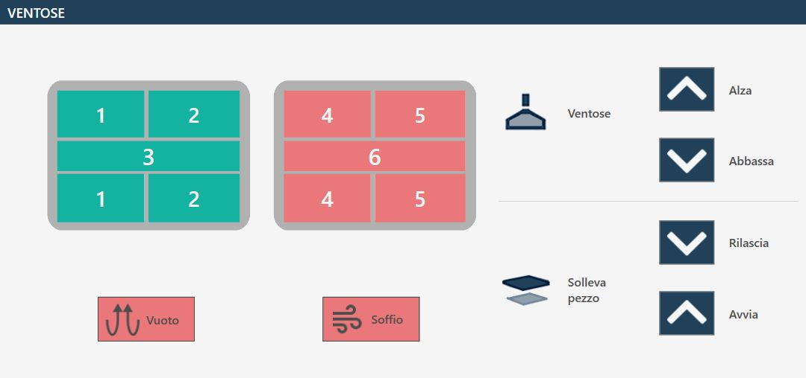
Botones de ventosas
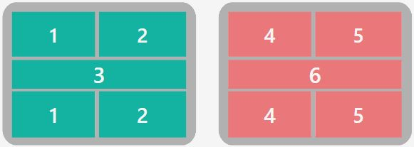 | Activación / desactivación de ventosas |
/1.3.png) | VENTOSAS: SUBIR - Aparcamiento de ventosas |
/2.3.png) | VENTOSAS: BAJAR - Preparar ventosas |
/4.3.png) | ELEVAR PIEZA: LIBERAR - Descarga de la pieza |
/3.3.png) | ELEVAR PIEZA: INICIAR - Elevación de la pieza |
/5.2_off.png) /5.2_on.png) | SOPLADO - Mando de soplado |
/6.2_off.png) /6.2_on.png) | VACÍO - Mando de la bomba de vacío |
Condiciones de seguridad
Preste especial atención a las ventosas activas durante la elevación, asegurándose de que las áreas utilizadas sean suficientes para elevar la pieza que se va a mover. Procure utilizar siempre la mayor superficie de vacío disponible para sujetar la pieza y compruebe que no haya defectos ni roturas en el material que puedan generar peligros o problemas de funcionamiento de la máquina.
Una vez encendida la bomba de vacío, solo puede apagarse mediante las funciones automáticas previstas para ello. Pulsar el botón de reset o la seta de emergencia no tiene ningún efecto sobre la bomba de vacío, que seguirá funcionando. El apagado de la bomba puede forzarse mediante el botón correspondiente dentro de la página «Mandos adicionales».
En los procedimientos automáticos, antes de elevar la pieza se comprueba el estado del vacío mediante un sensor específico: si no se detecta un valor de vacío suficiente, aparece la alarma «falta de vacío». La bomba seguirá activa hasta que el vacuostato detecte un valor correcto o hasta que se desactive desde la página «Mandos adicionales».
En las nuevas versiones de Parametrix es posible utilizar la función «Corte individual». Al seleccionar en la lista la opción «Corte individual», se mostrará una página similar a esta.
Con el Corte individual es posible realizar un corte rectilíneo (o también inclinado) sobre la losa, partiendo de la posición actual de la máquina y finalizando a la longitud solicitada por el usuario. Con esta función NO es posible realizar cortes de arcos ni de círculos.

Botones
 | Botones de cortes paralelos |
 | Máx. |
 | Stop |
 | Cambiar modo de pasadas |
 | Guardar |
 | Abrir |
Parámetros
En función del tipo de material que se desee mecanizar, es posible configurar los parámetros de forma diferente y guardarlos para posteriores mecanizados análogos.
Parámetros comunes
 | Longitud del corte individual |
 | Medida de desplazamiento |
Parámetros de configuración del mecanizado por pasadas
 | Penetración en el material avanzando |
 | Penetración en el material retrocediendo |
 | Penetración en el material para la última pasada |
 | Velocidad de mecanizado avanzando |
 | Velocidad de mecanizado retrocediendo |
 | Velocidad de entrada en el material |
 | Velocidad de mecanizado de la última pasada |
Parámetros de configuración del mecanizado a pasada completa
 | Velocidad de entrada en el material |
 | Velocidad de mecanizado avanzando |
Ejecución del mecanizado
Para iniciar el mecanizado, coloque primero la máquina en el punto de partida deseado. Una vez colocada correctamente, introduzca el valor de la longitud de corte en el campo correspondiente.
A continuación puede encenderse el disco mediante los mandos del panel del monitor. Cuando todo esté preparado, inicie el proceso pulsando el botón «Start ciclo».
El mecanizado se iniciará en la dirección en la que se encuentre la máquina en el momento de activar el corte, por lo que es importante comprobar su orientación antes de iniciar el ciclo.
La página de programación de archivos ISO permite gestionar e iniciar mecanizados mediante archivos .pgm creados previamente con programas CAD-CAM.

Lista
La lista del programa ISO, inicialmente vacía, contiene todos los programas ISO que pueden ejecutarse secuencialmente.

Botones
Hay una serie de botones para gestionar la lista.
 | Abrir archivo |
 | Nueva lista ISO |
 | Añadir pausa |
 | Eliminar elemento seleccionado |
 | Vaciar lista |
 | Mover elemento seleccionado hacia arriba |
 | Mover elemento seleccionado hacia abajo |
En la parte inferior se encuentran además los dos botones relativos a los modos de ejecución de los programas:
  | Manual / automático |
  | Individual / siguiente automático |
Abrir archivo
Al pulsar este botón aparecerá una ventana «Apertura de archivo», como se muestra en la siguiente imagen:

Esta ventana se divide en los siguientes componentes:
Lista de archivos
incluye todos los archivos con formato .pgm presentes en el directorio seleccionado actualmente
Botones entre la lista Archivos y la lista Archivos seleccionados
Lista de archivos seleccionados
Lista inicialmente vacía
vista previa del archivo seleccionado
Muestra una vista previa de un archivo .pgm seleccionado en Archivos o Archivos seleccionados
Barra inferior y filtro de búsqueda
Botones centrales, situados entre la lista «ARCHIVOS» y la lista «ARCHIVOS SELECCIONADOS»
 | Seleccionar elemento |
 | Eliminar elemento |
| Insertar pausa |
 | Mover elemento seleccionado hacia arriba |
 | Mover elemento seleccionado hacia abajo |
A continuación se muestra el contenido de la barra inferior:
 | Borrar filtro de búsqueda |
 | Ordenar por última modificación |
 | Orden alfabético |
 | Visualizar archivos de la memoria USB |
 | Visualizar carpeta ISO |
 | Visualizar contenidos |
 | Eliminar archivo |
 | Activar/Desactivar copia |
Código del programa ISO
El código del programa ISO en ejecución se muestra en esta ventana:

Botones
En esta sección del programa ISO se encuentran los siguientes botones y sus respectivas funciones.
 | Temporizador y Reset |
 | Vista previa ISO |
 | Búsqueda de bloque |
 | Búsqueda de bloque por línea Tras introducir un número en el campo «Número de línea» y pulsar el botón «Ir a», la visualización del código del programa ISO se desplazará hasta la línea deseada o hasta la última línea disponible si el número introducido supera el número de líneas del programa ISO seleccionado. Es posible finalizar la búsqueda de un bloque y restablecer la visibilidad del botón «Búsqueda de bloque» pulsando el botón Cerrar: |
 | Función Dry Run (Activada / desactivada) |
 | Función Test ISO (Activada / desactivada) |
 | Panel de ventosas |
 | Guardar |
Búsqueda de bloque
Durante la ejecución de archivos (.pgm), la función de búsqueda de bloque puede resultar útil para reposicionar la herramienta en el punto donde la máquina haya interrumpido la ejecución del programa, por ejemplo si la herramienta se bloquea dentro del material o por otros tipos de bloqueo.
Una vez pulsado el botón, es posible buscar la línea desde la que se desea continuar/iniciar el mecanizado mediante el número de línea, pulsando el botón «Búsqueda de bloque por línea», o desplazándose por el archivo con la barra situada al lado y seleccionando la línea deseada.
Después de seleccionar el punto del programa desde el que la máquina reanudará el trabajo interrumpido, pulse el botón «Start ciclo»; la máquina volverá a calcular todas las líneas de código del archivo .pgm sin efectuar ningún movimiento. La velocidad de esta operación depende del número de líneas de código que deban generarse sin realizar ningún movimiento.
Una vez finalizado el recálculo, la máquina activa una pausa automática y solicita volver a pulsar el botón «Start ciclo» para iniciar el mecanizado.
Antes de iniciar el ciclo se recomienda tener en cuenta el posicionamiento inicial de la máquina, que implica todos los ejes simultáneamente.
Esto es necesario porque la máquina se desplaza desde la posición actual hasta el punto en el que empieza a trabajar buscando la trayectoria más corta y, para ello, todos los ejes se mueven para llegar exactamente a dicho punto.
Esto significa, por ejemplo, que el eje Z no baja una vez alcanzado el punto inicial, sino que desciende gradualmente durante el recorrido. Esto podría dañar la máquina o el material si la máquina colisionara con material situado en medio de la trayectoria.
Por tanto, en función de la situación, es posible deseleccionar el movimiento de uno o varios ejes para evitar daños.
Para ello, basta con seleccionar los botones situados encima de cada eje, que pasarán de verde a rojo.
Los botones volverán automáticamente a verde al pulsar «Start Ciclo».
Vista previa ISO
Si se ha activado la vista previa ISO, a la derecha del cuadro «Código del programa ISO» se mostrará otro cuadro similar al representado a continuación:

La vista previa ISO ofrece los siguientes botones:
 | Vista en perspectiva |
 | Vista ortogonal al plano XY |
 | Vista ortogonal al plano ZX |
 | Vista ortogonal al plano ZY |
 | Activar o desactivar la visualización de la vista previa  |
Ejecución del mecanizado
El operador puede crear una lista de archivos PGM abriendo los archivos deseados mediante la función de carga correspondiente.
Antes de iniciar la ejecución, es posible —opcionalmente— modificar el orden de los archivos en la lista e insertar pausas entre una ejecución y la siguiente. Estas pausas permiten gestionar el proceso con mayor flexibilidad y, si es necesario, interrumpirlo de forma segura.
Al configurar el modo de ejecución como «Automático», también está disponible la función «Test ISO», útil para comprobar la corrección del programa ISO seleccionado antes de la ejecución real.
Para iniciar el ciclo de ejecución, el operador debe pulsar el botón «Iniciar ciclo». De este modo se ejecutará el primer programa ISO cargado y mostrado en la lista.
Los programas ISO pueden ejecutarse según dos modos operativos:
El modo «Individual» permite interrumpir la ejecución de la programación al finalizar cada archivo ISO. Es necesario volver a pulsar el botón «Iniciar ciclo» para proceder con la ejecución del siguiente archivo de la lista.
El modo «Siguiente automático» permite ejecutar los archivos ISO secuencialmente, sin intervención manual, hasta el final de la lista.
En ambos modos, las pausas insertadas entre los archivos permiten al operador interrumpir el ciclo en cualquier momento, garantizando así un control continuo de la ejecución.
El ciclo de planeado permite realizar el planeado del banco o del material. Este programa resulta útil cuando el banco se vuelve irregular debido a los cortes o cuando se desea igualar el espesor del material.

Parámetros de planeado
 | Cota del desplazamiento respecto al eje X |
 | Cota del desplazamiento respecto al eje Y |
 | Medida de desplazamiento |
 | Profundidad |
 | Paso Z |
 | Velocidad de corte en penetración |
 | Velocidad de corte hacia delante |
 | Modificar origen de herramienta |
Ejecución del mecanizado
El programa «PLANEADO» no requiere la puesta a cero del origen X, Y y Z.
Para determinar la posición de inicio se tiene en cuenta la posición de la herramienta en el momento en que se inicia el ciclo.
Después de establecer los distintos parámetros, lleve el disco encendido hasta la profundidad máxima deseada del banco o material e inicie el ciclo con el botón START CICLO.
La página de cajeado permite realizar un cajeado rectangular con radios y fondo plano.
Para este mecanizado es necesario utilizar una fresa adecuada, que debe montarse en el husillo principal.
Como nivel del fondo se utiliza el «nivel del banco».
El ciclo prevé el modo por pasadas con entrada helicoidal en el centro y distancia entre pasadas configurable mediante parámetros.

Parámetros
 | X |
 | Y |
 | Radio R |
Profundidad del cajeado | |
 | Paso Z |
 | Distancia entre pasadas |
 | Incremento de profundidad de entrada 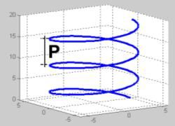 |
 | Velocidad de trabajo |
 | Velocidad de descenso |
 | Puesta a cero de los ejes X e Y  La posición se toma colocando el centro de la fresa en el punto indicado. |
Ejecución del mecanizado
Introduzca las medidas X, Y y R que caracterizan la forma del cajeado rectangular que se desea obtener.
Compruebe la corrección de los datos relativos a la herramienta, en particular el diámetro.
Están disponibles los dos modos de ejecución siguientes
Modo de alcance del cajeado hasta la cota del banco
Para realizar correctamente un cajeado es necesario colocar el centro de la máquina en el punto de origen del cajeado, como se muestra en la figura del capítulo anterior. Esto garantiza que todo el mecanizado se desarrolle correctamente respecto al área designada.
A continuación se establecen las medidas características de la forma del cajeado que se desea realizar.
Antes de iniciar el mecanizado es fundamental comprobar la exactitud de los datos de la herramienta seleccionada, prestando especial atención al diámetro, ya que influye directamente en la precisión y la calidad del cajeado.
La adquisición de la «cota del banco» debe realizarse tomando como referencia el nivel del fondo del cajeado. Para determinarla correctamente, colóquese en el borde superior del material y ponga a cero la cota Z. Desde ese punto, realice un desplazamiento hacia abajo igual a la profundidad deseada del cajeado. A continuación, puede adquirir la cota del banco mediante el botón correspondiente. Si se utilizan herramientas de tipo fresa, se recomienda realizar esta operación con el eje A situado a 90_, para evitar imprecisiones debidas a la longitud efectiva de la herramienta.
Una vez definida la cota del banco, se procede a la puesta a cero de los ejes X e Y. Para ello, pulse el botón de reset correspondiente y coloque el centro de la fresa exactamente en el punto indicado en la figura mediante el símbolo de referencia. En las máquinas equipadas con láser de puntero es posible adquirir el punto cero en X e Y utilizando directamente la referencia proporcionada por el láser.
La profundidad del cajeado depende directamente del nivel establecido como cota del banco y de la posición del eje Z al iniciar el ciclo mediante el botón «Start ciclo». El mecanizado se realiza mediante una entrada helicoidal en el centro hasta la profundidad especificada en el parámetro «Paso en Z». A continuación, el área se vacía con un movimiento concéntrico siguiendo la distancia establecida en los parámetros de mecanizado.
Los desplazamientos de la máquina necesarios para alcanzar la posición inicial se realizan a la denominada «cota de liberación», que puede definirse en los parámetros de herramienta. Esto garantiza que la herramienta no interfiera con posibles obstáculos durante los movimientos de posicionamiento.
Modo Posicionamiento sobre la pieza y puesta a cero del valor de origen
Este modo prevé la configuración y posterior uso del parámetro: «Profundidad del cajeado»
Con esta función es posible añadir cortes múltiples.
Este tipo particular de cortes permite crear una serie de cortes paralelos entre sí dentro del mismo grupo, con la posibilidad de disponer de dos grupos, cada uno con su propia dirección configurable.
La interfaz presenta un aspecto similar al siguiente:

Barra lateral
Selección y gestión de grupos de cortes
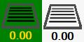 | Creación del primer grupo de cortes |
Creación del segundo grupo de cortes | |
 | Gestión de los cortes |
Parámetros de cortes
Para cada uno de los dos grupos de cortes disponibles para el operador es posible introducir hasta 100 configuraciones simultáneas de cortes, con sus respectivos parámetros.
 | Direcciones ortogonales |
Anchura | Distancia entre un corte y otro. |
Número | Cantidad de cortes paralelos que se deben crear. |
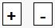 | Posición de los cortes |
 | Visualizar cortes siguientes/anteriores |
Alargamiento de cortes
El operador puede alargar todos los cortes presentes en el primer y segundo grupo al inicio o al final de la medida establecida.
 | Start |
 | End |
Borrar y actualizar cortes
 | Borrar cortes |
 | Actualizar cortes |
Eje C
Es posible girar el cabezal de la máquina para ajustar la orientación de los cortes tanto del primer como del segundo grupo.
Girar _90 | |
 | Girar -90 |
 | Rotación del cabezal de la máquina |
 | MDI |
Espesor
El operador puede definir el espesor de la losa que se va a cortar.
 | Espesor manual |
 | Espesor con máquina |
Ejecución del mecanizado
El operador puede configurar ambos grupos de corte modificando sus respectivos parámetros.
Una vez obtenido el resultado deseado, puede pulsarse el botón «Iniciar ciclo» para ejecutar el mecanizado.
Primer grupo de cortes
En el primer grupo de cortes se definirán uno o varios grupos de cortes modificando los parámetros Anchura, Número y Posición de cortes, además de la rotación del eje C.
En el siguiente mecanizado se han configurado cortes paralelos respecto a la posición actual de la máquina.

Segundo grupo de cortes
De forma similar al primer grupo de cortes, también en el segundo es posible modificar los parámetros para obtener el resultado deseado.
En este mecanizado se ha modificado la dirección de los cortes, realizando algunos cortes ortogonales respecto a los del primer grupo.

Optimización y gestión de los cortes
En esta sección se puede modificar el orden de ejecución de los cortes, con la posibilidad de elegir si se ejecuta o no un corte.

IsoCam es el software para ejecutar perfilados con el disco; permite dibujar o importar formas, decidir el perfil y aplicar distintos modos de mecanizado.
La gestión de la programación del trabajo se divide en distintas fases que se describen en los apartados siguientes.
Al abrir el programa IsoCam, si no existe ningún mecanizado creado anteriormente, el operador podrá crear uno nuevo desde el primer paso del mecanizado.
Si, por el contrario, existe un mecanizado creado anteriormente, se cargará automáticamente y el operador accederá directamente al último paso del mecanizado:

Elementos comunes a los distintos pasos
La interfaz de usuario está compuesta por distintas áreas.
Menú: utilidades rápidas.
Barra superior: funciones específicas de la página activa.
Parte central: contiene el dibujo o el área activa según la página.
Barra lateral: ventana que contiene los parámetros que deben modificarse.
Barra inferior: botones generalmente válidos en distintas áreas del software.
Los siguientes elementos permanecerán siempre visibles, independientemente de la fase actual del proceso.
Menú
La barra de menús se encuentra en la parte superior, por encima de todos los demás elementos de esta interfaz.
Visualizar | Se ponen a disposición del operador algunas opciones relativas a la visibilidad de las piezas presentes en el área de trabajo. |
Opciones | Es posible modificar opciones relativas a los colores. |
Idioma | ISOCAM está disponible actualmente en los siguientes idiomas:
|
Barra lateral derecha
 | Configuración |
 | Info |
 | Gestión de pasos |
 | Cerrar |
Configuración
Este panel permite pasar al modo Avanzado de IsoCam, volver a la versión básica y modificar los valores de Paso de cuadrícula en X e Y.

Barra inferior
 | Nuevo mecanizado |
 | Abrir mecanizado |
 | Guardar mecanizado |
 | Modificar mecanizado |
Dibujo de la sección (paso 1 de 4)
La primera fase de la programación consiste en dibujar la sección que se va a mecanizar. La ventana ofrece los mandos característicos de un software CAD: dibujo de línea, dibujo de arco, snap, mover, etc.
La idea básica del software es crear la sección como un boceto rápido que posteriormente se modificará, entidad por entidad, mediante los mandos correspondientes. Sigue estando disponible en todo momento la posibilidad de importar dibujos .dxf generados por sistemas CAD externos.

Barra superior

 | Comando de dibujo de línea |
 | Comando de dibujo de arco |
 | Mueve los segmentos seleccionados |
 | Figura especular |
 | Redondear |
 | Invertir selección activa |
 | Eliminar segmentos seleccionados |
Barra lateral derecha
Propiedades de línea
Al seleccionar una línea en el área de trabajo, la columna lateral derecha se actualiza para mostrar las características de la entidad seleccionada, que pueden ser modificadas por el usuario:
Longitud | Indica la distancia lineal entre los dos extremos de la línea seleccionada, calculada en función de las coordenadas del espacio de trabajo. |
Ángulo | Indica la orientación de la línea respecto al eje horizontal del sistema de referencia. |
Δx | Indica la variación de la coordenada X entre el punto inicial y el punto final de una línea o entidad, es decir, la distancia horizontal recorrida respecto al eje X del sistema de referencia. |
Δy | Indica la variación de la coordenada Y entre el punto inicial y el punto final de una línea o entidad, es decir, la distancia vertical recorrida respecto al eje Y del sistema de referencia. |
 | Alargar/Acortar línea seleccionada |
 | Aproximar ángulo |
Escalar segmentos conectados | Permite aplicar un escalado proporcional a todas las entidades conectadas directa o indirectamente con la línea seleccionada. |
Propiedades de arco
Al seleccionar un arco en el área de trabajo, la columna lateral derecha se actualiza para mostrar las características de la entidad seleccionada, que pueden ser modificadas por el usuario.
El arco puede definirse de distintas formas: por puntos, como centro, radio y arco, etc.
Las distintas características se muestran en la ventana que aparece a la derecha.
La modificación de algunas características puede satisfacerse de distintos modos, por ejemplo cambiando el radio o el punto inicial/final; para determinar el modo de modificación está disponible la casilla «Centro fijo».
Radio | Indica la distancia constante entre el centro de una curva circular o de un arco y cualquier punto de su circunferencia. |
Ángulo inicial/final | Ángulo del punto inicial o final respecto al centro. |
Tangente ant. / sig. | Modifica el ángulo inicial o final para que el arco sea tangente a la entidad anterior o siguiente. |
Centro fijo | Permite decidir las consecuencias de una modificación (radio o ángulo). |
Desplazar / Mover selección
Al activar el comando «desplazar» aparece la ventana con los parámetros de movimiento. El movimiento puede realizarse directamente haciendo clic en el área de dibujo (también con los snap activos) o configurando los parámetros.
El desplazamiento debe confirmarse con el botón «OK».
 | Selector de posición |
 | Traslación |
Mover copia | Si está activada, la función crea una copia de la entidad seleccionada y aplica el desplazamiento únicamente a esta copia, dejando sin cambios la entidad original. |
Reflejar
Después de activar el comando, es necesario establecer el centro de simetría haciendo clic en el área de trabajo o introduciendo las cotas, seleccionar la dirección de reflejo y pulsar el botón «OK» para confirmar.
Centro de simetría | Permite modificar las coordenadas del centro de simetría utilizado para el volteo horizontal o vertical de la entidad seleccionada. |
Coordenadas que invertir | Indica si se debe realizar el volteo horizontal, vertical o en ambas direcciones. |
Reflejar copia | Si está activada, la operación de reflejo se realiza creando una copia reflejada de la entidad seleccionada y manteniendo intacta la original. |
Redondear
Un primer mensaje, mostrado en la columna de la derecha, permite al operador establecer el radio del redondeo y confirmar la selección.

Un segundo mensaje informa al operador de que ya es posible insertar redondeos entre dos líneas, operación que permanece disponible hasta que se desactive la función.

A continuación se muestra un ejemplo de aplicación de redondeos en dos líneas adyacentes y en una línea adyacente a un arco:

Después de aplicar los redondeos:

Barra inferior
 | Importar archivo DXF |
 | Exportar archivo DXF |
 | Deshacer modificación |
 | Snap inicio/fin |
 | Comando Orto |
 | Comando Segmentos conectados |
 | Cuadrícula de dibujo |
 | Undo Zoom |
 | Seleccionar área para Zoom |
 | Restablecer Zoom |
Selección de perfil (paso 2 de 4)
La sección dibujada anteriormente debe aplicarse a un perfil adecuado.
El perfil puede ser lineal o en arco, en el plano X/Y o también vertical; en función de la selección se activarán o desactivarán algunos modos de trabajo. Por ejemplo, un perfil en arco en el plano XY solo puede mecanizarse con el disco vertical y, a la inversa, un perfil en arco en el plano XZ o YZ.
El tipo de perfil se elige mediante los botones de la izquierda; en la parte superior central se muestran los parámetros para describir geométricamente el perfil y en la parte inferior central se muestra la vista previa del resultado.

Parte central
Perfil lineal | Se establece la dirección y la longitud. |
Perfil en arco | Se definen: dirección, plano de trabajo, concavidad y características geométricas. |
Perfil circular | Solo se mecanizará externamente con disco horizontal. |
Parámetros del perfil lineal

Ejecución del perfil | Hay dos modos disponibles: «A lo largo de X» y «A lo largo de Y». |
Longitud de línea (L) | Longitud horizontal de la base del segmento inclinado, medida entre el punto inicial y el punto final proyectado horizontalmente. |
Delta Z del punto final (H) | Altura del segmento inclinado, es decir, la diferencia de cota entre el inicio y el final del segmento. |
Parámetros del perfil en arco

Ejecución del perfil | Elección entre «A lo largo de X» o «A lo largo de Y». |
Orientación del mecanizado | Elección entre «Plano XZ» o «Plano XY». |
Tipo de mecanizado | Elección entre «Cóncavo» o «Convexo». |
Longitud (L) | Distancia horizontal entre los dos extremos del arco, es decir, la cuerda que une el inicio y el final del arco. |
Radio inicial (R) | Distancia desde el centro del arco hasta un punto del propio arco. Determina la curvatura global del arco. |
Desarrollo vertical (H) | Altura máxima del arco respecto a la cuerda L; representa la distancia vertical entre el punto más alto del arco y la cuerda. |
Amplitud del ángulo (A) | Ángulo central subtendido por el arco, expresado en grados. |
La modificación de uno de los siguientes valores: «Longitud», «Radio inicial», «Desarrollo vertical» o «Amplitud del ángulo», provoca el recálculo automático de los parámetros restantes.
Parámetros del perfil circular

Radio inicial (R) | Determina el radio desde el punto de partida. |
Protección | Esta casilla indica si durante el mecanizado el eje C gira (protección activa) o permanece inmóvil con C=0_ (sin protección). |
Barra inferior
 | Vista de la mesa |
 | Luces adicionales |
 | Gestión de vistas predeterminadas |
Parámetros de trabajo (paso 3 de 4)
La página está dividida en cuadros con distintos tipos de datos que deben configurarse para el mecanizado

Parámetros de herramienta
El operador puede definir los parámetros de la herramienta:

Si se trata de un proyecto nuevo, los datos se cargan automáticamente en función de la herramienta instalada físicamente; si se trata de un mecanizado guardado anteriormente, los datos de la herramienta serán los ya guardados en el programa anterior.
 | Nombre de herramienta |
 | Espesor |
 | Diámetro |
 | CRF (Centro de rotación de la brida) |
 | Cota de seguridad |
 | RPM (Revoluciones por minuto) |
Orientación del mecanizado

Perfil lineal
Para perfiles lineales es posible elegir si se realiza el mecanizado con el disco en posición vertical o con el disco en posición horizontal (desde el frente o desde la izquierda).
Orientación vertical | Orientación horizontal |
 |  |
Perfil en arco
Para perfiles curvilíneos, la orientación está condicionada por el tipo de perfil:
Tipo de mecanizado | Orientación vertical | Orientación horizontal |
Cóncava |  |  |
Convexa |  |  |
Tipo de mecanizado

El mecanizado puede realizarse de dos modos:
 | Modo por cortes |
 | Modo espatulado |
Configuración por cortes
Se realizarán cortes paralelos entre sí siguiendo el perfil seleccionado, con una distancia entre cortes tomada de un parámetro.

Paso | Indica la distancia entre la posición de un corte y la del corte adyacente. Si es superior al espesor del disco, quedará material entre las pasadas. |
Alargamiento inicio / fin | Permite alargar un corte en la parte inicial / final en el valor establecido. |
Más auto | Al activar la casilla se incrementa automáticamente el valor de alargamiento en función de un valor establecido por el sistema. |
Sobrematerial | Espesor del material que debe dejarse por encima de la sección final deseada. |
Dirección de los cortes | La dirección del corte puede ser de derecha a izquierda o de izquierda a derecha, según la configuración seleccionada. |
Configuración de espatulado
El movimiento será transversal a la dirección del perfil y se utiliza para el acabado superficial de la pieza.

Paso de espatulado | Indica la distancia entre un movimiento transversal y el siguiente a lo largo de la dirección del perfil. |
|---|
Velocidad y modo de corte
En función de las selecciones anteriores aparecen distintos menús para seleccionar los parámetros necesarios para definir el mecanizado.

Si el tipo de mecanizado seleccionado es la Configuración por cortes, estarán disponibles dos tipos de parámetros de trabajo:
 | Modo Mármol |
 | Modo Granito |
Modo Mármol
Parámetros generales:
Cortes en ambos sentidos (acabado) | Esta casilla permite establecer una velocidad de retorno distinta de la velocidad de ida. |
No elevar nunca (acabado) |
Parámetros de velocidad:
Ida | Velocidad de ejecución de ida de la pasada. |
Retorno | Velocidad de ejecución de retorno de la pasada. |
Penetración | Velocidad de ejecución de penetración de la pasada. |
Mínima | Al establecer un valor distinto de cero, la velocidad de corte dependerá de la profundidad del propio corte; por tanto, se tendrá un movimiento a velocidad de ida para cortes con profundidad nula y a velocidad mínima cuando el corte esté a la máxima profundidad para la sección seleccionada. |
Modo Granito

Parámetros generales:
Arranque de material en corte | Cantidad de material que se elimina en la pasada de ida. |
Arranque de material en retorno | Cantidad de material que se elimina en la pasada de retorno. |
Si el tipo de mecanizado seleccionado es la Configuración de espatulado, estará disponible un único parámetro de trabajo:
Velocidad - Mecanizado | Establece la velocidad con la que se ejecutará el tipo de mecanizado espatulado. |
|---|
Parámetros de mecanizado (avanzado)
 | Parámetros de mecanizado (avanzado) |
En esta pantalla es posible comprobar y modificar distintos parámetros, muchos de los cuales se han establecido en los pasos 2 y 3.

La primera operación consiste en seleccionar el tipo de perfil que se va a utilizar:
 | Lineal |
 | En arco |
Y, a continuación, los siguientes parámetros:
Mecanizado | Puede ser por cortes o espatulado. |
Orientación del mecanizado | El mecanizado puede realizarse en vertical o en horizontal. |
Ejecución del perfil a lo largo de | A lo largo de X o Y. |
Datos de mecanizado
Para el perfil lineal es posible establecer los siguientes parámetros:
Espesor del material | Define la medida del espesor del material (en mm) |
Inclinación del perfil (mm) | Permite definir la inclinación del perfil indicando la diferencia de altura entre el punto final y el punto inicial. |
Para el perfil en arco están disponibles los parámetros configurables en los pasos anteriores.
Ambos perfiles tienen además en común los siguientes datos de mecanizado:
Paso | Fijo en Y: mantiene fija la distancia entre los cortes independientemente de la sección subyacente |
Dirección de los cortes | Elección entre «Y_» o «Y-». |
Mecanizado completo del perfil | Permite elegir si se ejecuta o no el mecanizado completo del perfil. |
Forzar cortes en ángulos | Añade cortes en los puntos de variación de pendiente. |
Eliminar superpuestos | Si esta casilla está activada y el valor «Paso» es mayor que el valor «Espesor», se eliminarán los cortes superpuestos. |
Paso optimizado (tintura) % Solap. | Si el valor «Paso» es menor que el valor «Espesor», el paso se optimizará en las líneas horizontales. |
Ejecutar corte al inicio | Permite elegir si se ejecuta o no un corte al inicio del perfil. Mediante la casilla situada al lado es posible establecer la profundidad de este corte. |
Ejecutar corte al final | Permite elegir si se ejecuta o no un corte al final del perfil. Mediante la casilla situada al lado es posible establecer la profundidad de este corte. |
Datos de herramienta
Aquí se muestran algunos datos configurados anteriormente y otros parámetros específicos de la herramienta.

Descripción de la herramienta | Una breve descripción de la herramienta |
 | Almacén de herramientas |
N.º de posición | Indica el número de posición dentro del almacén de la herramienta seleccionada. |
N.º de corrector | Indica el número que identifica el nombre de la herramienta seleccionada. |
Espesor del alma del disco (SA) | Espesor del cuerpo portante central del disco. |
Forma del diente | El operador podrá elegir entre tres formas de diente:
|
 | Selección de material
|
Prioridad | Es posible establecer un valor de prioridad (estrictamente positivo). |
Profundidad | Indica la profundidad del corte de la herramienta. |
Mecanizado (paso 4 de 4)
En función de las selecciones anteriores se muestra una vista previa de los cortes calculados. La página se divide en distintas áreas con los mandos para gestionar las modificaciones.

Una vez comprobados los cortes o realizadas las modificaciones deseadas, pulse el botón «ADELANTE» para abrir la página de generación del programa de corte.
Menú
En el cuarto paso se hace visible una opción adicional en el menú superior:
Cortes | Este menú ofrece al operador algunas opciones rápidas para los cortes generados. |
|---|
Barra superior
 | Generación de cortes |
 | Modificar la posición del corte |
 | Añadir un corte de cabeza para separar las piezas |
 | Añadir un corte de cola para separar las piezas |
 | Añadir un corte en la posición del ratón (Ins) |
 | Eliminar el corte seleccionado |
 | Eliminar los cortes anteriores al corte seleccionado |
 | Eliminar los cortes posteriores al corte seleccionado |
 | Simulación de cortes |
Parte central
Barra lateral derecha
En el cuarto paso, esta barra contiene la siguiente información:
 | Número progresivo de corte |
 | Datos generales |
 | Datos de cortes |
Barra inferior
 | Opciones del corte |
  | Mover/alargar cortes |
 | Shift |
Creación del programa
Una vez completada la preparación del cuarto paso, es posible acceder a la fase final, que incluye la visualización del resultado obtenido y la generación del archivo ISO.
En la parte central se muestra el modelo 3D del mecanizado generado teniendo en cuenta el modo de trabajo. Haciendo clic en el área es posible girar la vista y gestionar el zoom.

Procedimiento básico
Paso 1
Para empezar, pulse el botón «Nuevo mecanizado». Asegúrese de que la función «Segmentos conectados» esté activa y, a continuación, active el comando «línea». Realice una serie de clics en el área de trabajo para dibujar la sección deseada. Una vez completado el dibujo, vuelva a hacer clic en el comando «línea» para desactivarlo. A continuación, seleccione cada entidad individualmente para comprobar y, si es necesario, modificar sus parámetros.
Paso 2
En este paso, el operador puede establecer algunos datos generales básicos relacionados con el tipo de mecanizado deseado.
Paso 3
En este punto es posible establecer parámetros relativos a la herramienta, al tipo, a la orientación y a los parámetros del mecanizado seleccionado.
Además, en el panel «Parámetros de mecanizado (avanzado)» es posible obtener una visión general de todos los parámetros configurados hasta ese momento.
Paso 4
Se genera automáticamente una lista de cortes para el mecanizado actual. Es posible insertar, modificar y eliminar cortes según las necesidades operativas.
Generación ISO
El paso final del mecanizado permite al operador crear un archivo ISO a partir del mecanizado obtenido o reiniciar el procedimiento.
El programa Pulido permite realizar el pulido mediante distintos tipos de mecanizado. Además, es posible elegir el modo de adquisición de la geometría de la losa: detectando los puntos que determinan los vértices de la superficie (desde tres hasta un máximo de seis) o utilizando una superficie regular (rectángulo) mediante la introducción de la cota cero y del valor de los dos lados.
/1.1-20250731-080428.png)
Modo de mecanizado
Para utilizar este mecanizado, primero debe elegirse uno de los dos modos disponibles seleccionando el botón correspondiente:
Los modos «
Selección de rectángulo
» y «
Selección libre de puntos
» son mutuamente excluyentes: al activar uno se desactiva automáticamente el otro.
/1.1-20250303-082732.png) | Cambiar al modo Selección libre de puntos |
/1.2-20250303-082732.png) | Cambiar al modo Selección rectangular |
Modo de entrada/salida
Los botones de la figura permiten modificar la entrada y la salida de la herramienta entre los modos progresivo y estándar.
Los modos «
Progresivo
» y «
Estándar
» son mutuamente excluyentes: al activar uno se desactiva automáticamente el otro.
/2.1_b-20250731-113844.png) | Cambio a modo progresivo |
|---|---|
/2.2_b-20250731-113804.png) | Cambio a modo estándar |
Modo Selección libre de puntos
Este modo se muestra de la siguiente forma:
/c-20250731-120333.png)
Parámetros
Posición de puntos
/3.1.1.1-20250731-111822.png) /3.1.1.2-20250731-111843.png) | Set (Establecer) |
/3.1.1.3_b-20250731-112553.png) | Limpiar |
Tipos de mecanizado
/3.1.2.1_b-20250731-114156.png) | Contorno |
/3.1.2.2_b-20250731-114218.png) | Pasadas horizontales |
/3.1.2.3_b-20250731-114252.png) | Pasadas verticales |
/3.1.2.5_b-20250731-114340.png) | Repetición global |
Parámetros de mecanizado
Repeticiones | Cada tipo de mecanizado puede repetirse un número de veces fijado en este campo. |
Realizadas | Se muestra el número de repeticiones realizadas. |
Paso [mm] | Indica la distancia entre una pasada y la siguiente, seleccionable para cada tipo de mecanizado. |
Parámetros de la herramienta para el pulido
/3.2.1_b-20250731-114407.png) | Velocidad de trabajo |
/3.2.2_b-20250731-114433.png) | Velocidad de descenso |
/3.2.3_b-20250731-114455.png) | Desgaste de la herramienta |
Ejecución del modo Selección libre de puntos
Entre un mecanizado y el siguiente, la máquina realiza los desplazamientos sin elevarse hasta la cota de seguridad.
El operador establece la posición de un mínimo de tres y un máximo de seis puntos disponibles, moviendo manualmente la máquina y utilizando los mandos de guardado correspondientes. Una vez completada la definición de los puntos, se configuran los parámetros de mecanizado para cada tipo de pulido deseado. Al mismo tiempo, se establecen también los parámetros específicos de la herramienta que se utilizará para el pulido.
En cualquier momento antes de iniciar el ciclo de pulido, el operador puede modificar el modo de entrada y salida de la herramienta seleccionando una de las dos opciones disponibles.
Una vez completada la configuración, es necesario inclinar el eje A de la máquina a 90_ e iniciar la rotación del disco. A continuación, el operador puede ejecutar los ciclos programados pulsando el botón «Iniciar ciclo». Durante la ejecución, el progreso puede supervisarse mediante la columna «Realizadas», que muestra los ciclos completados para cada tipo de pulido seleccionado.
Modo Selección rectangular
Este modo se muestra de la siguiente forma:
/d-20250731-120352.png)
Parámetros
Posición del rectángulo
/4.1.1.2-20250731-115103.png) | Lados del rectángulo |
|---|
Parámetros de mecanizado
Consulte el modo parámetros de mecanizado Selección libre de puntos para los mecanizados: Contorno, Pasadas horizontales/verticales y Repetición global.
/3.1.2.4_b-20250731-114318.png) | En zigzag |
Parámetros de la herramienta para el pulido
Consulte Parámetros del disco Selección libre de puntos para los parámetros del disco: Velocidad de trabajo, Velocidad de descenso y Desgaste del disco.
/3.2.4_b-20250731-114520.png) | Paso del eje Y para Zigzag |
Ejecución del modo Selección rectangular
Entre un mecanizado y el siguiente, la máquina realiza los desplazamientos sin elevarse hasta la cota de seguridad.
El operador define la posición del rectángulo destinado al pulido moviendo manualmente la máquina y modificando los valores de las coordenadas correspondientes. Una vez completada la definición del rectángulo, se configuran los parámetros de mecanizado para cada tipo de pulido deseado. Al mismo tiempo, se establecen también los parámetros específicos de la herramienta empleada para el pulido.
En cualquier momento antes de iniciar el ciclo de pulido, el operador puede modificar el modo de entrada y salida de la herramienta seleccionando una de las dos opciones disponibles.
Una vez completada la configuración, es necesario inclinar el eje A de la máquina a 90_ e iniciar la rotación del disco. A continuación, el operador puede ejecutar los ciclos programados pulsando el botón «Iniciar ciclo». Durante la ejecución, el progreso puede supervisarse mediante la columna «Realizadas», que muestra los ciclos completados para cada tipo de pulido seleccionado.
La página Lista de programación de archivos ISO permite ejecutar varios programas consecutivamente, creados previamente con programas CAD-CAM, para máquinas con dos áreas de trabajo, máquinas Twin o programas con varios mecanizados creados mientras la máquina ya está en funcionamiento.

Barra superior
En la barra superior se muestra información de supervisión del estado de avance de la lista

Activación/Desactivación de la Lista de programas ISO | |
  | Estado de ejecución de la lista |
  | Barra de progreso de la lista |
Barra de progreso de la lista
Esta barra de progreso proporciona información sobre el estado de ejecución del programa ISO en curso y, al mismo tiempo, ofrece una visión general del siguiente programa de la lista y del que ya ha completado la fase de mecanizado y ha pasado a la descarga.

En la imagen anterior todavía no se muestra ningún programa en fase de descarga, ya que la ejecución de la lista no se ha iniciado y aún no se ha procesado ninguna pieza. Por el contrario, si solo hay un archivo ISO en la lista o si el mecanizado ya se ha iniciado y todos los demás archivos ya se han ejecutado, la sección Siguiente estará vacía.
Durante la ejecución, se mostrará en tiempo real el estado de avance del programa, como se ilustra a continuación.

Menú lateral
En el lado derecho del panel de ventosas hay algunos botones relacionados con la gestión de los archivos individuales de la lista de programas.
 | Ejecutar programa siguiente |
 | Mover elemento seleccionado hacia arriba |
 | Mover elemento seleccionado hacia abajo |
 | Eliminar elemento seleccionado |
 | Panel de ventosas |
Panel de ventosas
Es posible utilizar las ventosas en modo manual para desplazar piezas de una zona de trabajo a otra.

Botones de ventosas
 | Activación / desactivación de ventosas |
 | VENTOSAS: SUBIR - Aparcamiento de ventosas |
 | VENTOSAS: BAJAR - Preparar ventosas |
 | ELEVAR PIEZA: LIBERAR - Descarga de la pieza |
 | ELEVAR PIEZA: INICIAR - Elevación de la pieza |
  | SOPLADO - Mando de soplado |
  | VACÍO - Mando de la bomba de vacío |
Condiciones de seguridad
Preste especial atención a las ventosas activas durante la elevación, asegurándose de que las áreas utilizadas sean suficientes para elevar la pieza que se va a mover. Procure utilizar siempre la mayor superficie de vacío disponible para sujetar la pieza y compruebe que no haya defectos ni roturas en el material que puedan generar peligros o problemas de funcionamiento de la máquina.
Una vez encendida la bomba de vacío, solo puede apagarse mediante las funciones automáticas previstas para ello. Pulsar el botón de reset o la seta de emergencia no tiene ningún efecto sobre la bomba de vacío, que seguirá funcionando. El apagado de la bomba puede forzarse mediante el botón correspondiente dentro de la página «Mandos adicionales».
En los procedimientos automáticos, antes de elevar la pieza se comprueba el estado del vacío mediante un sensor específico: si no se detecta un valor de vacío suficiente, aparece la alarma «falta de vacío». La bomba seguirá activa hasta que el vacuostato detecte un valor correcto o hasta que se desactive desde la página «Mandos adicionales».
La falta de alimentación de la bomba de vacío provoca una rápida pérdida del vacío y la consiguiente caída del material elevado con las ventosas.
Barra inferior
En la parte inferior de la barra se muestran algunas funciones relacionadas con la ejecución de la lista de programas ISO, además de la supervisión tanto de la herramienta como de la losa.

Gestión de la ejecución de la lista
En la parte inferior se encuentran además los dos botones relativos a los modos de ejecución de los programas:
  | Manual / automático |
  | Individual / siguiente automático |
Supervisión de la losa y la herramienta
En el centro y a la derecha de la barra inferior, el operador puede configurar controles periódicos del diámetro de la herramienta, estableciendo comprobaciones a intervalos definidos en función del número de ciclos realizados.

 | Número de ciclos entre palpados del disco |
|---|---|
 | Número de ciclos hasta el próximo palpado |
 | Diámetro de la herramienta |
 | Espesor de la losa |
Ejecución de la Lista de programas ISO
Si la Lista de programas ISO está desactivada, el interruptor situado en la parte superior derecha del panel aparecerá apagado; por tanto, será posible activar la función simplemente haciendo clic en este botón.
La lista de programas ISO se amplía automáticamente a medida que se generan archivos ISO en Parametrix; en cualquier caso, el operador puede recolocar elementos dentro de la lista o eliminarlos según sus necesidades.
Antes de proceder con la ejecución de la lista, el operador puede establecer el número de ciclos que se ejecutarán entre las operaciones de palpado de la herramienta.
A continuación se actualizará y mostrará el número de ciclos restantes hasta el siguiente palpado.
El operador inicia la ejecución de la lista de programas pulsando el botón «Iniciar ciclo». De este modo, los programas se ejecutan secuencialmente, mostrando simultáneamente el programa en curso, el que se ejecutará a continuación y el que ya ha finalizado.
Si el modo de ejecución de los programas está configurado como Manual e Individual, la ejecución de la lista se interrumpirá al finalizar el programa en curso, justo después de preparar el siguiente programa que debe ejecutarse.
En ese caso, el operador puede pulsar el botón Siguiente cuando lo considere oportuno y continuar la ejecución volviendo a pulsar el botón «Iniciar ciclo»
El sistema ha sido diseñado para facilitar al operador la programación de los cortes automáticos. Mediante el software es posible:
Establecer la posición de la losa en el área de trabajo de la máquina y crear el perímetro del material para el mecanizado
Crear piezas mediante figuras paramétricas
Importar figuras realizadas con otros sistemas CAD
Generar una lista de piezas que deben mecanizarse
Buscar la mejor posición de las piezas sobre la losa
Configurar funciones especiales de corte
Programar el orden de corte y crear el movimiento de la máquina
Supervisar en pantalla la ejecución de los cortes

Área de trabajo y lista de piezas
A continuación se muestra una representación típica del área de trabajo de Parametrix con la lista de piezas importadas ya rellenada y una imagen de la losa adquirida.

Lista de piezas insertadas
Cuando se crea una pieza, el programa la añade a la lista de piezas; desde la lista es posible insertarlas en el área de trabajo, realizar algunas modificaciones en la pieza y comprobar el número de piezas que faltan para completar el mecanizado.
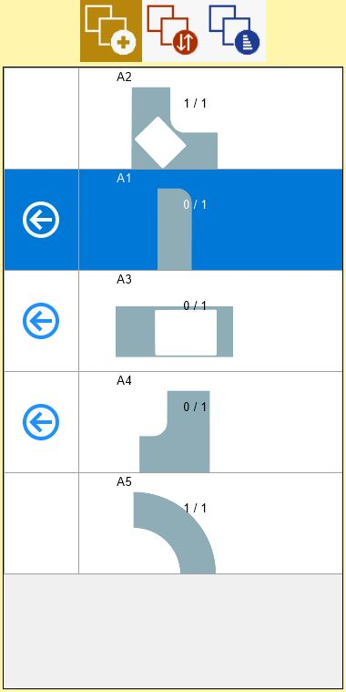
Posicionamiento de piezas
Parametrix permite posicionar piezas dentro del área de trabajo de la máquina para crear el archivo de corte.
Una vez adquirida la losa, creado el perímetro y creadas las piezas del trabajo, es necesario importar las piezas dentro de la losa; mediante el botón de la tabla de piezas se coloca la pieza dentro del área de trabajo. Es posible trabajar con 1 o más piezas simultáneamente.
 | Si las piezas no están completamente dentro de la losa, aparecerá una señal de atención\peligro en la esquina superior izquierda. |
|---|
Barra superior
En la parte superior de la pantalla, en el centro y a la izquierda, se muestran los siguientes botones, precedidos por el logotipo y la hora indicada:

La barra superior de mandos se complementa con algunos botones que se describirán más adelante:
 | Parámetros de usuario |
 | Nuevo mecanizado |
 | Parámetros de herramienta |
 | Panel de parámetros de mecanizado de la losa |
 | Acceso al mando manual |
 | Gestión del láser |
Añadir foto al banco | |
 | Perímetro de la losa |
Gestión de la visualización del banco | |
 | Visualización de las entidades de trabajo |
Sección lateral
Los botones situados en la parte superior derecha permiten al operador cambiar la pantalla de Parametrix.

Cada pantalla se ocupa de un aspecto específico del mecanizado de una losa.
 | Posicionamiento de las piezas
|
Gestión del orden de corte de las piezas | |
 | Optimización y gestión de los cortes
|
En la parte inferior derecha se encuentran los siguientes botones, cuyas funciones se describirán más adelante.
 | Modificar pieza |
 | Activar/desactivar piezas estándar |
 | Creación de pieza |
 | Nesting |
Ordenar o filtrar piezas | |
 | Borrar lista de piezas |
 | Borrar pieza |
 | Modificar propiedades adicionales de la pieza |
Barra inferior
Al abrir la función «Parametrix», la barra inferior sufrirá algunos cambios, como se muestra a continuación:

Esta barra se complementa con estos botones:
 | Selección múltiple |
 | Seleccionar todo |
 | Eliminar pieza |
 | Guardado |
 | Cargar |
Panel de información | |
Deshacer modificación | |
 | Máquina sobre corte |
Rotación de la pieza | |
 | Mover piezas |
 | Magnetizar piezas |
 | Corte inclinado |
Modificar pieza estándar |
Una vez pulsado el botón se pueden visualizar varias ventanas.

Ventanas
Hay 4 ventanas diferentes disponibles, que se describen individualmente a continuación.
Valores de usuario | Ventana destinada a modificar algunos ajustes relacionados con los mecanizados. |
Estadísticas | El operador puede visualizar las estadísticas de los mecanizados realizados. |
Nombres de capas | Ventana destinada a la configuración de la importación de archivos DXF en Parametrix. |
Ventosas | Parámetros relativos a la velocidad de desplazamiento de las ventosas. |
Barra inferior
 | Cerrar Parametrix |
 | Reiniciar Parametrix |
 | Teclado |
 | Conexión de la cámara fotográfica |
Asistencia remota | |
 | Parámetros técnicos |
 | Introducción de contraseña |
 | Acceso a la guía web |
 | No guardar los cambios |
Importación de mantenimiento desde archivo
Accediendo a la página de parámetros técnicos y posteriormente a la sección «File Path 2», dentro de la sección relativa al mantenimiento se mostrará la siguiente pantalla:

Con el siguiente botón será posible importar archivos .mnt para ejecutar el mantenimiento.
 | Importar desde archivo |
En esta ventana, el operador puede modificar algunos parámetros relacionados con el mecanizado.

Sección izquierda
Retroceso de cortes internos | Distancia mínima de aproximación del disco a la pieza para los cortes internos. |
Distancia para imán | Distancia entre dos piezas antes de que se active el imán. |
Incremento en el banco | Profundidad de penetración de la herramienta en el banco. |
Incremento en el banco - inclinado | Profundidad de penetración de la herramienta en el banco. Solo para modo isoparamétrico. |
Offset de desplazamiento de la losa | Cota adicional para la función move. |
Radio máximo de la broca hueca | Para la importación DXF, radio máximo para que un círculo se importe como agujero. |
Solapamiento del goterón | Porcentaje de solapamiento del goterón, del 99% al 0%. |
Velocidad del goterón | Porcentaje de la velocidad del goterón respecto a la velocidad de los cortes normales. |
Penetración de agujeros | Establece la penetración de todos los agujeros; establecer en 0 para un agujero pasante. |
Penetración de cortes internos | Establece la penetración de todos los cortes internos; establecer en 0 para un corte pasante. |
Distancia de agujeros automáticos | Indica la distancia entre un agujero y otro al insertar varios agujeros. |
Número de agujeros | Número de agujeros que se utilizarán para los agujeros en ángulo. |
Operaciones
Operación activa | Permite crear una operación personalizada sobre los cortes. |
 | Operaciones personalizadas |
Sección de cámara
Usar cámara | Se activa el uso de la cámara o el operador selecciona la imagen desde un archivo. |
Sección de mandos de la máquina
 | Activar/desactivar control de cota |
 | Adquisición de la cota del banco |
 | Puesta a cero de los ejes |
Sección de nombre de archivo
El nombre del archivo puede establecerse desde el cuadro de texto de la parte inferior izquierda según uno de los siguientes modos.
Incremental | Incrementa el nombre del archivo ISO, 100, 101, 102… |
Entrada del usuario | El usuario puede introducir el nombre del archivo. |
Fijo | Nombre de archivo ISO fijo; introduzca el nombre deseado en el campo adyacente. |
Fijo _ Incremental | Nombre del archivo ISO en formato incremental fijo, tipo File_101. |
Fecha y hora | Nombre del archivo ISO en formato de fecha y hora, tipo 20191206_080124. |
Nombre de archivo | El archivo ISO toma el nombre del archivo (DXF o CSV) importado. |
Nombre de archivo _ Incremental | El archivo ISO toma el nombre del archivo (DXF o CSV) importado, añadiendo un valor incremental. |
Sección de color del nombre
Negro | Texto de la pieza en negro. |
Amarillo | Texto de la pieza en amarillo. |
Fucsia | Texto de la pieza en fucsia. |
Auto | Determina automáticamente el mejor color para el nombre de la pieza |
Sección de color Book Match
Fondo | Gestiona el color del fondo de la función Book Match |
Nombre | Gestiona el color del nombre en la función Book Match |
Perímetro | Gestiona el color del perímetro en la función Book Match |
Otros botones
Palpado de herramienta al inicio del programa | Si está activado, permite insertar un ciclo de palpado al inicio del programa de corte al pasar a la pantalla de gestión de cortes. |
| Operaciones personalizadas |
Tutorial | Permite acceder a los videotutoriales de Parametrix. |
 | Activar/Desactivar PGM |
Modo descargar todo | Este parámetro tiene dos valores posibles: |
Tutorial
En esta ventana hay tutoriales que muestran cómo utilizar algunas funciones de Parametrix.
Para ver el vídeo deseado, pulse la fila correspondiente.

Mediante esta ventana es posible visualizar las estadísticas de los mecanizados ejecutados por la máquina.
Las estadísticas incluyen también mecanizados de tipo corte individual, cajeado, planeado y ejecución ISO.
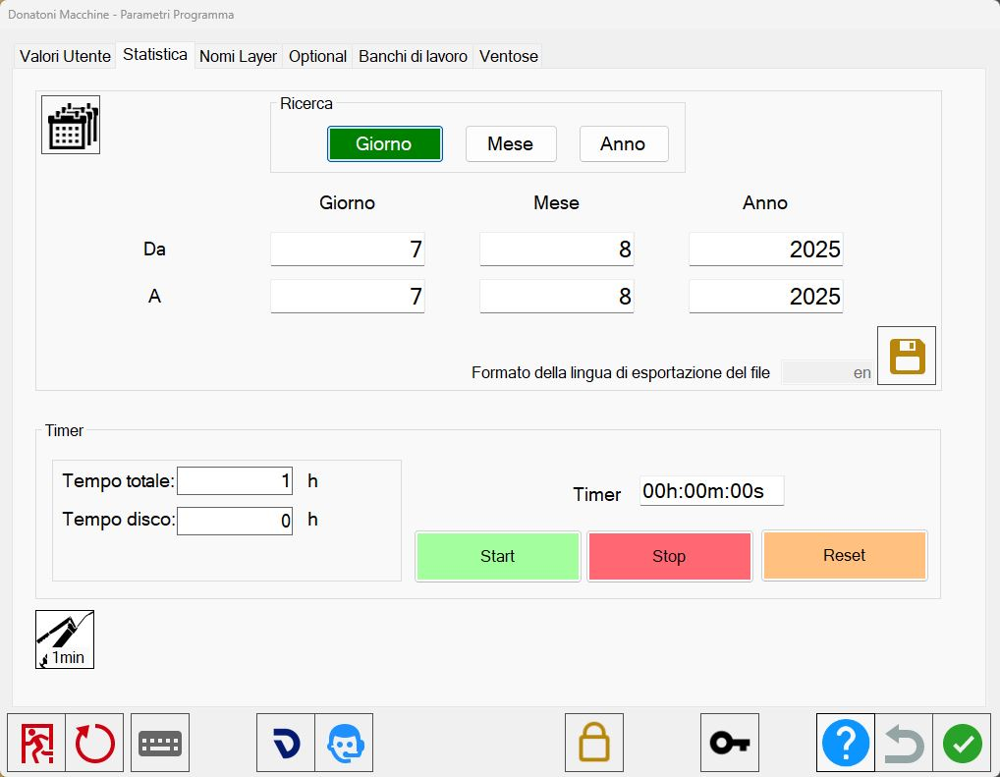

Estadísticas en pantalla
Mediante el botón de la parte superior izquierda es posible acceder a la ventana de estadísticas en pantalla.
 | Estadísticas en pantalla |
A continuación se abre una ventana que muestra cierta información relacionada con los mecanizados realizados en la máquina.
Cada entrada de la lista corresponde a los datos de un único mecanizado.
Al final de la página se presenta un resumen de la información importante de todos los mecanizados mostrados.
Botones
 | Estadísticas diarias |
 | Estadísticas mensuales |
 | Estadísticas totales |
Intervalo de tiempo configurable | |
Columnas que mostrar | |
 | Guardar estadísticas |
  | Visualizar estadísticas de losas |
 | Visualizar estadísticas de piezas |
Estadísticas por máquina (Opcional)
Para la versión de Parametrix en modo oficina es posible conectarse a varias máquinas y visualizar las estadísticas de cada una de ellas.
En la sección izquierda se muestran todas las máquinas conectadas al dispositivo.

Búsqueda
Esta función permite realizar una búsqueda de las estadísticas dentro de un intervalo temporal seleccionado.

El operador puede introducir la fecha de inicio y de fin para delimitar el intervalo temporal de interés.
Es posible establecer la precisión de la búsqueda utilizando los botones.
 | Búsqueda por día |
 | Búsqueda por mes |
 | Búsqueda por año |
Para exportar las estadísticas, utilice el botón:
| Guardar estadísticas |
Temporizador
En esta sección es posible gestionar los temporizadores de la máquina.

Mediante los siguientes botones, el operador puede gestionar manualmente un temporizador para llevar el control del tiempo transcurrido.
 | Iniciar temporizador |
 | Detener temporizador |
 | Poner a cero temporizador |
En la sección izquierda se muestra información relativa al tiempo de uso de la máquina y de las herramientas montadas.
Tiempo total | Indica el tiempo total de trabajo de la máquina. |
Tiempo del disco | Muestra el tiempo de uso del disco. |
Grasa
Para iniciar el engrase automático de la máquina, utilice el siguiente botón:
 | Inicio del ciclo de engrase |
Parametrix permite importar archivos con formato «.dxf» creados mediante programas CAD externos específicos.

Botones
 | Colorear las capas |
 | Dynamic Tags |
La máquina puede ejecutar cortes, fresados y orificios a partir de dibujos creados con software CAD y guardados en formato «.dxf», con el reconocimiento automático de algunos mecanizados útiles para simplificar y agilizar el trabajo del operador de la máquina.
Para que Parametrix pueda interpretar esta información, deben respetarse algunas convenciones durante la realización del dibujo:
Todas las piezas dibujadas deben estar cerradas y convertidas en polilíneas formando un polígono.
Si se desea insertar la marca de la pieza para identificarla, deberá colocarse dentro del polígono.

Configuración de Parametrix para el reconocimiento de las capas importadas
Para acceder a la ventana de configuración de personalización relativa a la importación de archivos DXF, pulse el botón Parámetros de usuario situado en la barra superior de Parametrix.
Desde aquí, vaya a la sección dedicada a la gestión de los nombres de las capas.
Para cada tipo de función enumerado, el usuario puede asignar un nombre (correspondiente al nombre de la capa configurada en el software CAD utilizado) y asignar algunos parámetros relativos a los valores predeterminados para determinados mecanizados.
Función | Nombre de la capa |
Cortes inclinados | Inclinado |
Alzada | Alzada |
Revestimiento | Revestimiento |
Offset | Offset |
Cortes bajo el material | Debajo |
Goterón | Goterón |
Fresado | Fresado |
Rebaje | Rebaje |
Taladrado | Taladrado |
Corte añadido | Añadido |
Orificio de anclaje | Keil |
Bisel | Bisel |
Bisel inferior | Bisel inferior |
Desactivar | Desactivar |
Eliminar | Eliminar |
Botones
Los botones situados a la izquierda de cada mecanizado permiten:
 | Ventana informativa |
 | Descargar ejemplo |
Modo de corte inclinado
Para insertar automáticamente un corte inclinado es necesario respetar algunas convenciones:
Los cortes inclinados solo pueden insertarse en los lados de las piezas; si el corte inclinado no se aplica a todo el tramo, puede dividirse en varias partes.
El corte inclinado puede aplicarse a arcos exteriores (p. ej.: mesa circular o encimeras curvas, únicamente en lo que respecta al corte exterior).
En cuanto a los arcos interiores (p. ej.: encimeras curvas), el corte se realiza por pasadas; se ejecutará inclinando automáticamente el disco, evitando problemas de colisión con el material.
El procedimiento para quienes utilizan sistemas CAD requiere crear una capa con las siguientes propiedades:
Nombre de la capa | Inclinato _ (seguido del número que identifica los grados de inclinación deseados). |
Ejemplo | Inclinato45 o Inclinato-45 |
Cuando se introduce un valor negativo, la inclinación se refiere a un corte divergente; si el valor es positivo, el corte será convergente hacia el interior del polígono.
Modo Alzada
La función de alzado es un mecanizado que permite obtener una pieza rectangular de longitud igual a la línea definida como lado de referencia.
Para insertar automáticamente los cortes al crear un alzado, es necesario crear una capa con el nombre «Alzata» e introducir a continuación la medida de la altura.
Nombre de la capa | Alzata _ (seguido de la medida de la altura del alzado). |
Ejemplo | Alzata100 |
Este automatismo de Parametrix crea una nueva pieza con una anchura igual a la longitud de la línea que identifica el lado del alzado deseado, con los dos lados que se pegarán entre sí cortados con la misma inclinación y preparados para un acabado a inglete.
La inclinación asociada a estos lados puede configurarse mediante el parámetro situado al lado.
Grados | Permite configurar la inclinación con la que se importan los lados inclinados del mecanizado. |
Modo Revestimiento
La función de revestimiento/alzado es un mecanizado que permite obtener una pieza rectangular de longitud igual a la línea definida como lado de referencia.
De forma análoga, para insertar automáticamente los cortes al crear un revestimiento, es necesario crear una capa con el nombre «Rivestimento» e introducir a continuación la medida de la altura.
Nombre de la capa | Rivestimento _ (seguido de la medida de la altura del revestimiento). |
Ejemplo | Rivestimento150 |
Este automatismo de Parametrix crea una nueva pieza con una anchura igual a la longitud de la línea que identifica el lado del revestimiento deseado, sin corte inclinado y preparada para un acabado en ángulo recto con mecanizado del canto.
Modo Offset
La función offset es muy útil cuando se desea dejar más material que las dimensiones de la pieza terminada; mediante el dibujo de líneas sobre los lados deseados, las funciones asociadas a los lados indicados se desplazarán automáticamente en la dirección correcta.
Para insertar automáticamente el sobrematerial deseado, es necesario crear una capa con el nombre «Offset» e insertar todas las líneas correspondientes a los lados en los que se desea aplicar automáticamente el ajuste.
Nombre de la capa | Offset _ (seguido del número que identifica la medida de offset). |
Ejemplo | Offset3 |
Modo Corte inferior
La función de corte inferior solo es válida para máquinas equipadas con el opcional mecánico que permite realizar un corte por debajo de la superficie visible de la losa.
Para insertar automáticamente un corte inferior, es necesario crear una capa con el nombre «Sotto» e insertar una línea que represente el corte.
Nombre de la capa | Debajo |
Ejemplo | Debajo |
La longitud del corte resultante también depende del diámetro del disco y del espesor del material configurados en Parametrix.
Modo Goterón
La función de goterón permite insertar un corte con una anchura mayor que el espesor del disco y una profundidad menor que el espesor del material.
Para insertar automáticamente un goterón, es necesario crear una capa con el nombre «Gocciola» e insertar una línea o un arco que represente el centro de la anchura.
Nombre de la capa | Gocciola _ (seguido del número que identifica la anchura del goterón). |
Ejemplo | Gocciola10 |
De este modo, la profundidad del goterón se establece mediante el parámetro específico.
Cajeado | Profundidad del corte asociado al goterón. Este valor no se tiene en cuenta si el usuario configura un valor en el DXF. |
La profundidad del corte puede gestionarse automáticamente tomando como valor el parámetro específico de Parametrix o dejando que el usuario configure un valor introduciendo el carácter «&» seguido del espesor deseado.
Nombre de la capa | Gocciola _ (anchura del goterón) _ & _ (profundidad del goterón). |
Ejemplo | Gocciola10&5 |
La longitud del corte resultante también depende del diámetro del disco y del espesor del material configurados en Parametrix.
Para goterones curvos se realiza un único corte con el disco por el exterior del propio arco.
Los parámetros eventualmente indicados en el nombre de la capa no se tienen en cuenta.
Modo Fresado
Para insertar un fresado automático es necesario respetar algunas convenciones.
Si se crea una geometría de fresado que afecte a uno o varios lados del polígono exterior, la fresa realizará el mecanizado por fuera del perímetro dibujado; esto también se aplica a un único lado del perímetro. Si el mecanizado prevé el corte de todo el perímetro con la fresa, se eliminan los posibles cortes con disco.
La profundidad del corte puede definirse mediante la creación de una capa específica.
Nombre de la capa | Fresatura _ (seguido del número que identifica el espesor del fresado). |
Ejemplo | Fresatura10 |
Si no se indica ningún valor de profundidad en el nombre de la capa «Fresatura», se toma como referencia el espesor del mecanizado en curso.
Otra función disponible es la inserción de una polilínea (abierta/cerrada, por ejemplo un círculo o un recorrido individual compuesto por una polilínea lineal) para fresar una forma dentro del perímetro mayor.
Modo Rebaje / Filo Top
La función rebaje/Filo Top es un mecanizado que permite rebajar un perímetro, normalmente para empotrar electrodomésticos o fregaderos.
Para insertar automáticamente el rebaje deseado, es necesario crear una capa con el nombre «Ribasso».
Nombre de la capa | Ribasso _ (seguido del número que identifica la anchura del rebaje). |
Ejemplo | Ribasso20 |
De este modo, la profundidad del rebaje se establece mediante el parámetro específico.
Cajeado | Profundidad del rebaje. Este valor no se tiene en cuenta si el usuario configura un valor en el DXF. |
La profundidad del rebaje puede gestionarse automáticamente tomando como valor el parámetro específico de Parametrix o configurando un valor por parte del usuario mediante el carácter «&» seguido del espesor deseado.
Nombre de la capa | Ribasso _ (anchura del rebaje) _ & _ (espesor del rebaje). |
Ejemplo | Ribasso20&3 |
El usuario no puede modificar el radio de empalme entre los lados del perímetro; este viene determinado por el radio de la fresa.
El rebaje puede realizarse sobre un recorrido cerrado que no se superponga a los lados de la pieza; en este caso se realizará un fresado dentro del perímetro dibujado.
Modo Taladrado
La función de taladrado permite al software Parametrix añadir mecanizados de taladrado a las piezas.
Para insertar automáticamente un mecanizado de taladrado, es necesario crear una capa con el nombre «Foratura» y dibujar un círculo donde se desea realizar el orificio.
Nombre de la capa | Foratura _ (seguido del número que identifica la profundidad del orificio). |
Ejemplo | Foratura5 |
Si no se especifica la profundidad, el orificio se aplicará con el espesor del material utilizado actualmente por Parametrix.
En el modo básico, el radio del círculo corresponde al radio de la herramienta configurada actualmente en Parametrix.
Modo Corte añadido
La función de corte añadido permite al software Parametrix añadir un corte.
Para insertar automáticamente un corte añadido, es necesario crear una capa con el nombre «Aggiunto» y dibujar una nueva línea sobre la línea que representa el lado en el que se desea crear el corte añadido.
Nombre de la capa | Aggiunto _ (seguido del número que identifica la distancia a la que se añadirá el corte). |
Ejemplo | Aggiunto50 |
El corte se añadirá dentro (donde hay material) o fuera (donde no hay material) de la pieza, según el signo de la distancia:
Si el signo de la distancia es positivo, el corte se añadirá en el exterior de la pieza
En caso contrario, si el signo de la distancia es negativo, el corte se añadirá en el interior de la pieza
Al aplicar un corte añadido sobre cortes internos, por ejemplo los de un vaciado, el corte se añadirá dentro de la pieza, donde no hay material.
Modo Orificio de anclaje
La función de orificio de anclaje permite al software Parametrix añadir mecanizados de orificio de anclaje a las piezas.
Para insertar automáticamente un mecanizado de orificio de anclaje, es necesario crear una capa con el nombre «Keil» y dibujar un círculo donde se desea realizar el orificio de anclaje.
Nombre de la capa | Keil _ (seguido del número que identifica la profundidad del orificio de anclaje). |
Ejemplo | Keil5 |
En el modo básico, el radio del círculo corresponde al radio de la herramienta configurada actualmente en Parametrix.
Modo Bisel
La función de bisel permite al software Parametrix añadir mecanizados de bisel a las piezas.
Para insertar automáticamente un mecanizado de bisel, es necesario crear una capa con el nombre «Smusso» y dibujar una nueva línea sobre la línea que representa el lado en el que se desea crear un corte añadido.
Nombre de la capa | Smusso _ (distancia a lo largo del eje X) _ & _ (distancia a lo largo del eje Y) _ & _ (ángulo de inclinación). |
Ejemplo | Smusso10&10&45 |
Si los tres valores no son geométricamente compatibles entre sí, el mecanizado no se aplicará.
Modo Bisel inferior
La función de bisel inferior permite al software Parametrix añadir mecanizados de bisel a las piezas.
Para insertar automáticamente un mecanizado de bisel inferior, es necesario crear una capa con el nombre «Becco» y dibujar una nueva línea sobre la línea que representa el lado en el que se desea crear un corte añadido.
Nombre de la capa | Becco _ (distancia a lo largo del eje X) _ & _ (distancia a lo largo del eje Y) _ & _ (ángulo de inclinación). |
Ejemplo | Becco10&10&45 |
Si los tres valores no son geométricamente compatibles entre sí, el mecanizado no se aplicará.
Modo Desactivar
La función desactivar permite al software Parametrix desactivar cortes de las piezas.
Para insertar automáticamente una función de desactivación, es necesario crear una capa con el nombre «Disattiva» y dibujar una nueva línea sobre la que representa el lado que se desea desactivar.
Nombre de la capa | Desactivar |
Ejemplo | Desactivar |
Modo Eliminar
La función eliminar permite al software Parametrix eliminar cortes de las piezas.
Para insertar automáticamente un mecanizado de eliminación, es necesario crear una capa con el nombre «Rimuovi» y dibujar una nueva línea sobre la que representa el lado que se desea eliminar.
Nombre de la capa | Eliminar |
Ejemplo | Eliminar |
Modo Orificio
La función de taladrado permite al software Parametrix reconocer cualquier círculo con un radio inferior al parámetro «Radio máximo de la broca hueca» situado dentro del área de la pieza.
Los orificios pueden insertarse libremente en todas las capas (excepto las identificadas como neutras).
Otra opción relacionada con el uso de la broca hueca permite eliminar una isla de material que haya quedado unida después de realizar los cortes con el disco; para que el software Parametrix tenga en cuenta esta opción, deben dibujarse uno o varios círculos que intersecten los lados de la isla cortada con el disco y, mediante el parámetro «Distancia de orificios automáticos», se posicionará una serie de orificios calculados automáticamente según el material que quede por cortar después del corte con el disco.
Gestión de capas neutras
Si se desea mantener en el archivo DXF algunas partes del dibujo que no deben considerarse cortes ni otras funciones que deba gestionar el software Parametrix, pueden asignarse a determinadas capas reconocidas como neutras.
Cree las capas con los nombres asignados en los campos Capas neutras (1,2,3) de la página «Nombres de capas» de los parámetros de usuario de Parametrix, teniendo en cuenta que el carácter «*» hará que todas las capas importadas con el mismo nombre antes y después del símbolo «*» no se tengan en cuenta durante la importación.
Ejemplos
Esta función permite colorear uno o varios cortes de piezas creadas a partir de DXF.

Botones
 | Cambiar color de capa |
Procedimiento
Para asociar un color a los cortes de una pieza es necesario:
Crear una capa en el software CAD;
Asignarle un color en el panel correspondiente de Parametrix;
Dibujar una línea (o curva) sobre la que representa el corte que se desea colorear dentro de la capa.
Una vez importada la pieza, el corte sobre el que se ha dibujado la línea en la Color Layer tendrá el color configurado en Parametrix (no el configurado en el DXF).
La línea dibujada sobre el corte que se desea colorear debe superponerse completamente a la línea que representa el corte.
Ejemplo
En este ejemplo se desea colorear dos cortes de la pieza. Se ha creado la capa «ColoreE» y se han añadido líneas sobre las que deben colorearse.

Como puede verse en el área de trabajo de Parametrix, los cortes adoptan el color asociado a la capa del archivo DXF importado.

Esta función permite asignar parámetros de configuración a las capas de los archivos DXF.

Parámetros
Los parámetros son:
Name | Sirve para definir y reconocer el nombre de la capa. |
Entity Type | Define el tipo de entidades que se mostrarán. |
LineWeightMethod | Permite elegir el modo con el que se obtiene el espesor de las líneas. |
LineWeight | Permite definir el espesor de las líneas pertenecientes a la capa. |
ColorMethod | Permite elegir el modo con el que se obtiene el color de la capa. |
Color | Permite definir el color de las entidades pertenecientes a la capa. |
Botones
Con los siguientes botones puede añadirse o eliminarse una configuración:
 | Crear configuración |
 | Eliminar configuración |
Ejemplo
En este ejemplo se desea modificar las características de los elementos dibujados en la capa «Venature».

Las entidades se importan respetando los parámetros configurados en la ventana correspondiente.
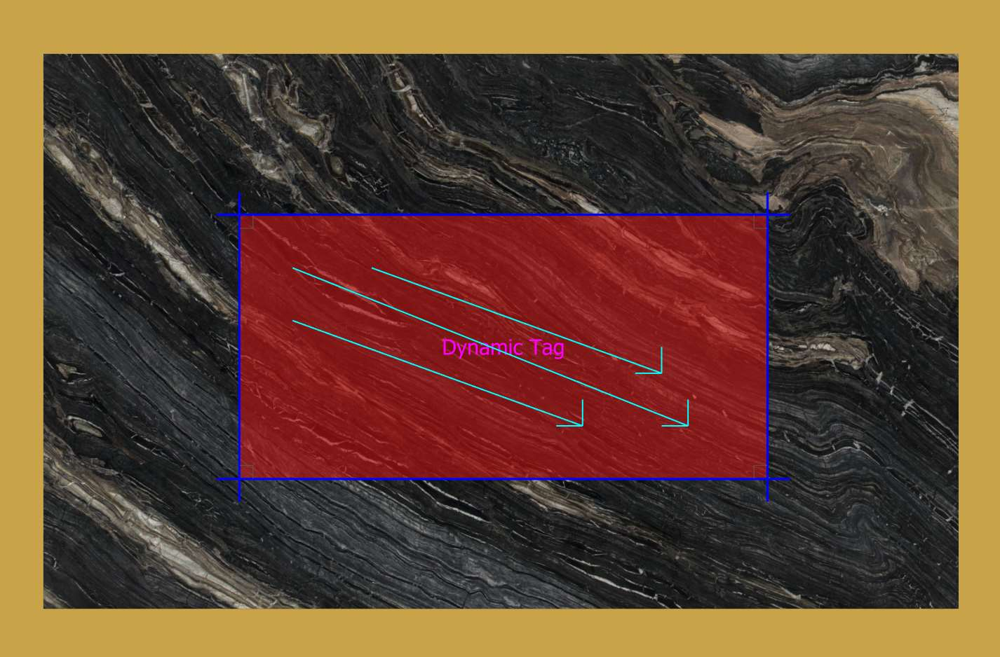
En esta sección se establece la velocidad de desplazamiento de la pieza mediante las ventosas.

Parámetros
Velocidad XY | Determina la velocidad de desplazamiento de la pieza mediante las ventosas. |
Velocidad Z | Determina la velocidad de desplazamiento de la pieza mediante las ventosas en Z. |
Velocidad de rotación | Determina la velocidad de rotación de la pieza mediante las ventosas. |
Velocidad XY en descarga | Determina la velocidad de desplazamiento de la pieza mediante las ventosas durante la fase de descarga de la pieza o corte inferior. |
Velocidad Z en descarga | Determina la velocidad de desplazamiento de la pieza mediante las ventosas en Z durante la fase de descarga de la pieza o corte inferior. |
Este botón permite finalizar el mecanizado actual e iniciar la programación del siguiente.
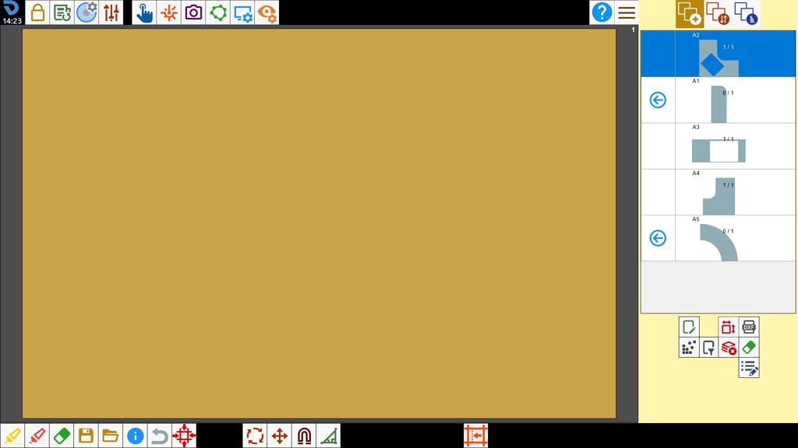
Procedimiento de ejecución
Un mecanizado finaliza con la generación del programa de corte de la máquina o con el guardado del estado de las piezas.
Mediante este botón es posible limpiar el área de trabajo de la losa y las piezas, dejando espacio para el siguiente mecanizado.

Aparecerá un mensaje solicitando confirmación para proceder con la creación de un nuevo mecanizado.

Al confirmar se eliminarán:
foto y perímetro de la losa;
todas las piezas presentes en el área de trabajo (incluidas las piezas comerciales);
Parametrix tiene en cuenta las piezas que se han programado, actualizando su recuento dentro de la lista de piezas.
Ya no será posible añadir piezas al área de trabajo si han alcanzado el número máximo.

La siguiente pantalla permite al operador gestionar las herramientas de la máquina.

Selección del tipo de herramienta
Cada tipo de herramienta tiene una herramienta seleccionada, como se muestra en la siguiente imagen de ejemplo:
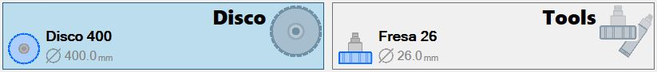
 | Disco |
Tools |
El fondo del tipo «Disco» aparece en azul claro porque es la categoría de herramientas seleccionada actualmente.
Basta con hacer clic en el rectángulo del tipo de herramienta deseado para actualizar la lista inferior con las herramientas disponibles para ese tipo.
Como consecuencia del cambio de tipo de herramienta, se seleccionará automáticamente como se muestra en la imagen de ejemplo anterior.
Lista de herramientas presentes para el tipo de herramienta seleccionado
La lista de herramientas mostrada como ejemplo en la imagen siguiente contiene cuatro discos: «Disco 400», «Disco 625», «Disco 2755» y «Disco 325».
El primer disco de la lista es el que está montado actualmente en la máquina, lo que se indica mediante el fondo verde claro y la marca de verificación verde.
En la sección derecha se muestran los parámetros relativos a la herramienta seleccionada.

Elementos de la lista
 | Tipo de herramienta |
 | Información principal de la herramienta |
 | Forzar herramienta |
Filtro de búsqueda
En la parte inferior de la lista de herramientas hay una barra de búsqueda formada por los siguientes elementos:
A continuación se describen los elementos que componen el filtro de búsqueda:
 | Botón de búsqueda por nombre de herramienta |
-20250307-155302.png) | Botón de búsqueda por diámetro de herramienta |
 | Botón para cancelar el filtro aplicado |
Barra inferior
La barra inferior de la lista de herramientas ofrece funciones para añadir y eliminar herramientas de la lista.

 | Añadir herramienta |
 | Eliminar herramienta |
Duplicar herramienta |
Añadir herramienta
Mediante esta ventana se realiza el procedimiento de creación de una nueva herramienta. Los parámetros solicitados cambian según el tipo de herramienta que se desea crear.
La siguiente imagen muestra la ventana de creación de una nueva herramienta para cada tipo disponible:
Disco | Fresa | Broca hueca |
| 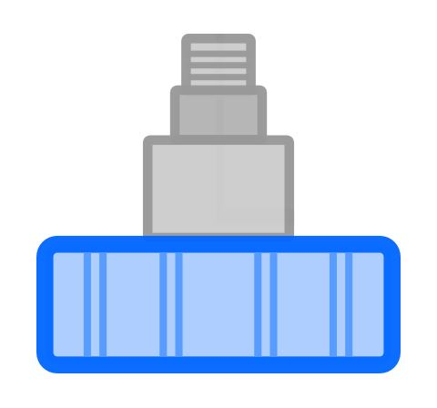 |  |
 |  |  |
Lista de parámetros de la herramienta seleccionada
En esta lista se muestran todos los parámetros relativos a la herramienta seleccionada actualmente.
Cada cambio en la selección de la herramienta actual permitirá al operador visualizar los valores actualizados de la herramienta deseada y, si es necesario, modificar cada valor.
La lista de parámetros y los valores correspondientes también se actualizarán cuando se seleccione un tipo de herramienta distinto (Disco / Tools), mostrando los valores de la herramienta seleccionada para cada categoría.
Parámetros del disco
A continuación se muestran los parámetros asociados a un disco.

 | Nombre |
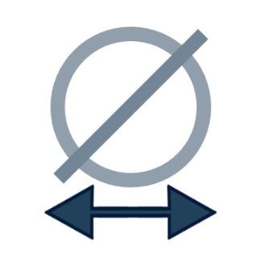 | Diámetro |
 | Espesor del disco |
 | CRF - Centro de rotación de la brida |
 | Cota de liberación |
 | RPM |
 | Agua interna |
 | Agua externa |
Velocidad de rotación del disco
A la derecha del parámetro RPM se encuentra el siguiente botón:
 | Información RPM |
En esta ventana se muestra una tabla que contiene las conversiones de velocidad de rotación a RPM en función del diámetro del disco seleccionado.
Los valores recomendados para el disco seleccionado se resaltan en verde.

Parámetros de fresa y broca hueca
A continuación se muestran los parámetros relativos a herramientas como fresas y brocas huecas.
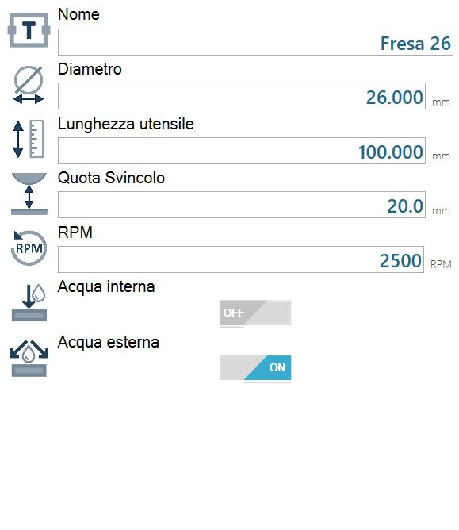
 | Longitud de herramienta |
Palpado de herramienta
Si la máquina dispone del dispositivo opcional para el palpado de la herramienta, es posible activar el procedimiento desde este panel.
Permite iniciar un ciclo mediante el cual es posible calcular el diámetro, en el caso del disco, o la longitud, para fresas y brocas huecas.
Botones
En la parte derecha del panel aparece uno de los siguientes botones.
 | Iniciar palpado del disco |
 | Iniciar palpado de la herramienta secundaria |
El botón para el palpado del disco solo está disponible dentro de la sección «Disco» del panel.
El botón para el palpado de la herramienta secundaria solo está disponible dentro de la sección «Tools» del panel.
Procedimiento
Para medir el diámetro del disco o la longitud de la broca hueca/fresa montada actualmente en la máquina, pulse el botón correspondiente en la sección derecha del panel.
Al finalizar el ciclo, el programa actualiza automáticamente el dato correspondiente a la medida de la herramienta palpada.

Otros botones
En la parte inferior izquierda de la pantalla aparece el siguiente botón:
 | Cambiar al panel «Parámetros de mecanizado de la losa» |
Si la máquina dispone de la opción Tool Plus, habrá una nueva sección específica dentro del panel de herramientas.
/0.00.png)
Botones
/0.01.png) | Encendido/Apagado del agua |
/0.02.png) | Activar/Desactivar rotación |
/0.03.png) | Elevación |
/0.04.png) | Descenso |
Desde este panel es posible gestionar las herramientas de una máquina con cambio automático.

Lista de herramientas
En la sección izquierda se puede ver la lista de todas las herramientas disponibles para la máquina.

En la parte superior se indica la herramienta montada actualmente en la máquina.
Debajo, una lista muestra las herramientas que puede utilizar la máquina. Junto a cada herramienta hay dos botones:
 | Forzar herramienta montada |
 | Iniciar cambio de herramienta |
Parámetros de herramienta
En la sección izquierda se muestran los parámetros asociados a la herramienta seleccionada.

 | Corrector |
 | Láser |
Corrector
Este campo indica la posición en la que se guardan las herramientas no utilizadas dentro del almacén de la máquina.
 | Cambiar corrector |
 | Eliminar corrector |
Procedimiento de cambio automático de herramienta
Al pulsar el botón asociado a una herramienta, el operador podrá iniciar el procedimiento de cambio automático de herramienta.
Al iniciarlo, se pregunta para qué mecanizados se desea utilizar la nueva herramienta que se va a montar.

Este tipo de máquina permite montar dos discos en el cabezal en lugar de uno. El panel de herramientas permite gestionar ambos.
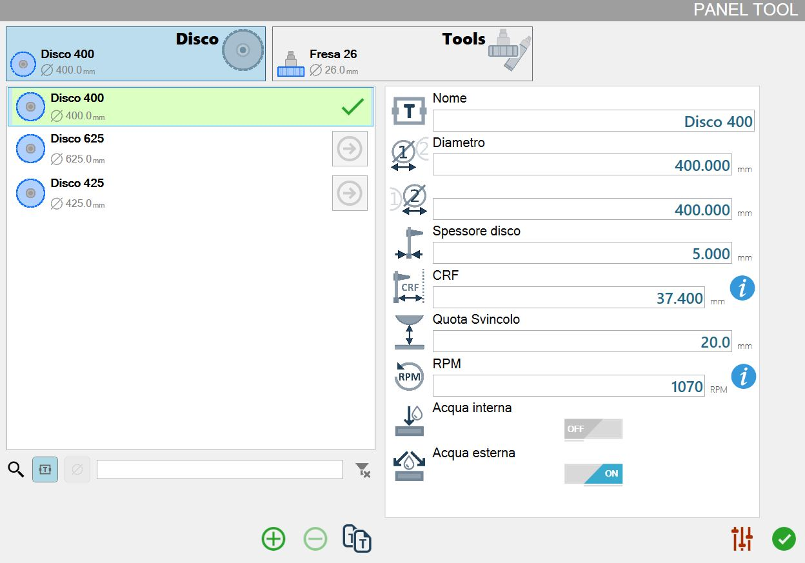
Parámetros
Cada herramienta de la sección «Disco» contiene información sobre ambos discos montados en la máquina.

En particular:
Diámetro del primer disco | |
 | Diámetro del segundo disco |
Al abrir el panel «Parámetros de losa» se mostrará la pantalla de parámetros de mecanizado que permite al operador gestionar los datos relativos al mecanizado.
Los datos de mecanizado pueden configurarse y modificarse mediante el panel de parámetros.
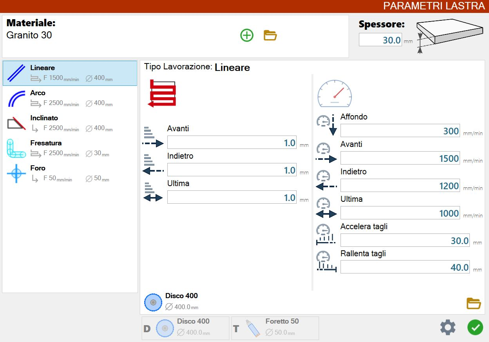
Gestión del material seleccionado
En la parte superior del panel «parámetros de mecanizado de la losa» hay algunos elementos que permiten gestionar los materiales:

A continuación se describen los elementos que componen esta sección de los parámetros de mecanizado de la losa
 | Material seleccionado |
 | Botón crear nuevo material |
 | Botón acceder al panel Gestión de materiales |
 | Espesor del material seleccionado |
Añadir un nuevo material
Esta pequeña ventana gráfica permite componer el nombre de un nuevo material:

Si se confirma la creación del nuevo material, este se seleccionará automáticamente.
Los parámetros y el espesor del material se actualizarán en consecuencia.
Abrir el panel de gestión de materiales
Desde este panel es posible gestionar los materiales:

 | Barra de búsqueda |
 | Eliminar filtro |
 | Eliminar material |
 | Duplicar material |
 | Modificar material |
Selección del tipo de mecanizado
La selección del tipo de mecanizado determina el contenido de la ventana de gestión de parámetros.

Para cada tipo de mecanizado, en la vista previa correspondiente se muestran el modo de incremento elegido, la velocidad de corte hacia delante (de penetración / entrada en el caso del tipo de mecanizado Agujero) y el diámetro de la herramienta.
Tipo de pasadas
 | Pasada completa |
 | Pasada por pasos / en espiral |
Tipos de mecanizado
Lineal

Pasada completa

Pasada por pasos

Descripción de parámetros de incrementos
 | Hacia delante |
 | Hacia atrás |
 | Última |
Descripción de parámetros de velocidad
 | Penetración |
 | Hacia delante |
 | Hacia atrás |
| Última |
 | Acelerar cortes |
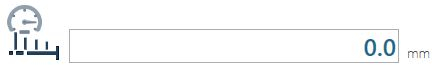 | Ralentizar cortes |
En cuanto a los incrementos y las velocidades, los parámetros «Hacia atrás» y «Última» pueden estar presentes o no, o puede estar presente solo uno de los dos.
Normalmente estas opciones se configuran durante la instalación del programa y se deciden en función del mecanizado del cliente.
Es posible cambiar estas opciones si se prefiere trabajar de otra forma, poniéndose en contacto con la Asistencia Donatoni.
Arco

Pasada por pasos

Inclinado

Pasada completa

Pasada por pasos

Descripción de parámetros de incrementos
  | Corte con palpado (activado / desactivado) |
Fresado

Pasada completa

Pasada por pasos y pasada en espiral


Agujero

Pasada completa

Pasada por pasos

Ejecución del mecanizado con pasada por pasos:
La máquina se aproximará al material a la velocidad máxima hasta alcanzar la distancia del material especificada en el parámetro APROXIMACIÓN.
El número de pasos se calculará como:
Espesor del material dividido por el espesor de los pasos
eventualmente redondeado al alza
La máquina comenzará a moverse a la velocidad de mecanizado.
Si el valor del parámetro PASO ENTRADA está configurado (distinto y mayor que cero), la máquina trabajará a la velocidad establecida en el segundo campo ENTRADA hasta alcanzar la distancia definida en el campo PASO ENTRADA
La máquina ejecutará los pasos calculados en el segundo punto a la velocidad Paso
Después de cada paso (incluido el primero), la máquina volverá a la cota del material a velocidad máxima y, a continuación, volverá a máxima velocidad hasta poca distancia antes del inicio del paso siguiente.
Si el parámetro PASO SALIDA está configurado (distinto y mayor que cero), la máquina trabajará a la velocidad definida en el segundo campo PASO hasta alcanzar la distancia definida en el primer campo SALIDA
El resto del paso se ejecutará a velocidad SALIDA
Descripción de parámetros de Agujero con pasada por pasos
 | Cota de aproximación |
 | Paso |
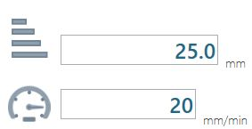 | Entrada |
 | Salida |
  | Pausa después |
Cambio de parámetros de corte
Es posible modificar los parámetros ilustrados anteriormente para el disco, la fresa y la broca hueca, si el usuario está autorizado a utilizarlos.

Para decidir de qué herramienta se modifican los parámetros, es necesario seleccionar una mediante el botón visible en la parte derecha del panel «Seleccionar herramienta».
 | Cambiar parámetros de corte |
Al pulsar este botón se mostrará una ventana que contendrá una configuración de parámetros guardada para cada material disponible. Los resultados también dependen del tipo de mecanizado seleccionado.
Se abrirá una ventana «Cambio de parámetros de corte» similar a la siguiente imagen de ejemplo:

En la parte inferior izquierda del panel «Cambio de parámetros de corte» hay una barra de texto inicialmente vacía que permite aplicar un filtro de búsqueda.
El botón situado a la derecha de la barra solo se activa cuando hay texto en la barra y, por tanto, hay aplicado un filtro de búsqueda. Al pulsarlo se elimina el filtro y se vacía la barra de texto.
Barra inferior
La barra inferior del panel Parámetros de losa presenta un aspecto similar a este:

Esta barra está formada por los siguientes elementos:
 | Vista previa del disco |
 | Vista previa de fresa/agujero |
 | Panel de herramientas |
Este panel permite acceder a algunos mandos manuales de la máquina.

Botones
 | 0_ - 90_ |
 | Aparcamiento |
 | Palpar losa |
 | Ciclo CRF |
 | Ciclo de lavado |
 | Encendido / Apagado del agua interna |
 | Encendido / Apagado del agua |
Ciclo de palpado de la losa
El ciclo de palpado permite calcular el espesor de la losa y adquirir la cota del banco utilizando el palpador específico montado en la máquina.
Para iniciarlo, active el botón dentro del panel de mandos manuales y, a continuación, pulse un punto dentro de la losa en el área de trabajo.
En la posición elegida se mostrará un símbolo que indica la posición en la que debe realizarse el palpado.

Una vez que la máquina haya terminado de ejecutar el ciclo, se abrirá un panel que muestra algunas medidas obtenidas mediante el palpado de la losa.

Esta información incluye:
Espesor | Espesor de la losa medido. |
Cota del banco | Cota del banco de trabajo. |
Cota de la losa | Cota medida en el borde superior del material colocado sobre el banco de trabajo. |
Es posible guardar los datos recopilados por el ciclo de palpado mediante los siguientes botones:
 | Establecer espesor de la losa |
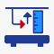 | Establecer cota del banco |
 | Iniciar palpado |
Ciclo de medición del CRF (Centro de rotación de la brida)
El ciclo CRF permite medir la distancia del filo interior del diente del disco montado actualmente en la máquina respecto al eje de rotación C.
Para iniciarlo, active el botón dentro del panel de mandos manuales y, a continuación, pulse un punto dentro de la losa en el área de trabajo.
En la posición elegida se mostrará un símbolo que indica la posición en la que deben ejecutarse los cortes con disco que permiten medir el CRF.
Durante la ejecución de este ciclo se realizan cortes en el material.
Por tanto, se recomienda al operador prestar atención a la posición de la losa en la que se inicia para evitar dañarla.

La máquina realizará dos cortes paralelos con el eje A a 0_: el primero con el eje C igual a 0_, y el segundo con el eje C igual a 180_.
Al finalizar el procedimiento, se solicita al operador que mida, utilizando una cinta métrica o un calibre, la distancia interior entre los dos cortes de la losa.
Esta medida debe introducirse en el campo «A» del panel que se abre al final del ciclo.

Las medidas realizadas deben introducirse en el campo correspondiente:
A | Distancia interior entre los dos cortes realizados durante el ciclo en la losa. |
CRF (A/2) | Medida del Centro de rotación de la brida del disco. Se calcula como la mitad de la distancia interior entre los dos cortes presentes en la losa. |
Es posible guardar los datos recopilados por el ciclo de medición CRF mediante el siguiente botón:
Establecer medida CRF |
Este panel permite añadir o eliminar referencias láser en el área de trabajo.

Botones
Referencia de láser de línea | |
Dibujar láser de cruz | |
 | Borrar todos los dibujos |
 | Borrar un solo dibujo |
Láser de línea
El láser de línea es una herramienta alineada con el disco montado en la máquina. Se utiliza para recopilar información relacionada con la posición y la orientación del disco sobre el banco.

Para adquirir la referencia, lleve la máquina al punto deseado y pulse el botón para detectar la dirección del láser de línea y añadir la referencia al área de trabajo.
Utilizando varias referencias es posible reconocer el perímetro y la posición de la losa o de una pieza sobre el banco de trabajo.

Láser de cruz
El láser de cruz se utiliza para recopilar información relacionada con la posición del puntero láser sobre el banco.

Para adquirir la referencia, lleve la máquina al punto deseado y pulse el botón para detectar la posición del láser de cruz y añadir la referencia al área de trabajo.
Utilizando varias referencias es posible reconocer el perímetro y la posición de la losa o de una pieza sobre el banco de trabajo.
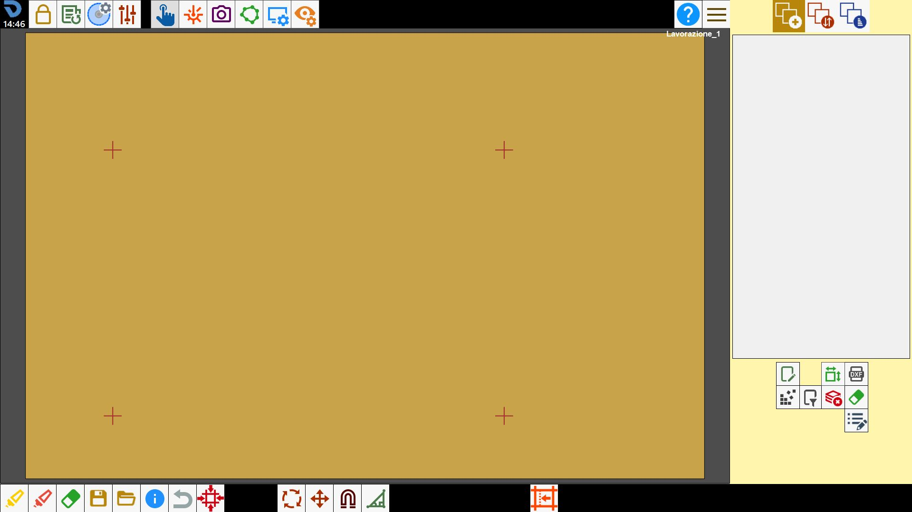
Esta función permite añadir una foto al área de trabajo.
Si Parametrix está conectado a un dispositivo fotográfico, se toma una foto de la losa sobre el banco de trabajo.
De lo contrario, se solicita seleccionar una fotografía entre los archivos del ordenador.
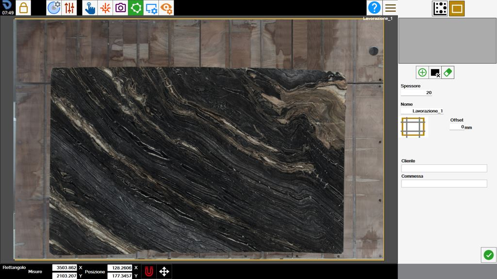
Tomar una foto
Generalmente, esta función permite tomar una foto del banco de trabajo de la máquina utilizando el dispositivo fotográfico incorporado.
Al pulsar el botón se abre una ventana en la que se solicita introducir el espesor de la losa que se va a capturar.

Se toma la foto y, a continuación, se abre el panel que permite al operador definir el perímetro de la losa.
Seleccionar una foto de los archivos del ordenador
Este modo permite a los ordenadores no conectados a un dispositivo fotográfico, normalmente situados en la oficina, insertar fotos desde archivos dentro del programa.
Al pulsar el botón se abre la ventana del explorador de archivos para poder seleccionar un archivo que cargar.

A continuación, el usuario es dirigido al panel de selección del perímetro de la losa.
Selección del perímetro
Después de seleccionar o tomar la foto aparecerá esta pantalla, donde el operador debe indicar un perímetro dentro del cual se podrán posicionar las piezas.
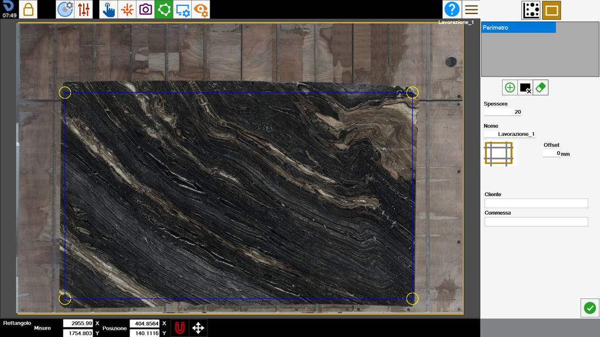
Una vez confirmado el perímetro, la foto de la losa se añadirá al área de trabajo de Parametrix.

Para poder funcionar, el programa debe conocer el borde de la losa sobre la que trabajar. Esta función permite trazar el perímetro.

Modos de creación del perímetro
El programa permite al operador dibujar el perímetro utilizando uno de los siguientes modos:
 | Modo rectángulo |
 | Modo por puntos |
En cualquier momento durante la creación del perímetro es posible cambiar de un modo a otro.
Al pasar del modo «por puntos» al modo «rectángulo», el perímetro se convertirá en un rectángulo y se perderán todos los vértices del polígono.
Se solicitará confirmación para poder proceder con esta operación.
Rectángulo
Este modo permite crear perímetros de forma rectangular.
Para cambiar el tamaño y la posición del rectángulo es posible arrastrar los círculos amarillos en el área de trabajo o modificar los valores indicados en la barra inferior.

Medidas | Dimensiones del perímetro en el eje X y en el eje Y. |
Posición | Coordenadas del vértice inferior izquierdo del rectángulo respecto al vértice inferior izquierdo del banco. |
Por puntos
Este modo permite crear polígonos de forma poligonal arbitraria.
Para ello, el operador puede colocar los puntos que forman el perímetro en las posiciones deseadas, como se muestra en la figura inferior.

En este modo es posible interactuar con el perímetro mediante los siguientes botones:
 | Cerrar perímetro |
 | Eliminar último punto |
Una vez cerrado, el perímetro se volverá azul y sus vértices se indicarán mediante círculos amarillos.
Tanto durante la fase de creación como con un perímetro cerrado, siempre será posible desplazar los vértices en el área de trabajo para mejorar la precisión.
Barra inferior
El operador puede interactuar con un perímetro presente en el área de trabajo mediante los botones situados en la sección inferior de la pantalla.
 | Imán sobre láser de cruz |
 | Desplazamiento del perímetro |
Crear un nuevo perímetro
El programa permite crear más de un perímetro sobre el que colocar las piezas para el mecanizado.
Además, es posible definir zonas de la losa en las que no se puede insertar ninguna pieza.
 | Perímetro |
 | Área que evitar |
 | Borrar perímetro |
Los perímetros creados son visibles en la lista situada en la parte superior derecha. Para modificar un perímetro, basta con seleccionarlo en el área de trabajo o seleccionar la entrada correspondiente dentro de la lista.
El perímetro seleccionado actualmente presenta los contornos azules y los vértices amarillos, mientras que los demás también pueden distinguirse por el color: verde para los perímetros de las losas y naranja para las áreas que deben evitarse.

Desde esta pantalla es posible añadir cortes de alivio de tensiones a la losa.
 | Recorte de la losa |
Para completar la creación del perímetro, se solicita al operador que introduzca cierta información sobre el mecanizado que debe realizarse.
Espesor | El operador debe indicar el espesor de la losa presente sobre el banco de trabajo. |
Nombre | Nombre que se asignará al mecanizado de la losa. |
Cliente | Se indica el nombre del cliente para el que se realiza el pedido. Es un campo opcional. |
Pedido | Se indica un identificador para el pedido. Es un campo opcional. |
El espesor de la losa y el nombre del mecanizado son campos obligatorios que deben completarse antes de confirmar el perímetro.
Por el contrario, no es necesario completar la información relativa a las propiedades adicionales inferiores.
Áreas que evitar
Las áreas que deben evitarse son zonas de la losa que el operador desea excluir del posicionamiento de las piezas sobre la losa.
Las razones pueden ser la presencia de roturas en el material, vetas poco estéticas o la necesidad de conservar determinadas partes de la losa.
Se representan como zonas de color azul dentro del área de trabajo.

Cuando se utiliza la función Nesting, las piezas se colocan de modo que no ocupen ninguna de estas áreas.
El recorte de la losa es una función que permite añadir cortes de alivio de tensiones al mecanizado. Estos cortes sirven para recortar la losa a lo largo de los bordes.
La función puede activarse en el panel de creación del perímetro.
En la siguiente pantalla de ejemplo aparece un esquema que representa los cuatro cortes, uno por lado, que pueden insertarse.

Barra lateral
 | Recorte de la losa |
Solo pueden recortarse losas con perímetro rectangular. No funciona en el modo «por puntos».
También es posible recortar varios perímetros de forma distinta.
Ejecución del mecanizado
En el área de trabajo, el programa comprueba que el operador no coloque piezas fuera del recorte de la losa.
También es posible magnetizar las piezas a estos cortes, como se muestra en la figura.

Durante la ejecución del programa de corte, la máquina realizará estos recortes antes que cualquier otra operación. Inmediatamente después se efectuará una pausa de recorte para dar al operador tiempo suficiente para retirar el material descartado de la losa.
De este modo, las posteriores operaciones de manipulación de la losa mediante ventosas podrán realizarse sin la interferencia de estos recortes.
También es posible ver estas operaciones dentro de la lista de la pantalla de gestión y optimización de cortes.

Mediante esta función, Parametrix puede obtener automáticamente el perímetro de una losa fotografiada.
/0.03.png)
Botones
/0.05.png) | Perímetro automático |
Cómo utilizar el perímetro automático
Para utilizar esta función es necesario tomar una foto de una losa sobre el banco de trabajo o cargar una imagen desde el ordenador.
A continuación, el operador se encontrará dentro del panel de gestión del perímetro.
/0.00.png)
En la sección derecha, pulse el botón para calcular el perímetro automático.
Al finalizar la operación, es posible modificar manualmente los vértices del perímetro obtenido si no fueran suficientemente precisos.
/0.04.png)
Se ofrece al operador la posibilidad de integrar el sistema fotográfico con distintos formatos, por ejemplo Mapascan.

Ejecución
Además de la imagen, a menudo se proporcionan archivos adicionales que contienen información útil relativa a la losa, como el espesor, el perímetro y otros datos geométricos o físicos relevantes.

Al abrir la foto se analizan los datos para configurar correctamente el perímetro, las áreas que deben evitarse y el espesor:

Parametrix puede leer este archivo e importar la foto de la losa, el perímetro y el espesor de la losa.
Integración múltiple
Cuando hay configuradas varias integraciones, es posible seleccionar dinámicamente cuál utilizar en el momento de la ejecución.

Esta función abre un pequeño panel con herramientas para redimensionar el área de trabajo.
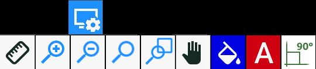
Botones
 | Regla |
 | Zoom _ |
 | Zoom - |
 | Restablecer Zoom |
 | Zoom de ventana |
 | Mover vista |
 | Mostrar / Ocultar color de fondo |
 | Mostrar / Ocultar nombre de piezas |
 | Mostrar / Ocultar ángulos rectos |
Regla
Para utilizar esta función, el operador deberá indicar dos puntos en el área de trabajo. Estos se representarán como dos cruces amarillas.

Debajo del botón de la regla aparecerá un pequeño panel que mostrará la distancia entre los dos puntos.

Horizontal | Distancia horizontal entre el primer y el segundo punto. |
Vertical | Distancia vertical entre el primer y el segundo punto. |
Total | Distancia total entre el primer y el segundo punto. |
X | Posición horizontal del ratón en tiempo real. |
Y | Posición vertical del ratón en tiempo real. |
Esta función abre un pequeño panel con herramientas de visualización.

Botones
 | Mostrar / Ocultar cortes |
 | Mostrar / Ocultar agujeros |
 | Mostrar / Ocultar fresados |
 | Mostrar / Ocultar rebajes |
Mostrar / Ocultar flechas | |
 | Mostrar / Ocultar Dynamic Tags |
 | Resaltar perímetro |
Parametrix está diseñado para el mecanizado de figuras geométricas planas y cerradas que representan las piezas.

Modos de creación de piezas
Como puede observarse en la barra de navegación superior,

la creación de piezas se realiza utilizando uno de los siguientes modos:
 | Importación de archivo DXF |
 | Creación de rectángulos |
 | Creación de figuras paramétricas |
 | Importación de archivo CSV |
 | Historial |
Favoritos | |
 | Creación de piezas comerciales |
En el apartado correspondiente de este capítulo se proporcionará una descripción más detallada del funcionamiento de cada modo.
La función seleccionada se resalta en verde claro. Al abrir el panel «Crear piezas», el operador encontrará seleccionado el modo «Creación de rectángulos».
Importar las piezas en Parametrix
Para finalizar correctamente la creación de una o varias piezas, es necesario utilizar el siguiente botón, disponible en cada sección del panel:
 | Importar piezas |
El funcionamiento de la lista de piezas, situada en la parte derecha del panel, se explica en el capítulo correspondiente.
En la siguiente imagen puede observarse cómo, después de pulsar el botón «Importar piezas», la lista de piezas se ha llenado con los elementos que componían el archivo DXF que se decidió importar.

Lista de piezas importadas
La lista de piezas mostrada en la parte derecha del panel «Crear piezas» está inicialmente vacía. Se va llenando a medida que se crean piezas mediante las funciones descritas anteriormente en este capítulo.
A continuación se muestra un ejemplo de lista de piezas vacía (izquierda) y un ejemplo de lista con contenido (derecha):
 |  |
Propiedades avanzadas de las piezas
En las imágenes de ejemplo anteriores puede observarse un único botón situado en la esquina superior derecha de la lista de piezas que deben mecanizarse:
 | Mostrar información avanzada de la pieza |
|---|

En la parte inferior de la ventana Pieza hay dos botones que se describen a continuación:
 | Copiar |
 | Pegar |
Visualizar los detalles de la pieza
Siguiendo el ejemplo de la lista con contenido mostrada a la derecha al inicio del capítulo, se destaca ahora el comportamiento del siguiente botón:
 | Mostrar detalles de la pieza |
Después de pulsar el botón, la pieza de la lista aparece de la siguiente forma:

Añadir la pieza seleccionada a favoritos
Es posible añadir cualquier pieza a la sección correspondiente de piezas favoritas mediante el siguiente botón:
Añadir favorito |
Al pulsar este botón aparecerá la siguiente ventana emergente:
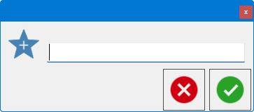
Al completar el campo de texto y confirmar, el operador podrá insertar la pieza seleccionada en la lista de piezas favoritas descrita anteriormente.

Buscar DXF de origen
Es posible buscar la carpeta del DXF de origen mediante el siguiente botón:
Buscar pieza |
Al pulsar este botón, si Parametrix identifica correctamente el archivo DXF de origen, se abre una ventana del Explorador de archivos similar a la siguiente:

En esta sección es posible crear piezas mediante la importación de archivos DXF.

Lista de archivos
En la parte izquierda de la ventana hay una lista que muestra todas las carpetas y archivos DXF contenidos en la ruta seleccionada actualmente.

El elemento situado en la parte superior de la lista,

permite volver a la carpeta superior a la carpeta actual.
Inicialmente se muestra la lista de archivos DXF presentes en la carpeta de trabajo del PC. Es posible cambiar la carpeta mediante los botones correspondientes situados a la derecha de la lista de archivos.
 | Memoria USB |
 | Carpeta de trabajo |
 | Explorar carpetas |
 | Eliminar archivo |
Ordenar y filtrar los archivos mostrados
Los elementos situados debajo de la lista gestionan la aplicación de filtros y la ordenación de los archivos mostrados.

En la parte superior de la imagen hay una barra de búsqueda mediante la cual es posible filtrar los archivos por nombre, mostrando únicamente los que contienen el texto introducido.
En esta sección de la pantalla también se encuentran los siguientes botones:
 | Borrar filtro |
 | Ordenar por fecha |
 | Ordenar por nombre |
La búsqueda por nombre se aplica exclusivamente a los archivos contenidos en la carpeta y no a las posibles subcarpetas.
Por el contrario, la ordenación por nombre y por fecha se aplica a todos los elementos de la lista, aunque siempre se muestran las carpetas antes que los archivos.
Vista previa
Al seleccionar un archivo, en el cuadro central de la pantalla se muestra una vista previa del dibujo para facilitar la identificación inmediata de su contenido.

Es posible interactuar con la vista previa tanto arrastrando su contenido como utilizando los botones situados a su derecha.
 | Aumentar zoom |
 | Reducir zoom |
Restablecer visualización |
Botones adicionales
Los siguientes botones también permiten realizar acciones adicionales.
 | Panel de detalles |
Panel de detalles
Si se ha seleccionado un archivo, es posible acceder al «Panel de detalles» para visualizar las propiedades del DXF. Esto es posible mediante el siguiente botón situado a la derecha de la vista previa:
Una vez abierto, se mostrará el siguiente panel además de la lista de piezas que componen el DXF seleccionado:

Gestión de visibilidad de layouts
En la parte superior de este panel se muestran los layouts en forma de casillas que pueden activarse o desactivarse libremente:

El primer elemento de esta lista de layouts permite activar o desactivar la visualización de todos los layouts.
Panel lateral
Botones relativos a visibilidad y padding
Además de los botones ya mostrados anteriormente para modificar el nivel de zoom y restablecerlo, hay dos botones nuevos:

 | Resaltar pieza seleccionada |
 | Mover vista |
Lista de polilíneas
En el lado central derecho del panel se muestran las piezas que componen el DXF seleccionado, en forma de polilíneas.
Al seleccionar uno de los valores presentes en la lista, la pieza correspondiente visible en la vista previa se resaltará en amarillo.

Al pulsar el botón situado junto a cada pieza, se mostrará la lista de polilíneas que constituyen la pieza.
También será posible resaltar una sola polilínea del DXF simplemente seleccionando la fila correspondiente de la lista:

Botones inferiores
Estos botones están situados en la parte inferior de la barra lateral.

 | Buscar polilínea abierta anterior |
 | Buscar polilínea abierta anterior |
En el siguiente ejemplo se ha abierto el Panel de detalles para un DXF que contiene algunas piezas formadas por polilíneas abiertas, mostradas en rojo en la lista:

Es posible construir piezas rectangulares introduciendo las medidas de anchura y altura y añadirlas a la lista de piezas que deben mecanizarse.
El programa también permite asociar a cada pieza una marca (o etiqueta) identificativa y establecer el número de repeticiones de rectángulos con las mismas dimensiones.
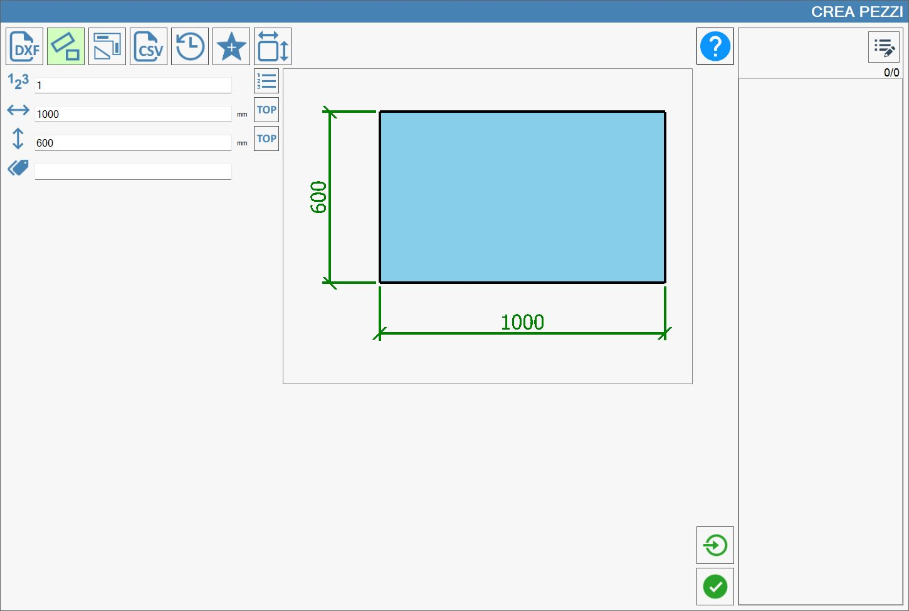
Descripción de los parámetros
Para crear piezas rectangulares se requieren los siguientes datos:
 | Número de piezas |
 | Anchura |
 | Altura |
 | Marca |
Botones adicionales
Los siguientes botones laterales también permiten realizar acciones adicionales.
 | Importación individual |
 | Dynamic Tag Top |
Para activar la función correspondiente a cada botón, es necesario pulsarlo. En ese caso, se resaltará en verde claro.
En esta sección es posible construir piezas utilizando figuras paramétricas de forma predefinida. Para dibujar una figura basta con introducir los valores que la caracterizan.

Categorías de figuras paramétricas
Tomando como referencia la imagen superior, en la columna izquierda se representan las principales categorías de formas paramétricas.
 | Figuras rectangulares |
 | Cuadriláteros |
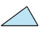 | Figuras triangulares |
 | Encimeras de cocina |
 | Figuras de tipo sectorial |
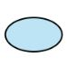 | Figuras elípticas |
Figuras poligonales | |
 | Baños |
 | Figuras de piedra o funerarias |
 | Mesas |
 | Figuras especiales |
Vista previa y valores parametrizados
Según la selección de la categoría, en la columna inmediatamente a la derecha se abre la elección de la forma correcta que se debe utilizar.
Una imagen situada en el centro de la pantalla proporcionará indicaciones detalladas sobre las dimensiones que deben introducirse. A la derecha de la imagen de referencia se muestra una vista previa de la figura que se está dibujando, que se modifica en tiempo real después de cada cambio realizado en los valores que caracterizan la figura dibujada.
Como en los apartados anteriores, una vez completada la introducción de las cotas es posible introducir la marca (o etiqueta) que se muestra en la pieza cuando está insertada en el área de trabajo, el número de copias de la pieza y decidir si se realiza la importación individual.
En la siguiente imagen puede verse un ejemplo de creación de una encimera de cocina.

Creación de vaciados internos
Para crear vaciados internos es necesario pulsar uno de los rectángulos internos de la imagen central; se abrirá la ventana representada en la imagen inferior, donde podrá modificarse el vaciado según se desee para después insertarlo en la imagen original.

Opciones adicionales
Parámetros adicionales
Para crear piezas rectangulares se requieren los siguientes datos:
 | Número de piezas |
 | Marca |
Botones adicionales
 | Importación individual |
  | Mirror |
Restablecer |
Barra para piezas fuera de escuadra
Algunas piezas pueden construirse utilizando ángulos que no sean rectos (es decir, distintos de 90 grados).
Para utilizar esta posibilidad se emplea una barra situada encima de la imagen central, que contiene todas las versiones de modificación de dicha imagen. Los parámetros modificables se muestran en verde.
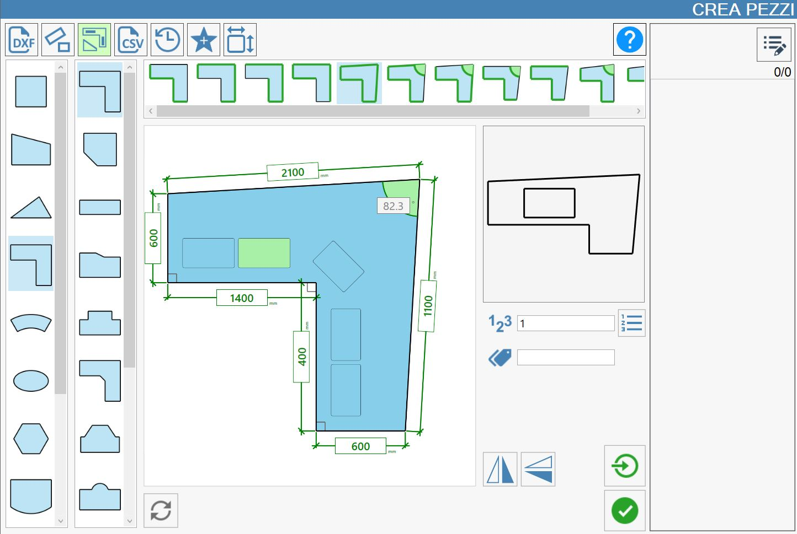
Mirror
Pulsando los dos botones específicos es posible reflejar el resultado mostrado en pantalla, respectivamente, a lo largo del eje vertical u horizontal. Esta función permite adaptar la visualización a las necesidades operativas o al tipo de mecanizado en curso.
A continuación se muestran algunos ejemplos de reflejo horizontal y vertical:
Solo reflejo horizontal | Solo reflejo vertical | Reflejo horizontal y vertical |
 |  | 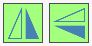 |
 |  |  |
Esta sección ofrece al operador la posibilidad de importar piezas a partir de archivos en formato CSV.
/schermata_pulita_eng-20250321-091704.png)
Vista previa
La lista situada a la izquierda de esta sección muestra todos los archivos en formato CSV presentes en la ruta seleccionada actualmente.
Al pulsar un elemento de la lista de archivos CSV se actualizará la vista previa que ocupa la parte central de esta sección.
En el siguiente ejemplo puede observarse la actualización de la vista previa después de pulsar el primer elemento de la lista:
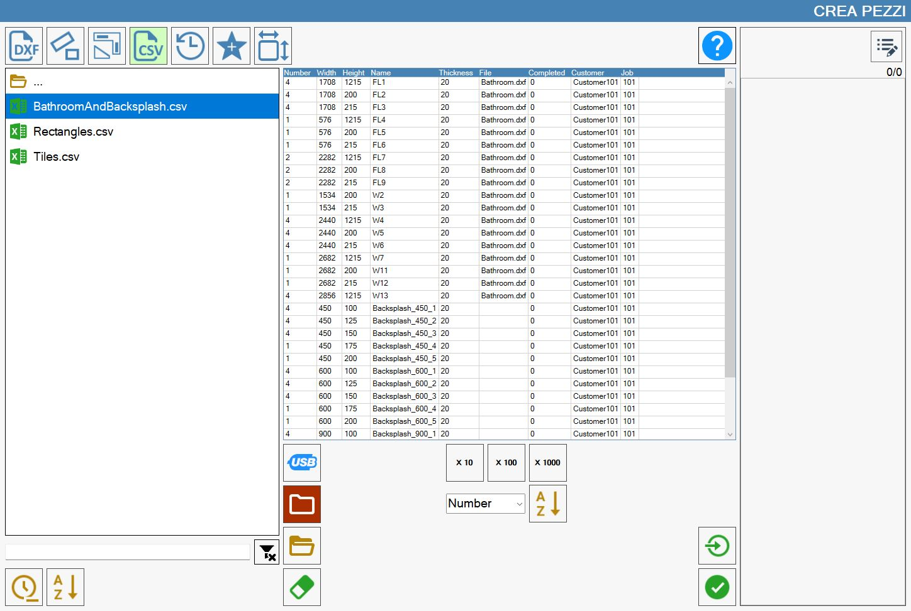
Multiplicadores de dimensiones
Se ofrece la posibilidad de multiplicar por 10, por 100 o por 1000 las dimensiones totales de las piezas presentes en el archivo CSV seleccionado.
La siguiente imagen muestra los tres multiplicadores disponibles:
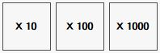
La siguiente imagen actualiza el ejemplo de la imagen incluida en el capítulo «Vista previa», en el que los valores «Anchura», «altura» y «espesor» cambian después de pulsar el segundo botón multiplicador de dimensiones «X 100»:
/image-20250325-132949.png)
En este ejemplo también se muestra cómo el botón «X 100», después de hacer clic en él, se actualiza cambiando el color de fondo a un tono verde claro.
Ordenación
La función de ordenación rellena la lista de ordenación en función de los campos presentes en el archivo CSV seleccionado y permite al operador, si lo desea, aplicar un filtro en orden alfabético o alfabético inverso basado en uno de los campos previstos en el archivo seleccionado.
/sezione_ordinamento_eng-20250320-155220.png)
Esta función permite al operador recuperar el historial de las piezas creadas.

Tipos de vista de las piezas en el historial
Se ofrecen tres modos distintos de visualización de las piezas presentes en esta sección:

 | Vista de cortes |
 | Vista de cotas |
 | Vista de dimensiones |
Para los siguientes ejemplos se han importado cinco piezas (A1, A2, A3, A4 y A5) del DXF denominado «Kitchen_Curve».
Independientemente de la vista seleccionada, siempre será posible visualizar todas las piezas tanto en la lista del historial del lado izquierdo como en la lista de piezas importadas actualmente del lado derecho.
Vista de los cortes
La vista de cortes resalta todos los cortes, tanto perimetrales como internos de la pieza, ocultando otra información como el valor de su longitud.

Vista de las cotas de los cortes
La vista de cotas de los cortes resalta el perímetro exterior en negro y coloca cerca del centro de cada corte del perímetro su longitud correspondiente.

Vista de dimensiones
La vista de dimensiones no resalta ningún corte; permite observar las dimensiones máximas de la pieza en términos de anchura y longitud.
En la siguiente imagen pueden observarse dos líneas negras, cada una con el valor de la longitud y anchura máximas de la pieza en el centro; sin embargo, es importante observar que solo por coincidencia los lados de la pieza A2 coinciden con las líneas negras, ya que los demás cortes de la pieza no están resaltados ni muestran información alguna.

Mediante la pantalla de favoritos es posible importar en Parametrix piezas que se hayan guardado anteriormente como favoritas.

Añadir una pieza a favoritos
Es posible insertar cualquier pieza en la sección de piezas favoritas mediante el siguiente botón:
 | Añadir favorito |
Al pulsar este botón aparecerá la siguiente ventana emergente:

Al completar el campo de texto y confirmar, el operador podrá insertar la pieza seleccionada en la lista de piezas favoritas descrita anteriormente.

Tipos de vista de las piezas en el historial
Se ofrecen tres modos distintos de visualización de las piezas presentes en esta sección:
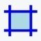 | Vista de cortes |
 | Vista de cotas |
 | Vista de dimensiones |
En esta sección del panel «Crear piezas» es posible crear piezas comerciales. Las características de este tipo de piezas son las siguientes:
se crean con un número elevado de copias;
las dimensiones de anchura y altura pueden modificarse incluso cuando una pieza está insertada en la zona de trabajo.

Parámetros
 | Anchura |
Altura | |
 | Marca |
Importación de una pieza comercial
Para finalizar correctamente la creación de una pieza comercial es necesario utilizar el siguiente botón:
 | Importar piezas comerciales |
El procedimiento de creación también actualizará tanto la lista de piezas comerciales de la izquierda como la lista de piezas que deben mecanizarse del lado derecho. El siguiente ejemplo muestra ambas listas actualizadas:

Como puede observarse en la columna del lado izquierdo de la pantalla, un icono verde precede al nombre de la pieza. Al hacer clic en ese icono, se volverá rojo y la pieza se eliminará de la lista del lado derecho.

Cuando se crean e importan una o varias piezas en Parametrix, el programa las añade a la lista de piezas situada en la sección derecha de la pantalla principal.
A través de la lista de piezas, el operador puede:
Insertar las piezas en el área de trabajo;
Llevar el control de las piezas mecanizadas y de las que aún deben mecanizarse;
Aplicar algunas modificaciones a las piezas.

Elementos de la lista
Cada fila de la lista representa una pieza que se ha importado en Parametrix.

Como puede verse en esta imagen, una fila contiene la siguiente información relativa a la pieza:
Vista previa de la forma | Representación simplificada de la geometría de la pieza. |
Marca de la pieza | Etiqueta que se añade a la pieza para identificarla. |
Número de piezas insertadas y totales | Indica el número de piezas de esa fila que se han insertado en el área de trabajo y el número total de piezas de ese tipo que pueden insertarse. |
Insertar las piezas en el área de trabajo
Para insertar las piezas en el área de trabajo se utiliza el siguiente botón, presente en cada fila de la lista:
Insertar piezas en el área de trabajo |
La pieza seleccionada se ha colocado en el área de trabajo y se ha actualizado el número de piezas insertadas de esta fila.

Una vez alcanzado el número máximo, el botón «Insertar piezas» de esa fila desaparece, ya que se han mecanizado todas las piezas de dicha fila.
Operaciones sobre las piezas de la lista
Los botones situados debajo de la lista permiten gestionar los elementos de la lista. En particular:
 | Limpiar lista de piezas |
 | Ocultar/Mostrar piezas comerciales |
 | Borrar pieza |
 | Filtrar/Ordenar piezas |
 | Propiedades adicionales de la pieza |
Borrar pieza
Esta función permite eliminar individualmente las piezas de la lista. Después de pulsar el botón, el programa solicitará al usuario que seleccione la fila que desea eliminar, sustituyendo la flecha de inserción de piezas en el área de trabajo por una goma de borrar.

Al pulsar este botón se elimina la fila correspondiente y, por tanto, todas las piezas que representa.
Esta función permite al operador aplicar un filtro y/o ordenar las piezas de la lista.
Al pulsar el botón se abrirá la siguiente ventana.

Lista de piezas filtrada
Una vez establecidos los criterios para filtrar u ordenar las piezas, pueden aplicarse mediante el botón situado en la parte superior derecha.
 | Activar/Desactivar |
Las piezas que no correspondan a los criterios elegidos para el filtro no se mostrarán en la lista de piezas.
Las piezas presentes en el área de trabajo que no cumplan los criterios establecidos por el filtro se eliminarán.
En el siguiente ejemplo se desea mostrar solo las piezas con una altura superior a 600 mm y ordenarlas alfabéticamente de forma ascendente.
Antes de aplicar el filtro y la ordenación | Después de aplicar el filtro y la ordenación |
 |  |
La función de filtro y ordenación no funciona con las piezas comerciales.
Los criterios de filtro y ordenación también serán respetados por la función de nesting.
Filtrar las piezas
En la sección superior de esta ventana, el operador puede elegir añadir un filtro en función de distintas características de las piezas.

Como puede verse, están disponibles los siguientes botones.
  | Modo de aplicación del filtro «Exclusión» |
 | Añadir filtro |
 | Eliminar filtros |
Cómo crear un filtro
Para crear un filtro, seleccione en el primer menú desplegable de la izquierda la propiedad que se desea utilizar entre las propuestas.

Una vez elegida la característica discriminante, seleccione un operador relacional en el segundo menú.

A continuación, introduzca en la casilla adyacente un valor adecuado para la propiedad con el fin de crear una condición lógica.

En este momento, mediante el botón situado a la derecha del cuadro de texto, se decide cómo debe interactuar el filtro que se está creando con los demás filtros de la lista, si los hay.
En modo «Exclusión», una pieza deberá cumplir
simultáneamente
la condición lógica que se está creando y el resultado de las anteriores.
En modo «Inclusión», una pieza deberá cumplir la condición que se está creando
o
el resultado de las anteriores.
Para completar la creación del filtro, utilice el último botón situado en esta fila. El filtro se añadirá a la lista inferior.

Ordenar las piezas
En la sección inferior de la ventana, el operador puede decidir ordenar las piezas según determinadas propiedades.
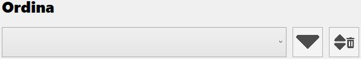
Después de seleccionar una opción de las propuestas en el menú desplegable, podrán realizarse las siguientes acciones:
 | Orden ascendente/descendente |
Eliminar ordenación |
Ordenación múltiple (Opcional)
Esta función permite ordenar las piezas de la lista utilizando más de un criterio.
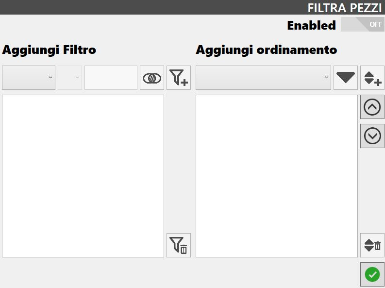
Con este modo es posible añadir criterios de ordenación mediante los siguientes botones:
 | Añadir criterio de ordenación |
 | Cambiar posición |
Los criterios contenidos en esta lista se aplican de arriba abajo.
Esto significa que las piezas se ordenan según el primer criterio. Si dos o más piezas tienen el mismo valor para la propiedad asociada al primer criterio, se ordenarán según el criterio siguiente. Y así sucesivamente para cada criterio de la lista.
En la siguiente imagen se muestra un ejemplo de ordenación múltiple.

Esta función permite modificar las propiedades adicionales de la pieza. Se trata de información sobre la pieza que puede visualizarse en distintas partes del programa y que también se incluye en el archivo ISO generado para la máquina.
Al pulsar el botón y, a continuación, la fila deseada de la lista de piezas, se abre la siguiente ventana.

Configuración de las propiedades
En la parte central del panel se enumeran las propiedades adicionales que pueden asignarse a una pieza.
Los campos que aparecen en esta ventana pueden personalizarse con la ayuda de un técnico Donatoni.
Botones
En la parte inferior de la ventana están presentes los dos botones descritos a continuación:
 | Copiar |
 | Pegar |
Al confirmar, esta información se asociará a todas las piezas vinculadas a la fila de la lista seleccionada.
Este panel permite al operador aplicar distintos tipos de mecanizado a una pieza determinada.
Al abrirlo se muestra la siguiente pantalla:

Algunas de las funciones que se describirán en esta sección también están presentes en la página principal de Parametrix, pero con una diferencia.
Si se modifica una pieza o un corte mediante el panel «Modificar pieza», todas las piezas de la fila seleccionada se modificarán en consecuencia con los mismos mecanizados.
Por el contrario, si el mecanizado se configura desde el área de trabajo, solo se modificará la pieza seleccionada.
Tipos de mecanizado
Mediante el panel «Modificar pieza» es posible aplicar uno o varios de los siguientes mecanizados, que se describirán individualmente a continuación. En particular, Parametrix permite:
Inclinar |  | Goterón | |
 | Añadir |  | Borrar |
 | Offset |  | Agujero |
Fresado |  | Rebaje | |
 | Corte inferior - (Opcional) | Alzada | |
 | Bordillo |  | Superficie - (Opcional) |
| Planeado - (Opcional) |  | Canal - (Opcional) |
 | Redondeo | Dividir | |
 | Vaciado interno |  | Flutes |
 | Contorno máximo - (Opcional) |  | Espejo |
Lista de cortes
Los cortes de la pieza se mostrarán en la sección inferior izquierda de este panel.
Mediante una subdivisión específica se indica si un corte pertenece al perímetro exterior o a uno de los perímetros interiores. Gracias a esta clasificación, es posible mostrar/ocultar la lista de cortes pertenecientes a un polígono pulsando el icono de la sección correspondiente.

Como puede verse en la imagen, en cada fila se muestra cierta información sobre el corte que representa. En particular:
 | Gestionar mecanizado |
 | Información del corte
|
 | Información del mecanizado
|
Esta información cambia según el tipo de corte que describe. No siempre se muestra toda la información.
Por ejemplo, para los agujeros solo es posible visualizar la penetración en el material.
Vista previa
La parte principal de la función «Modificar pieza» ofrece al operador una vista previa completa de la pieza seleccionada, mostrando todos los mecanizados aplicados actualmente.

Es posible interactuar con la pieza mostrada simplemente moviendo la vista previa o utilizando los botones para modificar el zoom situados a su derecha.
Además, en esta sección hay otras funciones que se describen a continuación.
 | Marca |
 | Número de piezas |
 | Añadir favorito |
Selección de los cortes
Es posible seleccionar un corte directamente desde la vista previa, observando el cambio de color a amarillo como confirmación de la selección, o seleccionar la fila correspondiente dentro de la lista de cortes disponible en el menú inferior izquierdo.
Haciendo clic en el indicador verde situado a la izquierda de cada elemento de la lista será posible desactivar el corte correspondiente.
En este caso, el indicador se volverá rojo y la vista previa de la pieza se actualizará, pasando a gris el color del corte desactivado.
En el siguiente ejemplo se han desactivado los dos primeros cortes del polígono exterior de la pieza:

Barra inferior
En esta barra se ofrecen algunas funciones que simplifican el uso de los mecanizados de Modificar pieza:

 | Cortes |
Lados | |
 | Historial |
 | Deshacer |
Modificar vista |
Historial
Permite visualizar todas las modificaciones aplicadas a la pieza actual y, si es necesario, restablecer la pieza actual a un estado anterior.
Si se han aplicado modificaciones a la pieza actual, se mostrarán en la lista de la izquierda:

En el menú de la izquierda se muestran los estados del mecanizado de la pieza.
 | Estado del mecanizado
|
El estado de la pieza actual sin modificaciones se denomina «Default».
Al seleccionar una opción del menú de la izquierda se muestra la vista previa correspondiente al momento de aplicación del mecanizado.
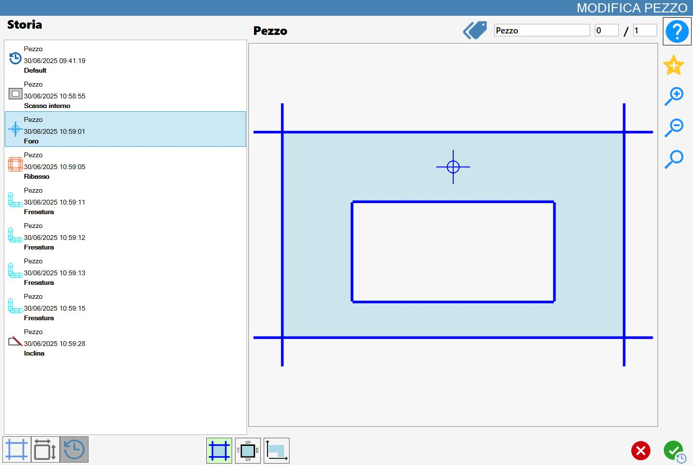
Al pulsar el botón de confirmación, la pieza se restablecerá al estado seleccionado. De este modo se eliminan las modificaciones posteriores a la seleccionada.
En la parte inferior del panel se muestran tres botones útiles para visualizar la pieza en la vista previa:
 | Visualizar cortes |
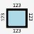 | Visualizar medidas |
 | Visualizar ángulo |
Modificar vista
Este modo ofrece al operador algunos botones visibles únicamente cuando la «modificación de vista» está activada.

Cada uno de los siguientes botones activa o desactiva uno de los siguientes elementos de la pieza:
 | Cortes |
 | Agujeros |
 | Fresados |
 | Rebajes |
 | Flechas en los cortes |
Nombre de la pieza | |
 | Dynamic Tags |
Resaltar perímetro |
La función «Inclinación» define un mecanizado con el eje A distinto de 0.
La interfaz del tipo de mecanizado «Corte inclinado» presenta un aspecto similar a la siguiente imagen:

Modo
 | Dirección de escuadra _ |
 | Dirección de escuadra - |
Parámetros
Grados | Representa el ángulo formado entre la dirección de la herramienta montada y la superficie del material que se va a mecanizar. |
Ejecución del mecanizado
Es posible aplicar el mecanizado pulsando el botón situado a la izquierda del corte correspondiente en la lista de polígonos.
Un icono rojo con una «X» indica que el mecanizado no puede aplicarse al corte deseado.
Una vez seleccionada la dirección de la escuadra, se introduce el valor deseado al lado y se selecciona el corte en el que se desea configurar el corte inclinado.
La aplicación del mecanizado hará que el corte inclinado se muestre con un color diferente.
En función de la selección de la escuadra es posible obtener dos resultados distintos:
Dirección de escuadra: Positiva
En la siguiente imagen de ejemplo se ha aplicado el mecanizado de corte inclinado (45.0_) con dirección de escuadra positiva en todos los lados excepto en el arco interior, ya que no es posible inclinar la herramienta hacia el interior del perímetro.
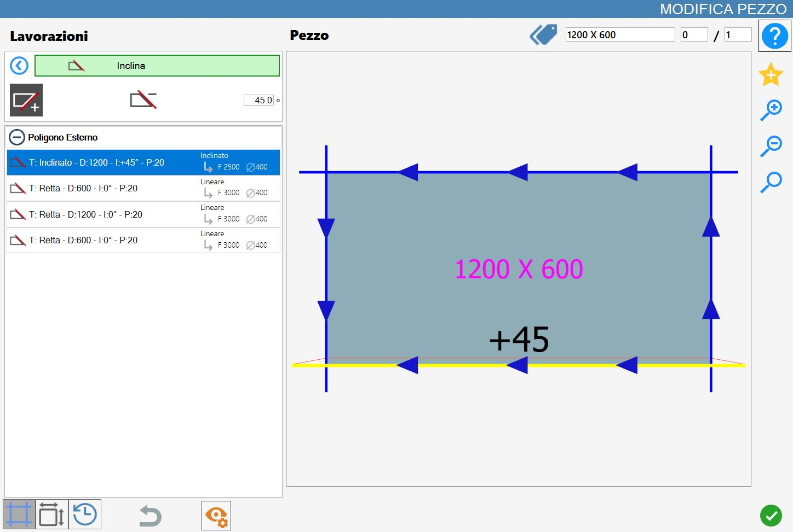
Dirección de escuadra: Negativa
En la imagen de ejemplo, los mecanizados de corte inclinado (45.0_) con dirección de escuadra negativa se han aplicado a los cortes de la pieza de forma inversa respecto a la configuración mostrada en el apartado anterior

Esta función permite añadir un corte con características distintas a las del corte normal.
La interfaz que se abre presenta un aspecto similar a la siguiente imagen:

Parámetros
Es posible establecer la anchura de corte (debe ser igual o mayor que el espesor del disco).
Distancia desde el borde | Distancia desde el corte seleccionado hasta el mecanizado de goterón. |
Espesor de corte | Es la medida de la anchura del mecanizado. Es posible realizar un Goterón con una anchura mayor que el espesor del disco. |
Profundidad de corte | Es la profundidad de penetración en el material. |
Distancia inicial | Distancia hacia el interior con la que se crea el mecanizado respecto al inicio del corte. |
Distancia final | Distancia hacia el interior con la que se crea el mecanizado respecto al final del corte. |
Distancia inicial y distancia final pueden activarse o desactivarse mediante los botones situados a la derecha del valor.
Si están desactivadas, Parametrix no las tiene en cuenta; cuando están activadas, el programa calcula el desplazamiento.
Distancia inicial y Distancia final
Estos parámetros pueden activarse o desactivarse mediante los botones situados a la derecha del valor. Si están grises (desactivados), Parametrix no los tiene en cuenta; cuando están verdes (activados, como en la figura), el programa calcula el desplazamiento.

Ejecución del mecanizado
Es posible aplicar el mecanizado pulsando el botón situado a la izquierda del corte correspondiente en la lista de polígonos.
Un icono rojo con una «X» indica que el mecanizado no puede aplicarse al corte deseado.
En función de los parámetros de mecanizado configurados, se inserta un goterón paralelo al corte de la pieza seleccionada.

En la siguiente imagen se muestra un mecanizado de tipo goterón realizado con los mismos parámetros del ejemplo anterior.

En ambos ejemplos, el mecanizado se ha aplicado al corte inferior.
Además, se ha añadido a la lista de «Mecanizados adicionales» situada en la parte inferior izquierda del panel «Modificar pieza».
Mediante esta función es posible añadir un corte paralelo a un corte ya existente a la distancia deseada.
Es posible aplicar este mecanizado tanto a cortes lineales como a arcos de curva.

Parámetros
Para poder añadir un corte, se solicita configurar el siguiente parámetro:
Distancia | Distancia desde el corte seleccionado a la que se añadirá el corte paralelo. |
Ejecución del mecanizado
Es posible aplicar el mecanizado pulsando el botón situado a la izquierda del corte correspondiente en la lista de polígonos.
Un icono rojo con una «X» indica que el mecanizado no puede aplicarse al corte deseado.
Una vez configurado el parámetro distancia, se selecciona el corte respecto al cual se desea crear el nuevo.
La dirección en la que se añade el nuevo corte se calcula para no dañar la pieza: hacia el exterior si se selecciona un elemento del polígono exterior, o hacia el interior de un polígono interior.
Si el valor de la distancia es negativo, el corte añadido se calcula en la dirección de desplazamiento opuesta a la prevista.
En la siguiente imagen se muestra el resultado de añadir dos cortes seleccionando las dos rectas que definen el entrante de la encimera de cocina.

Como se muestra, el nuevo corte paralelo se inserta en la sección Mecanizados añadidos y replica las características del corte seleccionado, como la dirección y el tipo de mecanizado.
Botón para añadir corte en ángulos cóncavos
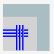 | Cortes cóncavos |
|---|

La función «Borrar» permite eliminar uno o varios cortes de la figura.
La interfaz de esta función presenta un aspecto similar a la siguiente imagen:

Ejecución del mecanizado
Es posible aplicar el mecanizado pulsando el botón situado a la izquierda del corte correspondiente en la lista de polígonos.
Un icono rojo con una «X» indica que el mecanizado no puede aplicarse al corte deseado.
Una vez eliminado uno de los cortes se observarán las siguientes modificaciones:

Cuando todos los cortes se eliminan de la lista de mecanizados adicionales, la propia lista se elimina automáticamente.
Al eliminar un corte del polígono, el resultado será similar al mostrado en la siguiente imagen:

Esta función permite ampliar la pieza desplazándola paralelamente al corte seleccionado.
En la siguiente imagen se muestra la interfaz de la función utilizando una pieza de muestra con fines demostrativos.
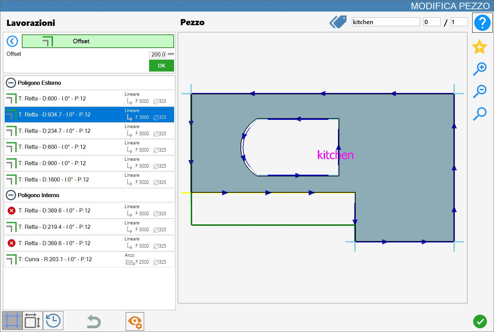
Parámetros
Offset | Permite ampliar la pieza desplazándola de forma paralela al corte seleccionado. |
Ejecución del mecanizado
Es posible aplicar el mecanizado pulsando el botón situado a la izquierda del corte correspondiente en la lista de polígonos.
Un icono rojo con una «X» indica que el mecanizado no puede aplicarse al corte deseado.
La imagen inferior muestra la pieza después de añadir un offset, tomando como referencia el corte lateral izquierdo del polígono interior.
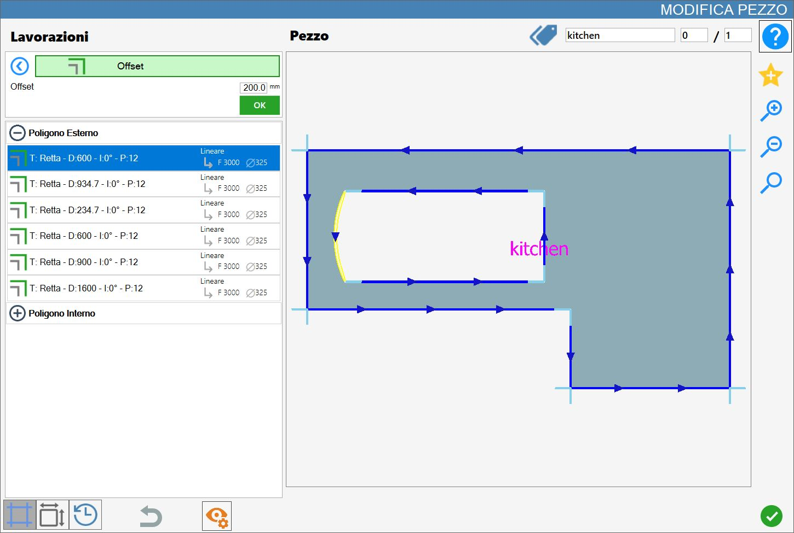
Una vez realizado, este mecanizado no añade ni elimina cortes de la lista; se limita a actualizar los parámetros de los cortes implicados en función de las modificaciones realizadas.
En esta página es posible realizar un único agujero en una posición específica o una serie de agujeros a una distancia fija.

Tipos de mecanizado
Para utilizar este mecanizado, primero debe elegirse uno de los dos modos disponibles seleccionando el botón correspondiente:
Los modos «Agujero en el material» y «Eliminación de material residual» son mutuamente excluyentes: al activar uno se desactiva automáticamente el otro.
 | Agujero en el material |
 | Eliminación de material residual |
Agujero en el material
Al seleccionar este modo de mecanizado, el vértice seleccionado actualmente se resaltará en naranja y, a partir de él, se proyectará la vista previa del agujero que se va a añadir, también en naranja y generada según los parámetros establecidos.

Parámetros
Penetración | Indica la profundidad que debe alcanzar el mecanizado. |
Distancia eje X | Distancia en el eje X desde el punto inicial del corte seleccionado, en la que se creará el agujero. |
Distancia eje Y | Distancia en el eje Y desde el punto inicial del corte seleccionado, en la que se creará el agujero. |
Respecto al punto seleccionado, se considera positiva la parte situada a la derecha del círculo (para X) y la parte situada encima del círculo (para Y), como se muestra en la figura.

Ejecución de Agujero en el material
Es posible aplicar el mecanizado pulsando el botón situado a la izquierda del corte correspondiente en la lista de polígonos.
Un icono rojo con una «X» indica que el mecanizado no puede aplicarse al corte deseado.
Una vez seleccionado un vértice y configurados los parámetros de distancia y penetración , será posible confirmar el mecanizado pulsando el botón verde OK.
Cada agujero insertado correctamente en el material provoca la actualización de la vista previa y la inserción automática en la sección «Mecanizados adicionales» de la izquierda:

Sin embargo, a diferencia de Eliminación de material residual, también es posible seleccionar los puntos centrales de los arcos, resaltados en la vista previa junto con todos los demás puntos válidos como referencia para insertar agujeros en el material
Eliminación de material residual
Al activar este modo, el vértice seleccionado se convierte en el punto de origen de una vista previa naranja formada por varios agujeros, cuyo tamaño depende de la broca hueca montada y cuya cantidad viene determinada por el parámetro Distancia entre agujeros.

Parámetros de Eliminación de material residual
Penetración | Indica la profundidad que debe alcanzar el mecanizado. |
Distancia de agujeros automáticos | Determina la distancia entre los puntos de origen de los agujeros. |
Ejecución de Eliminación de material residual
Es posible aplicar el mecanizado pulsando el botón situado a la izquierda del corte correspondiente en la lista de polígonos.
Un icono rojo con una «X» indica que el mecanizado no puede aplicarse al corte deseado.
El modo Eliminación de material residual puede utilizarse entre dos cortes consecutivos, independientemente de que ambos sean rectas, ambos curvas o uno de cada tipo.

El agujero se añade a la lista del polígono interior e identifica el mecanizado de eliminación de material residual.
A continuación se muestra un ejemplo de Eliminación de material residual aplicada a dos lados adyacentes del polígono interior:

Botones disponibles con el modo Eliminación de material residual
 | Agujeros cóncavos |
|---|---|
 | Número de agujeros |
La función «Fresado» permite crear un fresado en la pieza, en el lado, en el borde o en todo el perímetro.
La interfaz de esta función presenta un aspecto similar a la siguiente imagen:

Parámetros
Vértice | Elimina el material que el disco no puede retirar sin dañar la pieza. Sirve únicamente para acabar determinados puntos de la pieza. |
Lado | La herramienta fresa se utiliza para cortar un lado de la pieza. No se añade al corte con disco, sino que lo sustituye completamente. |
Perímetro | Prevé utilizar la herramienta fresa en lugar de la herramienta disco para ejecutar el corte en todo un polígono de la pieza. Sustituye al disco como en el modo lado. |
En cualquier modo, el espesor del corte equivale al diámetro de la herramienta fresa montada. La variación de este elemento modifica automáticamente los cortes, actualizándolos con la nueva medida.
Para el modo Vértice, la variación del espesor del material o del diámetro del disco provoca un alargamiento o acortamiento del corte para adaptarse a las nuevas medidas seleccionadas.
Si la fresa es demasiado grande para cortar el lado seleccionado, se mostrará un mensaje de error en pantalla.
Espesor | Se muestra el espesor de la losa configurado actualmente en Parametrix para ayudar al operador a aplicar el mecanizado. |
 | Penetración |
 | Fresado en ángulos internos |
Ejecución del mecanizado
Es posible aplicar el mecanizado pulsando el botón situado a la izquierda del corte correspondiente en la lista de polígonos.
Un icono rojo con una «X» indica que el mecanizado no puede aplicarse al corte deseado.
Las consecuencias de aplicar un fresado varían según el modo seleccionado y presentan algunas diferencias, descritas en los apartados siguientes.
El fresado comienza desde el punto de entrada indicado en la figura, identificable por el círculo de color sólido situado en el origen.
Cada fresado aplicado a una pieza se inserta en la lista de cortes asociada a un polígono y se representa gráficamente en azul claro.
En el modo Vértice, el fresado se alinea con el vértice seleccionado.
En los modos Lado y Perímetro, se sustituyen respectivamente uno o todos los cortes del polígono.
Ejecución en un vértice
El fresado se aplica al vértice más cercano al punto seleccionado de un corte en la vista previa.
La aplicación se realizará entre dos cortes consecutivos.
En la siguiente imagen de ejemplo se muestran dos mecanizados de fresado en vértice: el primero en un vértice superior izquierdo del polígono interior; el segundo en un vértice del polígono exterior.

Ejecución en un lado
Al seleccionar cualquier punto de un corte en la vista previa, el fresado se aplicará a lo largo de todo el lado correspondiente.
En la siguiente imagen se muestran dos mecanizados de fresado en lado: el primero en el lado izquierdo del polígono interior; el segundo en un lado inferior del polígono exterior.
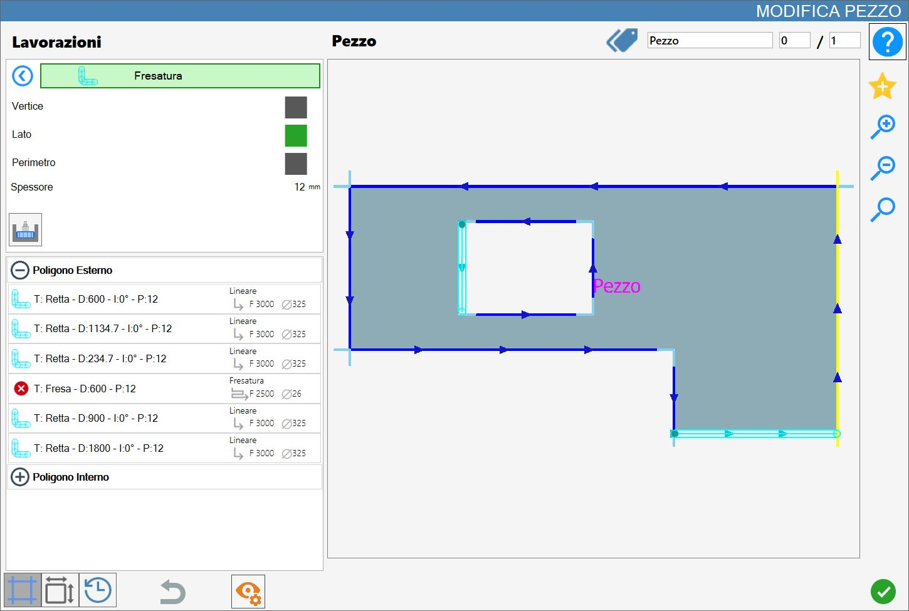
Ejecución en el perímetro
Independientemente del punto o corte seleccionado, el fresado se realizará a lo largo de todo el perímetro del polígono seleccionado.

La función «Rebaje» permite añadir un perfil al borde superior de la pieza o de la encimera de cocina.
Se utiliza principalmente para rebajar en una determinada cantidad los vaciados internos de las encimeras de cocina, de modo que se pueda insertar el fregadero.
La herramienta utilizada para realizar este mecanizado es la Fresa.
La interfaz de esta función presenta un aspecto similar a la siguiente imagen:
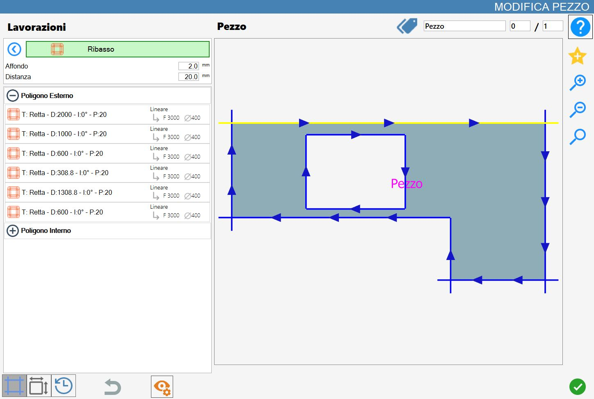
Parámetros
Penetración | Profundidad con la que se debe realizar el corte. |
Distancia | Permite especificar la distancia deseada respecto al lado de la pieza. Se admiten valores positivos, negativos y cero.
|
Ejecución del mecanizado
Es posible aplicar el mecanizado pulsando el botón situado a la izquierda del corte correspondiente en la lista de polígonos.
Un icono rojo con una «X» indica que el mecanizado no puede aplicarse al corte deseado.
Se aplicará un rebaje en todo el polígono de un corte seleccionado, independientemente del punto en el que se haya seleccionado.
A continuación se muestra un ejemplo de rebaje con un valor positivo del parámetro distancia:
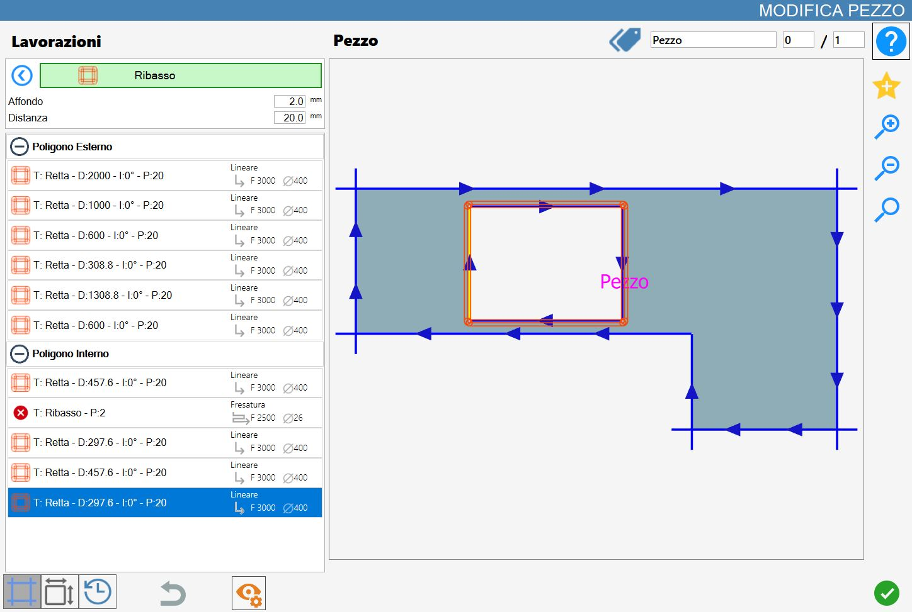
Esta función permite al operador añadir un corte inferior respecto a un corte seleccionado en la pieza seleccionada.
La interfaz de esta función presenta un aspecto similar a la siguiente imagen:
/2-20250630-123653.png)
Parámetros
Distancia desde el borde | Distancia desde el corte seleccionado hasta el mecanizado de corte inferior. |
Profundidad de corte | Es la profundidad de penetración en el material. |
Distancia inicial | Distancia hacia el interior con la que se crea el mecanizado respecto al inicio del corte. |
Distancia final | Distancia hacia el interior con la que se crea el mecanizado respecto al final del corte. |
Distancia inicial y distancia final pueden activarse o desactivarse mediante los botones situados a la derecha del valor.
Si están desactivadas, Parametrix no las tiene en cuenta; cuando están activadas, el programa calcula el desplazamiento.
Distancia inicial y Distancia final
Estos parámetros pueden activarse o desactivarse mediante los botones situados a la derecha del valor. Si están grises (desactivados), Parametrix no los tiene en cuenta; cuando están verdes (activados, como en la figura), el programa calcula el desplazamiento.
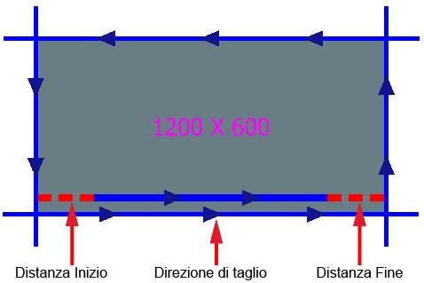
Ejecución del mecanizado
Es posible aplicar el mecanizado pulsando el botón situado a la izquierda del corte correspondiente en la lista de polígonos.
Un icono rojo con una «X» indica que el mecanizado no puede aplicarse al corte deseado.
En función de los parámetros de mecanizado configurados, se inserta un corte inferior paralelo al corte de la pieza seleccionada.
/3-20250630-123927.png)
En la siguiente imagen se muestra un mecanizado de tipo goterón realizado con los mismos parámetros del ejemplo anterior.
/4-20250630-123848.png)
En ambos ejemplos, el mecanizado se ha aplicado al corte rectilíneo inferior.
Además, se ha añadido a la lista de «Mecanizados adicionales» situada en la parte inferior izquierda del panel «Modificar pieza».
Esta función permite crear una pieza rectangular a partir del lado de un objeto para obtener una alzada.

Tipos de mecanizado
Para utilizar este mecanizado, primero debe elegirse uno de los dos modos disponibles seleccionando el botón correspondiente:
 | Modo Revestimiento |
 | Modo Alzada |
Parámetros
Altura | Altura de la alzada que se insertará durante la ejecución del mecanizado. |
Inclinar lados de la pieza | Si está activado, inserta automáticamente cortes inclinados cuando haya cortes que colisionarían. |
Parámetro adicional del modo alzada
Grados | Este parámetro solo está activo cuando se selecciona el modo Revestimiento. |
Ejecución del mecanizado
Es posible aplicar el mecanizado pulsando el botón situado a la izquierda del corte correspondiente en la lista de polígonos.
Un icono rojo con una «X» indica que el mecanizado no puede aplicarse al corte deseado.
Al hacer clic directamente en el corte de la vista previa o, cuando sea posible, en el icono situado a la izquierda del corte en la lista correspondiente del lado izquierdo, se ejecutará el mecanizado seleccionado.
Cada alzada o redondeo aplicado correctamente al material provoca la actualización de la vista previa y de la lista de cortes de la izquierda.
Cada pieza creada con esta función se añadirá a la lista de piezas de Parametrix.
Además, las nuevas piezas introducidas se añadirán a una lista situada justo encima de la vista previa en el panel «Modificar pieza»;

Desde esta lista es posible seleccionar la pieza del bloque deseada para visualizar su vista previa y los cortes correspondientes en la lista de cortes.
Ejecución de Revestimiento
A continuación se muestra la aplicación de dos revestimientos cuando el parámetro «Inclinar lados de la pieza» está activado o desactivado.
Primero se aplica un revestimiento de 1000 mm de altura en el lado inferior del rectángulo y, a continuación, un segundo revestimiento en el lado derecho del mismo.
Inclinar lados de la pieza desactivado
No aparecen lados inclinados en el resultado obtenido y los cortes de la pieza original no se modifican en la lista de cortes:

Inclinar lados de la pieza activado
En caso de alineación de los vértices de las nuevas piezas, es decir, Pieza_1 y Pieza_2, los lados con el vértice en común que no sean adyacentes a la pieza original se sustituirán por cortes inclinados:

Ejecución de Alzada
A continuación se muestra la aplicación de dos alzadas cuando el parámetro «Inclinar lados de la pieza» está activado o desactivado.
Primero se aplica una alzada de 50 mm de altura en el lado inferior del rectángulo y, a continuación, una segunda alzada en el lado derecho del mismo.
En este modo, la pieza original (Pieza) y cada posible pieza generada (Pieza_1 y Pieza_2) tendrán automáticamente aplicados cortes inclinados en todos los lados que resulten adyacentes entre sí.
El ángulo de inclinación viene determinado por el parámetro grados.
Inclinar lados de la pieza desactivado
En este caso, los lados adyacentes entre la pieza original y las nuevas piezas creadas se sustituyen automáticamente por cortes inclinados.
La inclinación del corte depende del parámetro Grados configurado.

Inclinar lados de la pieza activado
Como en el caso anterior, se insertan cortes inclinados en los cortes adyacentes a las distintas piezas y la inclinación depende del valor del parámetro Grados.
Además, al activar el parámetro «Inclinar lados de la pieza», como en el caso de los revestimientos, si las nuevas piezas presentan una alineación de vértices, los lados con un vértice en común que no sean adyacentes a la pieza original se sustituyen automáticamente por cortes inclinados.

División de las piezas
Cuando se han asociado una o varias piezas a la pieza seleccionada mediante mecanizados de Alzada o Revestimiento, aparece en la parte superior del panel «Modificar pieza» un botón específico para gestionar las piezas asociadas.
 | Dividir piezas |
|---|
Antes de la división, las piezas asociadas se gestionan de forma unificada dentro del área de trabajo. En este estado se crea un bloque formado por varios elementos que estarán sujetos a las mismas operaciones, sin estar todavía divididos.
Por ejemplo, cuando la pieza original, una alzada o un revestimiento se añade al área de trabajo desde la lista de piezas, también se insertan automáticamente todos los demás elementos asociados.
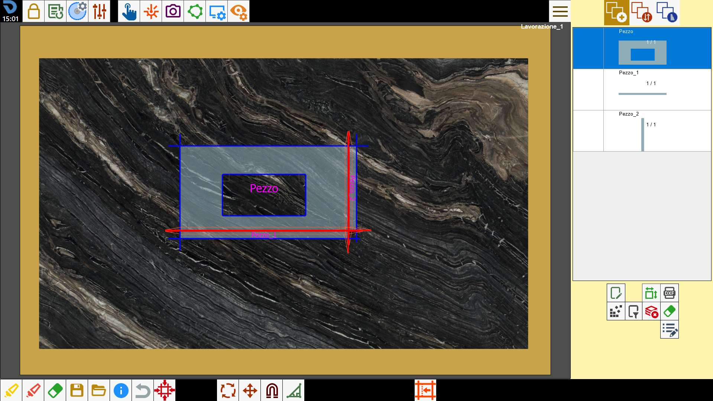
Al pulsar el botón Dividir piezas, cada pieza generada mediante alzada o revestimiento se disociará de la pieza original y se tratará como un elemento independiente.
Posteriormente, tanto la lista de piezas asociadas, anteriormente visible encima de la vista previa en el panel Modificar pieza, como el botón para dividir las piezas desaparecerán de la interfaz.
En el momento de la división, cada pieza conserva los cortes inclinados obtenidos durante la generación mediante alzada o revestimiento, además de todas las personalizaciones y modificaciones realizadas mientras todavía estaba asociada a la pieza original.
En la siguiente imagen puede observarse la gestión diferenciada de las piezas individuales que anteriormente pertenecían al mismo bloque.
En particular, solo se han insertado en el área de trabajo dos de las tres piezas (la pieza original y la primera pieza generada al aplicar la primera alzada), y la segunda pieza se ha recolocado y girado sin provocar ninguna interferencia con la pieza original:

Esta función permite añadir un bordillo de tipo bisel o de tipo pico (pico de búho), o ambos, a los cortes de la pieza seleccionada.
La interfaz de esta función presenta un aspecto similar a la siguiente imagen:

Parámetros
Para utilizar este mecanizado, primero es necesario elegir uno de los tres modos disponibles seleccionando el botón correspondiente:
Los modos «Bisel» y «Pico» o «Bisel y Pico» son mutuamente excluyentes: al activar uno se desactivan automáticamente los demás.
 | Bisel |
 | Bisel inferior (pico de búho) |
 | Bisel y bisel inferior |
Los siguientes parámetros son comunes a ambos tipos de mecanizado:
Cota X | Distancia a lo largo del eje X desde el borde de la pieza. |
Cota Y | Distancia a lo largo del eje Y desde el borde de la pieza. |
Inclinación A | Ángulo de inclinación del corte expresado en grados sexagesimales. |
Inclinación B | Ángulo de inclinación del corte respecto al bisel inferior, expresado en grados sexagesimales. |
Espesor | Se muestra el espesor de la losa actualmente configurado en Parametrix para ayudar al usuario a aplicar el mecanizado. |
Perímetro | Al activar este parámetro, el mecanizado se ejecutará en todo el perímetro de la pieza. |
Junto a los tres primeros parámetros geométricos hay casillas de selección cuadradas, inicialmente desactivadas. Es necesario activar una para especificar qué parámetro debe mantenerse constante; de este modo, al proporcionar un segundo valor, el tercero se calcula automáticamente. Las casillas de selección no pueden habilitarse si el valor del parámetro correspondiente es igual a cero, a fin de evitar configuraciones geométricamente incoherentes o no válidas.
Ejecución del mecanizado
Es posible aplicar el mecanizado pulsando el botón situado a la izquierda del corte correspondiente en la lista de polígonos.
Un icono rojo con una «X» indica que el mecanizado no puede aplicarse al corte deseado.
El mecanizado de bordillo solo puede ejecutarse en cortes de tipo línea.
Cada bordillo insertado correctamente en el material actualiza la vista previa y se añade automáticamente a la sección «Mecanizados añadidos» de la izquierda.
Ejecución del bisel
Lado
En la siguiente imagen se puede ver el mecanizado del bordillo aplicado al lado de la pieza en la esquina superior.
Para aplicar el mecanizado al lado deseado, hay que hacer clic sobre él.

Perímetro
En la siguiente imagen se puede ver el mecanizado del bordillo aplicado al perímetro de la pieza en la esquina superior.
Para aplicar el mecanizado al perímetro, hay que activar la casilla situada a la derecha del texto y, a continuación, hacer clic en un lado de la pieza.

Ejecución del bisel inferior
Lado
En la siguiente imagen se puede ver el mecanizado del bordillo aplicado al lado de la pieza en la esquina inferior.
Para aplicar el mecanizado al lado deseado, hay que hacer clic sobre él.

Perímetro
En la siguiente imagen se puede ver el mecanizado del bordillo aplicado al perímetro de la pieza en la esquina inferior.
Para aplicar el mecanizado al perímetro, hay que activar la casilla situada a la derecha del texto y, a continuación, hacer clic en un lado de la pieza.

Ejecución del bisel y del bisel inferior
Lado
En la siguiente imagen se puede ver el mecanizado del bordillo aplicado al lado de la pieza en las esquinas superior e inferior
Para aplicar el mecanizado al lado deseado, hay que hacer clic sobre él.

Perímetro
En la siguiente imagen se puede ver el mecanizado del bordillo aplicado al perímetro de la pieza en las esquinas superior e inferior.
Para aplicar el mecanizado al perímetro, hay que activar la casilla situada a la derecha del texto y, a continuación, hacer clic en un lado de la pieza.

Esta función permite al operador realizar mecanizados en la superficie del material.
/5.00.png)
Tipos de mecanizado
Para utilizar este mecanizado, primero debe elegirse uno de los dos modos disponibles seleccionando el botón correspondiente:
/2.3-20250702-115519.png) | Superficie rectangular |
/3.3-20250702-115539.png) | Superficie zigzag |
Parámetros
Rotación del eje C | Permite orientar el mecanizado horizontalmente a 0_ o verticalmente a 90_. |
Alargamiento de pasada | Permite prolongar los cortes al inicio y al final según el parámetro configurado. |
Profundidad de corte | Indica la profundidad del mecanizado en el material. |
Ejecución del mecanizado
Es posible aplicar el mecanizado pulsando el botón situado a la izquierda del corte correspondiente en la lista de polígonos.
Un icono rojo con una «X» indica que el mecanizado no puede aplicarse al corte deseado.
Ejecución de superficie rectangular
Después de configurar los parámetros, seleccione el lado sobre el que aplicar el mecanizado.
Los cortes se ejecutan de abajo hacia arriba.
Ejecución de superficie zigzag
Después de configurar los parámetros, seleccione el lado sobre el que aplicar el mecanizado.
Los cortes se ejecutan de abajo hacia arriba.
/5.01.png)
Parámetros de mecanizado de la losa
El operador puede modificar los parámetros de superficie desde el panel correspondiente.
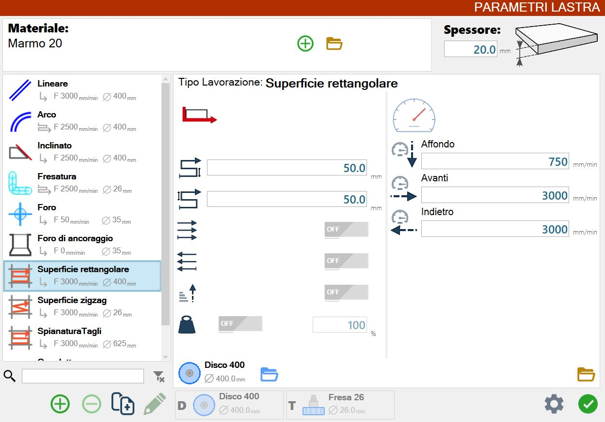
Superficie rectangular
A continuación se muestran los parámetros disponibles en el modo rectangular.
/9.2.1-20250702-133450.png)
Descripción de los parámetros
/4.1_c-20250703-065057.png) | Distancia entre pasadas de ida |
/4.2_c-20250703-065231.png) | Distancia entre pasadas de retorno |
/4.3_c-20250703-065258.png) | Solo pasadas hacia delante |
/4.4_c-20250703-065325.png) | Solo pasadas hacia atrás |
Elevar el disco al final de la pasada | |
/4.6_c-20250703-065456.png) | Presión del pistón |
Los parámetros que definen el sentido de las pasadas son mutuamente excluyentes.
Si se activa uno de ellos, también es obligatorio elevar el disco al final de la pasada.
Descripción de parámetros de velocidad
/5.1_b-20250313-160704.png) | Penetración |
/5.2_b-20250703-061911.png) | Hacia delante |
/5.3_b-20250703-061803.png) | Hacia atrás |
Superficie zigzag
A continuación se muestran los parámetros disponibles para el modo zigzag.
/9.3.1-20250703-060757.png)
Descripción de los parámetros
/6.1_c-20250703-070354.png) | Distancia entre pasadas de ida |
/6.2_c-20250703-070442.png) | Distancia entre pasadas de retorno |
Esta función permite realizar el planeado de una pieza.
/2.00.png)
Parámetros
Alargamiento de pasada | Permite prolongar los cortes al inicio y al final según el parámetro configurado. |
Ejecución del mecanizado
Partiendo del espesor de la losa configurado en los parámetros del material, para alcanzar el espesor objetivo configurado en los parámetros del mecanizado, la pieza se mecaniza del modo siguiente:
Primero se ejecutan cortes paralelos al eje X, de izquierda a derecha, con la distancia establecida en los parámetros y utilizando los parámetros de corte lineal.
A continuación se ejecutan los cortes en Y formando una cuadrícula.
El espesor inicial de la losa debe corresponder al espesor del material; se recomienda realizar el palpado para obtener una mayor precisión.
El espesor objetivo se define en los parámetros de mecanizado con referencia a la cota del banco.
Parámetros de mecanizado de la losa
El operador puede modificar los parámetros de planeado desde el panel correspondiente.
/2.01.png)
Parámetros de planeado de los cortes
/2.02.png)
Descripción de los parámetros
/2.03.png) | Distancia entre pasadas horizontales |
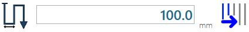 | Distancia entre pasadas verticales |
/2.05.png) | Cota de planeado |
/2.06.png) | Girar la herramienta 90 grados |
Esta función permite al operador añadir una canaleta en una zona de la pieza.
La interfaz de esta función presenta un aspecto similar a la siguiente imagen:
/1.0-20250704-082817.png)
Parámetros
Distancia desde el borde | El operador debe introducir la distancia en mm que desea mantener respecto a uno de los bordes de la pieza. |
Espesor de corte | El operador debe introducir el espesor en mm del mecanizado de la canaleta. |
Profundidad de corte | El operador debe introducir la profundidad en mm del mecanizado de la canaleta. |
Distancia inicial | El operador puede introducir la distancia en mm desde el corte de referencia de la canaleta. |
Distancia final | El operador puede introducir la distancia en mm desde el corte de referencia de la pieza de la canaleta. |
Goterones automáticos | El operador puede decidir si se crean automáticamente goterones en la pieza después de crear la canaleta. |
Espesor | Espesor del material. |
La distancia inicial, la distancia final y el goterón automático pueden activarse o desactivarse.
Si están desactivadas, Parametrix no las tiene en cuenta; cuando están activadas, el programa calcula el desplazamiento.
Ejecución del mecanizado
Canaleta con distancia inicial y final desactivadas
La canaleta se crea a una distancia de 250mm del corte seleccionado y se extiende a lo largo de toda la pieza, con un espesor de mecanizado de 100mm y una profundidad de corte de 10mm.
/1.2-20250704-093832.png)
Canaleta con distancia inicial activada y distancia final desactivada
La canaleta se crea a una distancia de 250mm del corte seleccionado, con un espesor de mecanizado de 100mm y una profundidad de corte de 10mm.
Con una distancia inicial de 100mm, la canaleta empieza a 100m del corte seleccionado.
/1.3-20250704-093940.png)
Canaleta con distancia inicial desactivada y distancia final activada
La canaleta se crea a una distancia de 250mm del corte seleccionado, con un espesor de mecanizado de 100mm y una profundidad de corte de 10mm.
Con una distancia final de 100mm, la canaleta termina a 100m del corte seleccionado.
/1.4-20250704-094210.png)
Canaleta con distancia inicial y final activadas
La canaleta se crea a una distancia de 250mm del corte seleccionado, con un espesor de mecanizado de 100mm y una profundidad de corte de 10mm.
Como puede verse, al haber configurado una distancia inicial de 100mm y una distancia final de 100mm, la canaleta empieza y termina a 100m del corte seleccionado.
/1.5-20250704-094051.png)
Goterón automático habilitado
El goterón se añade automáticamente; consulte el cap. 3.12.2.
Se coloca a mitad de camino entre la canaleta y el corte más cercano.
/1.6-20250704-094324.png)
Parámetros de mecanizado de la losa
El operador puede modificar los parámetros desde el panel de mecanizado de la losa.
/2.00.png)
Mecanizado con pasadas individuales
La siguiente pantalla muestra los parámetros correspondientes.
/2.01.png)
Descripción de los parámetros
/2.04.png) | Cota Z de inicio del mecanizado |
/2.05.png) | Sobrematerial |
/2.06.png) | Paso de arco |
/2.07.png) | Palpado de control |
Mecanizado con pasadas por pasos
La siguiente pantalla muestra los parámetros correspondientes.
/2.02.png)
Descripción de los parámetros
/2.03.png) | Hacia delante |
Esta función permite al operador añadir un empalme al vértice o al lado de la pieza.
La interfaz de esta función presenta un aspecto similar a la siguiente imagen:

Parámetros
 | Vértice individual |
 | Lado |
 | Vértices del polígono |
Parámetros de vértice individual/polígono
 | Radio R |
Parámetros «Lado»
 | Offset 0 |
Ejecución del mecanizado
Es posible aplicar el mecanizado pulsando el botón situado a la izquierda del corte correspondiente en la lista de polígonos.
Un icono rojo con una «X» indica que el mecanizado no puede aplicarse al corte deseado.
A continuación se muestra la aplicación de los empalmes en los distintos modos. Una vista previa del mecanizado permite al operador visualizar el resultado previsto. El mecanizado se aplicará realmente solo después de confirmarlo mediante el botón verde «OK».
!
Cada empalme aplicado provoca la pérdida de los ajustes de corte definidos anteriormente.
Ejecución en vértice individual
Al seleccionar este modo, el mecanizado podrá ejecutarse en los vértices individuales de la pieza.
Para que el mecanizado se aplique correctamente, no es posible configurar un valor negativo para el parámetro radio .
En el ejemplo se aplican tres empalmes con un radio de 100,0 mm.

En la lista de cortes de la izquierda se producen algunas consecuencias cada vez que se aplica un empalme en un vértice:
se eliminan los demás mecanizados;
Se inserta una curva en la lista, correspondiente al nuevo empalme.
la longitud de los lados adyacentes se reduce en una medida igual al radio.
Ejecución en lado
Al seleccionar este modo, el mecanizado puede ejecutarse en los lados de la pieza. En este modo, los empalmes presentan dos casos principales según el valor del parámetro offset: un valor positivo y un valor negativo.
En la siguiente imagen de ejemplo se ha aplicado un empalme al corte inferior de la pieza seleccionada, con el parámetro offset configurado en 100,0 mm.

La siguiente imagen muestra el ejemplo opuesto al caso anterior: se ha aplicado un empalme al corte inferior de la pieza seleccionada, con el parámetro offset configurado en un valor negativo de -100mm.

En la lista de cortes de la izquierda se producen algunas consecuencias cada vez que se aplica un empalme en un lado:
se eliminan los demás mecanizados;
El corte de tipo línea seleccionado se sustituye por un corte curvo.
Con un valor positivo del parámetro offset, el empalme insertado estará formado por una curva entrante respecto al polígono seleccionado, ya sea interior o exterior.
Por el contrario, con un valor de offset negativo, el empalme aplicado estará formado por una curva saliente respecto al polígono seleccionado.
Ejecución en vértices del polígono
El empalme se aplica a todos los vértices del polígono.
Para que el mecanizado se complete correctamente, no es posible introducir un valor de radio negativo.
En la siguiente imagen se muestra el mecanizado aplicado a todos los vértices de la pieza:

De forma análoga al modo de vértices individuales, al utilizar este modo se producen algunas consecuencias en la lista de cortes de la izquierda:
se eliminan los demás mecanizados;
El corte de tipo línea seleccionado se sustituye por un corte curvo.
Con un valor positivo del parámetro offset, el empalme insertado estará formado por una curva entrante respecto al polígono seleccionado, ya sea interior o exterior.
Por el contrario, con un valor de offset negativo, el empalme aplicado estará formado por una curva saliente respecto al polígono seleccionado.
Permite dividir la pieza utilizando como referencia un lado, una línea perpendicular o una línea personalizada.
La interfaz de esta función presenta un aspecto similar a la siguiente imagen:

Parámetros
Para utilizar este mecanizado, primero es necesario elegir uno de los tres modos disponibles seleccionando el botón correspondiente:
 | Corte paralelo |
 | Corte ortogonal |
 | Corte que pasa por dos puntos |
Parámetros de corte paralelo/ortogonal
Para los dos botones siguientes es posible habilitar o deshabilitar esta función haciendo clic en la casilla situada a la derecha del texto «Alargamiento de cortes».
Alargamiento de cortes | Esta función permite al operador prolongar el corte aplicado al lado seleccionado, extendiéndolo hasta cubrir toda la longitud de la pieza en la dirección del corte. |
Offset | Distancia a lo largo del eje transversal respecto al centro del lado seleccionado. |
Parámetros de corte por dos puntos
Con el siguiente botón es posible definir las coordenadas de los dos puntos que constituyen la línea de división.
Configuración de los parámetros de los puntos de la línea de división | Al activar la función estarán disponibles cuatro campos de parámetros en los que el operador podrá especificar las coordenadas (X, Y) de los puntos inicial y final de la línea de corte. |
 | Orientación del corte |
 | Ajuste a vértices |
Ejecución del mecanizado
Es posible aplicar el mecanizado pulsando el botón situado a la izquierda del corte correspondiente en la lista de polígonos.
Un icono rojo con una «X» indica que el mecanizado no puede aplicarse al corte deseado.
Corte paralelo
En la siguiente imagen se ha realizado un corte paralelo en la pieza ya mostrada en la portada del capítulo:

Corte ortogonal
En la siguiente imagen se ha realizado un corte ortogonal en la pieza ya mostrada en la portada del capítulo:

Corte que pasa por dos puntos
En la siguiente imagen se ha realizado un corte que pasa por dos puntos utilizando la función de ajuste a vértices en la pieza ya mostrada en la portada del capítulo:

En la siguiente imagen se ha realizado un corte que pasa por dos puntos sin utilizar ninguna función especial en la pieza ya mostrada en la portada del capítulo:

División de las piezas
Cuando se han asociado una o varias piezas a la pieza seleccionada mediante mecanizados de División, en la parte superior del panel «Modificar pieza» aparece un botón específico para gestionar las piezas asociadas.
 | Dividir piezas |
|---|
Antes de la división, las piezas asociadas se gestionan de forma unificada dentro del área de trabajo. En este estado se crea un bloque formado por varios elementos que estarán sujetos a las mismas operaciones, sin estar todavía divididos.
Por ejemplo, cuando una de las piezas generadas mediante división se añade al área de trabajo desde la lista de piezas, todos los demás elementos asociados también se insertan automáticamente.
Al pulsar el botón Dividir piezas, cada pieza generada mediante dividir se desasociará de la pieza original y se tratará como un elemento independiente.
Posteriormente, tanto la lista de piezas asociadas, anteriormente visible encima de la vista previa en el panel Modificar pieza, como el botón para dividir las piezas desaparecerán de la interfaz.
La función «Vaciado interno» permite añadir a la pieza un vaciado interno de forma rectangular, circular o elíptica.
La interfaz de esta función presenta un aspecto similar a la siguiente imagen:

Tipos de mecanizado
Para utilizar este mecanizado, primero debe elegirse uno de los dos modos disponibles seleccionando el botón correspondiente:
Los modos «Rectangular», «Circular» y «Elíptico» son mutuamente excluyentes: la activación de uno excluye automáticamente a los demás.
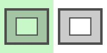 | Vaciado rectangular |
Vaciado circular | |
 | Vaciado elíptico |
Vaciado rectangular
Cuando este modo está activado, la vista previa del vaciado rectangular se muestra directamente en la vista previa del mecanizado, resaltada en verde claro. Las dimensiones y la posición del vaciado dependen de los parámetros predeterminados, que el usuario puede modificar.

Parámetros del vaciado rectangular
El siguiente panel permite configurar el vaciado.

Offset O | Distancia entre el borde del vaciado y el lado de referencia. |
Offset central D | Distancia desde el lado paralelo hasta el centro del vaciado. |
Altura H | Altura del vaciado. |
Anchura W | Anchura del vaciado. |
Ejecución
Es posible aplicar el mecanizado pulsando el botón situado a la izquierda del corte correspondiente en la lista de polígonos.
Un icono rojo con una «X» indica que el mecanizado no puede aplicarse al corte deseado.
Al confirmar, se añade un polígono interno tanto en la representación gráfica como en la lista.

Vaciado circular
Cuando este modo está activado, la vista previa del vaciado circular se muestra directamente en la vista previa del mecanizado, resaltada en verde claro. Las dimensiones y la posición del vaciado dependen de los parámetros predeterminados, que el usuario puede modificar.

Parámetros del vaciado circular.
El siguiente panel permite configurar el vaciado.

Offset O | Distancia entre el borde del vaciado y el lado de referencia. |
Offset central D | Distancia desde el lado paralelo hasta el centro del vaciado. |
Radio R | Radio |
Ejecución
Es posible aplicar el mecanizado pulsando el botón situado a la izquierda del corte correspondiente en la lista de polígonos.
Un icono rojo con una «X» indica que el mecanizado no puede aplicarse al corte deseado.
Al confirmar, se añade un polígono interno tanto en la representación gráfica como en la lista.

Vaciado elíptico
Cuando este modo está activado, la vista previa del vaciado elíptico se muestra directamente en la vista previa del mecanizado, resaltada en verde claro. Las dimensiones y la posición del vaciado dependen de los parámetros predeterminados, que el usuario puede modificar.

Parámetros del vaciado elíptico.
El siguiente panel permite configurar el vaciado.
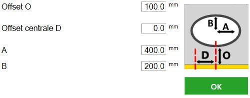
Offset O | Distancia entre el borde del vaciado y el lado de referencia. |
Offset central D | Distancia desde el lado paralelo hasta el centro del vaciado. |
A | Valor correspondiente al semieje mayor del vaciado elíptico. |
B | Valor correspondiente al semieje menor del vaciado elíptico. |
Ejecución
Es posible aplicar el mecanizado pulsando el botón situado a la izquierda del corte correspondiente en la lista de polígonos.
Un icono rojo con una «X» indica que el mecanizado no puede aplicarse al corte deseado.
Al confirmar, se añade un polígono interno tanto en la representación gráfica como en la lista.
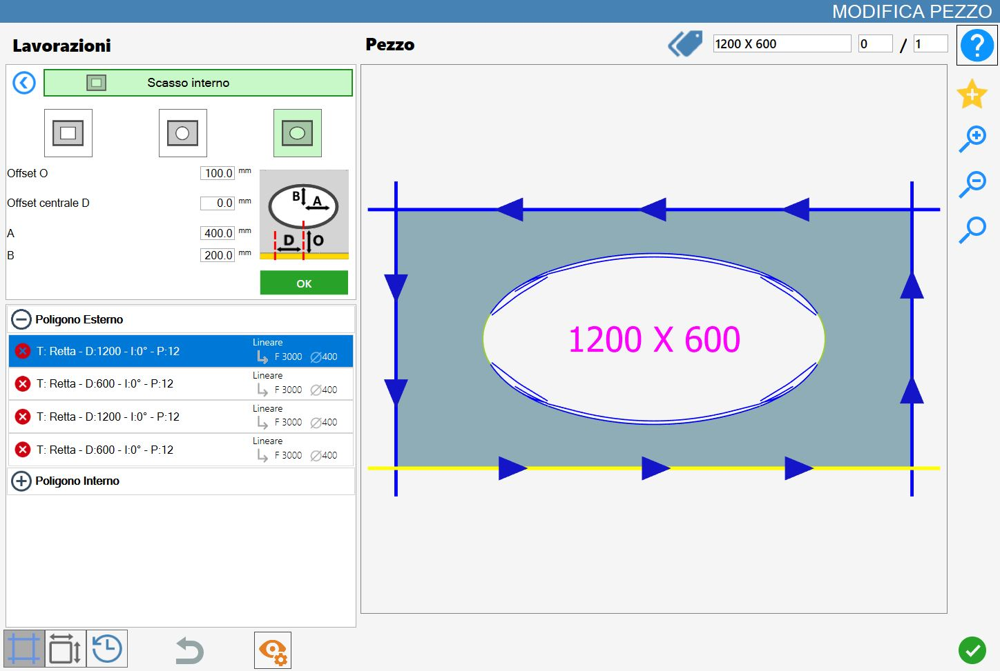
Opcional: orificios para grifos
Al pulsar el botón situado a la izquierda del botón OK puede activarse la opción de orificios para grifos; esta opción crea orificios adicionales al orificio central principal y hace que aparezcan algunos parámetros que deben configurarse.

Si el valor del diámetro del orificio para grifo es igual o inferior al valor del radio máximo del orificio, los orificios para grifos se crearán como orificios; si el valor del diámetro del orificio para grifo es mayor que el valor del radio máximo del orificio, los orificios para grifos se crearán como interrupciones internas.
Parámetros
El siguiente panel permite configurar el vaciado.

Número de agujeros | Indica cuántos orificios deben aplicarse al mecanizado actual sobre el corte seleccionado. |
Diámetro | Indica el diámetro de los orificios aplicados al mecanizado. |
Distancia entre orificios | Distancia entre los centros de los orificios. |
Distancia desde el vaciado | Distancia entre el centro del orificio y el borde del vaciado. |
Ejecución de los orificios para grifos
NOTA
Es posible aplicar el mecanizado pulsando el botón situado a la izquierda del corte correspondiente en la lista de polígonos.
Un icono rojo con una «X» indica que el mecanizado no puede aplicarse al corte deseado.
Al confirmar el mecanizado se añade, además de un nuevo polígono interno a la pieza, los orificios para grifos, tanto a nivel gráfico como en la lista de mecanizados añadidos del lado izquierdo:

Esta función utiliza la fresa montada sobre un corte recto o curvo seleccionado para realizar las ranuras de drenaje.

Parámetros
El resultado se define mediante los parámetros siguientes.
Número de ranuras | Indica cuántas ranuras de drenaje deben aplicarse al mecanizado actual sobre el corte seleccionado. |
 | Recalcular número |
Longitud | Indica hasta qué distancia penetrarán las ranuras en el corte. |
Distancia | Este valor representa la distancia entre las ranuras y tiene en cuenta el diámetro de la herramienta montada. |
Distancia inicial | Este valor define la distancia entre los vértices de las ranuras interiores de la pieza, regulando el espacio vacío que las separa. |
Alargamiento interior | Indica hasta qué distancia se extenderán las ranuras más allá del corte de referencia. |
Profundidad inicial | Penetración en el material en el punto inicial de la ranura de drenaje. |
Profundidad final | Penetración en el material en el punto final de la ranura de drenaje. |
Tipo de ranuras en arcos | Para las ranuras sobre curvas hay tres modos disponibles, que se ilustran a continuación. |
Espesor de corte | Para las ranuras insertadas en modo disco está disponible la variable de espesor de corte. |
Solapamiento del goterón | Para las ranuras insertadas en modo relleno se puede modificar el porcentaje. |
Recalcular número
Al pulsar el botón situado a la derecha del número de ranuras, el corte seleccionado se rellena con el mayor número posible de ranuras en función del valor de los demás parámetros.
En la siguiente imagen de ejemplo se puede observar el resultado del relleno de ranuras, en comparación con la primera imagen al inicio del capítulo.

Modo de inserción de ranuras
Estas son las opciones de inserción de las ranuras:
 | Inserción por número |
 | Inserción por relleno |
 | Modo disco |
 | Modo fresa |
Modo de ranuras en arcos
Cuando se selecciona un corte curvo de un polígono, se muestra un nuevo parámetro que permite elegir uno de tres valores:
 | Radiales |
 | Alineación con el arco |
 | Alineación con la tangente |
Modo 1: Radiales
En este modo, las ranuras comparten un punto de origen y son perpendiculares a la tangente correspondiente en el corte curvo seleccionado.

Modo 2: Alineación con el arco
En este modo, las ranuras son paralelas entre sí y están alineadas con el arco tanto en la distancia como en el alargamiento interior.

Modo 3: Alineación con la tangente
En este modo, las ranuras son paralelas entre sí y están alineadas con el arco en el alargamiento interior, mientras que se prolongan hasta alcanzar la tangente situada a la distancia especificada por el valor de longitud.

Ejecución del mecanizado
Es posible aplicar el mecanizado pulsando el botón situado a la izquierda del corte correspondiente en la lista de polígonos.
Un icono rojo con una «X» indica que el mecanizado no puede aplicarse al corte deseado.
Una vez obtenido el resultado deseado, que se visualiza y actualiza constantemente en la vista previa del mecanizado, el operador puede confirmar la operación pulsando el botón verde «OK», situado justo debajo de los parámetros configurados.
Las ranuras mostradas en la vista previa se aplicarán al corte seleccionado: su color pasará a verde oscuro, tanto en la vista previa como posteriormente en el área de trabajo, para indicar que se han aplicado.

La lista de cortes situada en el lado izquierdo también se actualizará según el nuevo mecanizado aplicado y los parámetros de las ranuras.
Es posible aplicar varios mecanizados de este tipo a un único corte, siempre que sus parámetros no se repitan.
Esta función permite convertir cualquier pieza en su forma rectangular de envolvente máxima, es decir, el rectángulo más pequeño capaz de contenerla por completo.
La interfaz de esta función presenta un aspecto similar a la siguiente imagen:
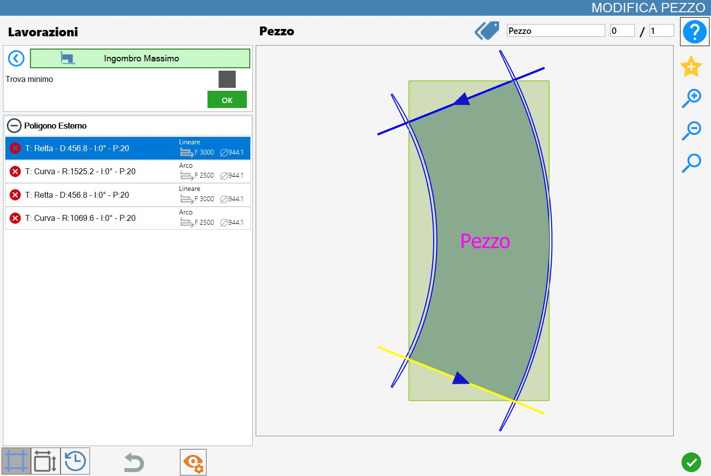
Parámetros
El siguiente parámetro puede activarse haciendo clic en la casilla situada a su derecha.
Buscar mínimo | Esta función permite calcular la envolvente mínima de la pieza sobre la superficie de la losa, optimizando su posicionamiento. |
Ejecución del mecanizado
Parámetro desactivado
Al hacer clic en el botón «OK», la pieza se convertirá en su versión rectangular.
/2.0-20250630-112001.png)
Parámetro activado
Al hacer clic en la casilla y, a continuación, en el botón «OK», se aplicará el mecanizado a la pieza:
Esta función permite al operador voltear horizontal y/o verticalmente la pieza seleccionada.

Parámetros
 | Espejo horizontal |
 | Espejo vertical |
Ejecución del mecanizado
Es posible aplicar simultáneamente el volteo horizontal y vertical, o solo uno de ellos.
Por tanto, pueden obtenerse tres resultados:
Solo reflejo horizontal | Solo reflejo vertical | Reflejo horizontal y vertical |
 | ||
 |  |  |
La función Nesting sirve para colocar de forma automática y optimizada las piezas dentro del perímetro de la losa.

Cómo utilizar la función
Para utilizar esta función es necesario crear una lista de piezas y delimitar el perímetro en el que se desean insertar.
Después, pulse el botón: el programa colocará automáticamente las piezas dentro del perímetro de la losa.
Las piezas se insertan en la losa teniendo en cuenta el uso del sistema de manipulación del material con ventosas para resolver las colisiones entre las piezas y considerando los defectos marcados en la propia losa.
Si la solución encontrada no resulta satisfactoria, es posible volver a pulsar el botón para aplicar de nuevo el Nesting y buscar una configuración distinta.
El programa eliminará todas las piezas presentes en el área de trabajo para poder ejecutar el Nesting.
La función Nesting coloca las piezas siguiendo distintas lógicas de inserción; por este motivo, cada vez que se pulsa el botón el programa modifica la disposición de las piezas, hasta un máximo de 4 soluciones (en el quinto intento se vuelve a proponer la primera solución).
El programa coloca las piezas de 4 formas distintas para permitir al usuario comparar y decidir la mejor disposición.
Algunos ejemplos
A continuación se muestran algunos ejemplos de uso de la función Nesting.
Puede utilizarse para colocar más rápidamente piezas de forma sencilla.

Esta función encuentra la disposición y la combinación de piezas que permite llenar la mayor superficie posible de la losa.
Nesting no inserta ninguna pieza dentro de las áreas que deben evitarse de la losa.

Es posible trabajar con perímetros de losa de cualquier forma.

Si hay varios perímetros, Nesting coloca las piezas en cada uno de ellos.

El uso del Nesting automático es especialmente útil cuando hay muchas piezas que procesar y las distintas combinaciones ya no pueden gestionarse fácilmente de forma manual.
En función de los parámetros configurados puede haber distintas soluciones. Estas se muestran en pantalla y el operador puede elegir la configuración preferida.
/0.00.png)
Botones
/0.04.png) | Añadir |
/0.05.png) | Eliminar |
/0.06.png) | Modificar |
/0.07.png) | Ejecución |
Modificar configuración
El Nesting automático permite personalizar los parámetros utilizados para calcular el posicionamiento de las piezas dentro del área de trabajo asociado a una configuración.
De hecho, según el tipo de piezas que se deban procesar, puede haber estrategias mejores y más eficientes.
/0.11.png)
Nombre | Nombre de la configuración que aparece en la lista. |
Distancia a la losa | Distancia que las piezas deben mantener respecto al borde de la losa cuando se posicionan. |
N.º de soluciones entre las que buscar | Número de soluciones calculadas por el Nesting. De todas las calculadas se selecciona la mejor. |
N.º de pruebas de desplazamiento | Número de pruebas realizadas desplazando la pieza si no cabe en el perímetro de la losa. |
Valor de desplazamiento | Valor que se utiliza para desplazar la pieza e intentar introducirla dentro del perímetro de la losa. |
N.º de intentos en la misma losa | Número de intentos para introducir la pieza dentro del mismo perímetro en caso de que no quepa. |
Timeout de cálculo de soluciones | Tiempo máximo permitido para calcular cada solución individualmente. |
Usar orden de la lista | Obliga a intentar posicionar las piezas dentro del perímetro siguiendo el orden en el que aparecen en la lista de piezas. |
Usar orden personalizado | Permite elegir el orden en el que se intentarán posicionar las piezas dentro del perímetro de la losa en función de algunas de sus propiedades. |
Forzar pieza antes de pasar a la siguiente | Permite elegir si se intenta posicionar la pieza en distintas ubicaciones dentro del perímetro de la losa o si se pasa a colocar la siguiente sin más intentos. |
Punto de inicio fijo | Permite elegir el punto del perímetro desde el que se empezarán a insertar las piezas. |
Fijar modo filas-columnas | Permite elegir si, durante la inserción de las piezas, debe mantenerse una lógica para disponerlas por filas, por columnas o de forma aleatoria. |
Modo de rotación de la pieza | Permite elegir la lógica con la que se pueden girar las piezas durante las pruebas de inserción dentro del perímetro de la losa. |
Usar rectángulo interior máximo | Si está habilitado, las piezas se insertarán dentro del rectángulo de mayor área contenido en el perímetro. |
Activar Deep Nesting | Si está deshabilitado, las piezas se insertan en la losa de forma que se optimice el uso del sistema de manipulación del material con ventosas para resolver las colisiones. |
Ejecución del Nesting
Al pulsar la flecha azul situada junto a cada elemento de la lista, se calculará el Nesting utilizando esa configuración.
En la sección de la derecha se mostrará una vista previa del resultado. Se muestra la disposición de las piezas dentro del perímetro y el porcentaje de área de la losa cubierto por las piezas.
/0.08.png)
Si la disposición de las piezas no resulta satisfactoria, puede pulsarse de nuevo la flecha azul para recalcular el resultado.
Después de ejecutar todas las configuraciones de Nesting, los resultados se ordenan mostrando primero los que permiten ocupar la mayor superficie de la losa.
/0.09.png)
Una vez elegida la configuración preferida, pulse el botón de confirmación y las piezas se posicionarán sobre la losa según la disposición elegida. El operador puede seguir modificando la posición de las piezas en el área de trabajo.
/0.10.png)
El operador puede modificar el posicionamiento de las piezas sobre el banco mediante la interacción en el área de trabajo.

Funciones
Selección múltiple | |
 | Seleccionar todo |
 | Eliminar piezas |
 | Mover piezas |
 | Girar piezas |
 | Deshacer operación |
 | Magnetizar las piezas |
 | Corte inclinado |
Modificar offset de pieza |
Seleccionar las piezas
Para seleccionar una pieza, pulse en su interior. El fondo de las piezas será azul claro cuando no estén seleccionadas y rojo cuando estén seleccionadas.

Selección múltiple
Al pulsar el botón se activa el modo de selección múltiple. En este modo se podrán seleccionar varias piezas simultáneamente. Para deseleccionar una pieza, pulse dentro de un perímetro ya seleccionado.

Seleccionar todas las piezas
Con este botón es posible seleccionar o deseleccionar simultáneamente todas las piezas presentes en el área de trabajo.

Eliminar las piezas
Al pulsar el botón, las piezas seleccionadas se retiran del área de trabajo y se vuelven a insertar en la lista de piezas para que estén disponibles posteriormente.

Mover las piezas
Para mover la pieza seleccionada, mantenga pulsado dentro del perímetro y arrástrela por el área de trabajo.
Como alternativa, es posible utilizar el panel de desplazamiento con flechas direccionales.

Esta función se aplica a todas las piezas seleccionadas. Por tanto, es posible mover varias piezas simultáneamente.
Botones
 | Flechas direccionales |
Desplazamiento a lo largo del eje del lado |
Mover las piezas a lo largo de los ejes clásicos
Se desea aplicar a la pieza un desplazamiento de 1500 mm hacia la izquierda.


Mover las piezas a lo largo del eje del lado
Se desea aplicar a la pieza un desplazamiento de 1500 mm hacia la izquierda respecto al eje del lado de la pieza.
Para ello, debe activarse el botón correspondiente.


Girar las piezas
Para girar las piezas seleccionadas, mantenga pulsado fuera del perímetro y arrástrelas por el área de trabajo.
Como alternativa, es posible utilizar el panel de rotación con ángulos determinados.

Esta función se aplica a todas las piezas seleccionadas. Por tanto, es posible girar varias piezas simultáneamente.
Botones
 | Rotación horaria |
Rotación antihoraria | |
 | Rotación 90_ |
Aplicar rotación
Se desea aplicar a la pieza una rotación de 45 grados en sentido horario.


Deshacer operación
Esta función sirve para deshacer la última operación realizada.
Por ejemplo, si el operador elimina una pieza por error, pulsando este botón puede volver al estado anterior a la eliminación de la pieza.
No existe un historial de las modificaciones realizadas, pero si se pulsa varias veces el botón se deshacen varias operaciones.


Esta función permite alinear los lados de piezas diferentes.

Arrastre las piezas sobre el área de trabajo.
Al mover una pieza cerca de otra, los lados próximos se vuelven amarillos, como se muestra en la imagen siguiente:
Si se suelta la pieza, quedará perfectamente adherida al lado de la otra pieza:

Si los cortes no son paralelos, la pieza se gira hasta quedar paralela al corte.
Alinear dos cortes
Es posible utilizar el imán para alinear dos cortes.
Para ello, seleccione primero el corte que desea mover y, a continuación, el corte con el que desea magnetizar la pieza.
El primer corte se desplazará hasta quedar paralelo al segundo corte seleccionado.
Si los cortes no son paralelos, la pieza se gira hasta quedar paralela al corte.


Alineación con cortes de destensado
En este modo es posible alinear los cortes de una pieza con los cortes de destensado de una losa.


Alineación con referencias láser
Con el mismo procedimiento es posible magnetizar los cortes con las referencias del láser, tanto de línea como de cruz.
En el caso del láser de línea, el lado seleccionado se alinea con la referencia.


En el caso del láser de cruz, la pieza se desplaza para hacer coincidir la referencia del láser con el vértice más cercano del corte seleccionado.


Mediante esta función, el operador puede aplicar bordillos o inclinar un lado de la pieza seleccionada.
Botones
 | Dirección de escuadra positiva |
 | Dirección de escuadra negativa |
 | Ángulo entre la hipotenusa y el lado Y - Lado Y |
 | Hipotenusa - Ángulo entre la hipotenusa y el lado Y |
Hipotenusa - Lado Y | |
 | Lado X - Ángulo entre la hipotenusa y el lado Y |
 | X e Y son proporcionados por el usuario |
 | Lado X - Hipotenusa |
Ejecución del mecanizado
Aplicamos un corte inclinado de _45_ a la pieza seleccionada.
Seleccione el botón con el signo _ e introduzca el número 45 en el campo inferior.

Seleccione el lado de la pieza al que desea aplicar este corte inclinado; una vez seleccionado, el corte inclinado se crea automáticamente.

Esta modificación no se aplica a las piezas de la lista que pertenecen a la misma fila que la pieza modificada.
Aplicamos un corte con la longitud de los lados pulsando su botón:

Después de pulsar el botón, el resultado es el siguiente:

Para cambiar el modo de corte, basta con pulsar el botón seleccionado y este irá cambiando de un modo a otro.
Comandos rápidos
Al hacer clic con el botón derecho del ratón sobre el corte de una pieza dentro del área de trabajo, aparece una ventana con comandos que permiten modificar su inclinación.

Se abre un pequeño panel desde el que pueden modificarse las dimensiones de una pieza.
Botones
 | Imán de dimensiones |
 | Anchura |
 | Altura |
Cantidad de alargamiento | |
 | Aplicar modificación |
 | Step touch |
Ejecución de los mecanizados
Alargamiento de la pieza
Es posible modificar el offset de un lado de la pieza introduciendo un valor en el campo «cantidad de alargamiento».
Un valor positivo determina un aumento del área, mientras que un valor negativo determina una reducción.
Seleccione el lado al que desea aplicar el offset y confirme la operación mediante el botón situado a la derecha del campo de entrada.
Ejemplo de pieza rectangular


Ejemplo de pieza no rectangular


Step touch
Es posible modificar el offset de un lado de la pieza seleccionada configurando el valor «Step touch» y arrastrando el lado directamente en el viewer.

El lado seleccionado podrá desplazarse a distancias definidas por el valor «Step touch»; la pieza se reconstruirá cada vez si la modificación del offset es posible.

Redimensionamiento
Redimensionamos una pieza arrastrando su lado hacia el de otra pieza.

Haga clic en el lado de la pieza que desea redimensionar y arrástrelo hacia el lado de la otra pieza de referencia.

Mediante esta función es posible guardar el estado de la losa y de las piezas creadas.

Botones
Guardar |
Cómo guardar un estado
Una vez colocadas las piezas en el área de trabajo, es posible acceder al panel para guardar el estado.

Elija el nombre con el que desea guardar el archivo en el cuadro de texto situado en la parte superior.
Confirme la elección con el botón guardar.
Desde la tercera pantalla de Parametrix también es posible guardar el estado de un mecanizado después de programar los cortes que deben realizarse en la losa.
Guardar como DXF (Opcional)
Esta función permite guardar el estado de la losa y de las piezas que contiene en un archivo DXF.

Esta función permite cargar un mecanizado guardado anteriormente en Parametrix.

Lista de piezas
En la sección izquierda se encuentra la lista de archivos de estado que pueden cargarse.
Botones
 | Ordenar por fecha |
 | Ordenar por nombre |
 | Memoria USB |
 | Carpeta de trabajo |
 | Explorar carpetas |
 | Eliminar archivo |
 | Buscar archivo |
Vista previa
En esta sección se muestra una vista previa del archivo seleccionado de la lista.

Debajo de la vista previa se muestran los parámetros de la losa y de las herramientas del archivo seleccionado y de la máquina, situados respectivamente en la sección superior e inferior.

Para abrir completamente un mecanizado, los parámetros del archivo deben ser idénticos a los parámetros de la máquina.
En caso contrario, los parámetros del archivo que difieren de los de la máquina se resaltan en rojo.
Si los parámetros no son iguales, el mecanizado se abre de forma parcial, solo con la disposición de las piezas. Un mensaje advierte al usuario de que no pueden ejecutarse modificaciones en los cortes.

Otros botones
 | Slab Matching |
 | Cargar estado |
Cómo cargar un estado
Desde la página principal, acceda al panel para cargar un estado.
A continuación, seleccione el archivo correspondiente al mecanizado que desea reproducir.
Tras la confirmación, se crearán las piezas y se insertarán en el área de trabajo con todas las operaciones que se les hayan aplicado.

Del mismo modo, es posible cargar un mecanizado programado anteriormente con todas las operaciones realizadas.

Esta función se utiliza para volver a cargar en la máquina un mecanizado guardado anteriormente.

Importar DXF (Opcional)
Esta función permite cargar el estado de un mecanizado guardado en un archivo DXF.

Importación de los cortes de recorte desde el layout DXF
Ahora es posible importar en Parametrix una losa con sus respectivos cortes de recorte, dibujándolos en una capa específica del archivo DXF.
El nombre de la capa dedicada a los cortes de recorte debe definirse junto con un técnico Donatoni. Una vez configurado, no podrá modificarse.
Dentro de esta capa, cada corte de recorte debe representarse mediante una línea.
Durante la creación del archivo DXF deben respetarse las siguientes reglas:
debe estar presente el perímetro de la losa;
el perímetro de la losa debe ser rectangular;
los lados del perímetro deben ser horizontales o verticales y no deben estar girados;
cada línea de recorte debe ser paralela a uno de los lados del rectángulo;
para cada lado debe haber como máximo una línea de recorte;
si se dibujan varias líneas para el mismo lado, Parametrix utilizará únicamente la más cercana al borde.

Para importar el archivo, abra en Parametrix la página Importación de layout desde DXF y seleccione el archivo deseado.

Opciones disponibles
En la pantalla de selección de archivos es posible modificar algunas opciones mediante los botones situados debajo de la vista previa, en el lado derecho de la pantalla.
 | Modo automático |
 | Modo imán |
Distancia del imán |
Ejemplos
Las imágenes muestran un archivo DXF que contiene el perímetro de la losa, las piezas y los cortes de recorte, además del resultado obtenido tras la importación en Parametrix.
Esta función permite al operador cargar un proyecto de corte preparado en la oficina y adaptarlo a la posición y a las dimensiones reales de la losa presente en la máquina.

Botones
 | Offset del eje X |
 | Offset del eje Y |
Rotación | |
Flechas de desplazamiento direccional | |
Rotación horaria/antihoraria | |
 | Restablecer posicionamiento |
 | Slab Matching automático |
 | Mostrar/Ocultar piezas |
Cómo utilizar Slab Matching
El operador puede planificar en la oficina el proyecto de corte de una losa tomando como referencia una foto realizada desde el caballete y guardarlo.
Después de tomar una foto de la losa en el banco de trabajo, el operador de la máquina puede cargar el archivo del proyecto guardado en la oficina utilizando la función Slab Matching.

En la ventana que se abre se muestra la foto tomada del banco de trabajo y la vista previa del perímetro de la losa programada en la oficina.
Los elementos que aparecen en pantalla representan:
Azul | Perímetro de la losa programada en la oficina. |
Fucsia | Perímetro de las piezas dentro de la losa programada en la oficina. |
Rojo | Posición original de la losa programada en la oficina. |
Verde | Posición de la losa presente en el banco de trabajo. |
El operador puede desplazar y/o girar el perímetro dentro del área de trabajo hasta la posición correcta arrastrándolo, usando las flechas o mediante el botón de alineación automática.
Una vez colocado correctamente el perímetro, pulse confirmar y las piezas se mostrarán posicionadas, como en el archivo, sobre la losa real.

Este panel permite visualizar cierta información relativa al mecanizado y a las herramientas montadas en la máquina.
Además, es posible acceder rápidamente a la pantalla de estadísticas.
Información
 | Información de la losa |
Información del disco | |
 | Información de la segunda herramienta |
 | Nombre del mecanizado |
Botones
Estadísticas |
Permite comprobar la posición de la pieza en el área de trabajo respecto a su posición en la máquina. Al activar «Máquina sobre corte», se selecciona un corte en la pantalla y la máquina se mueve a la posición correspondiente.
Esta operación resulta útil cuando se desea comprobar si un corte está dentro del material.

Ejecución
Al pulsar el botón se muestra la máquina en el área de trabajo.

Al pulsar uno de los cortes, la máquina se moverá para colocar el centro del disco en el extremo del corte más cercano al punto seleccionado.
Modo avanzado (Opcional)
El modo avanzado permite colocar distintos elementos de la máquina en el punto seleccionado.
Al activar la función aparecerá el siguiente panel:

 | Alineación del centro del disco |
 | Alineación del láser de cruz |
 | Alineación de la segunda herramienta |
 | Alineación de tool plus |
El cuarto y último botón del pequeño panel solo será visible si la máquina dispone de «tool plus».
Alineación del centro del disco
Equivale al modo estándar. La máquina se desplaza para colocar el centro del disco en el extremo del corte más cercano al punto seleccionado.

Alineación del láser de cruz
La máquina se desplaza para colocar el puntero del láser de cruz en el extremo del corte más cercano al punto seleccionado.
Alineación de fresa o broca hueca
La máquina se desplaza para colocar el centro de la segunda herramienta montada en la máquina, ya sea fresa o broca hueca, en el extremo del corte más cercano al punto seleccionado.

Alineación de tool plus
La máquina se desplaza para colocar el centro de la herramienta montada en el tool plus en el extremo del corte más cercano al punto seleccionado.

Una vez colocadas las piezas en el área de trabajo, es posible acceder a la pantalla destinada a gestionar el orden de corte de las piezas.
Botones
La disposición de las piezas en la lista de la derecha indica el orden en el que se cortan.
Con los botones inferiores es posible modificar este orden o insertar una pausa en la ejecución de las operaciones entre una pieza y otra.
 | Desplazamiento con flechas |
 | Desplazamiento a la posición deseada |
 | Selección del orden desde el área de trabajo |
 | Pausa |
Desplazamiento con flechas
Con estos botones es posible desplazar la pieza seleccionada a la posición superior o inferior.
En el siguiente ejemplo se desea desplazar la pieza situada en la segunda posición y colocarla en la parte superior de la lista.
Antes del desplazamiento | Después del desplazamiento |
 |  |
Desplazamiento a la posición deseada
Esta función permite desplazar el elemento seleccionado a la posición de la lista indicada en el cuadro de texto adyacente.
En este ejemplo se desea que la última pieza de la lista pase a ocupar la primera posición. Será necesario introducir el valor «1» en la casilla y después pulsar el botón.
Antes del desplazamiento | Después del desplazamiento |
 |
Selección del orden desde el área de trabajo
Mediante esta función es posible elegir el orden de corte de las piezas directamente desde el área de trabajo.
Al pulsar el botón, el programa escribe en cada pieza un número que indica la posición que ocupa en la lista.

Para cambiar el orden, haga clic secuencialmente dentro de la pieza que se desea como primera, después en la segunda, y así sucesivamente.
Una vez terminado, vuelva a pulsar el botón para validar la elección realizada.
Pausa
Durante la ordenación de corte de las piezas es posible establecer una pausa entre la ejecución de las operaciones de una pieza y la siguiente.
El programa realizará todos los cortes de las piezas anteriores a la pausa, después detendrá la máquina y esperará el comando Start del operador.

La pausa se inserta después de la ejecución de la pieza seleccionada, que en este caso es la primera de la lista.
Mediante el tercer botón de la parte superior derecha se accede a la pantalla de optimización y gestión de los cortes.

Barra inferior
En la sección inferior se muestran algunos botones que permiten realizar operaciones sobre los cortes.

Botones
 | Palpado de losa |
Creación de programa ISO | |
 | Movimiento manual |
 | Movimiento automático |
Selección múltiple | |
 | Corte individual |
Lavado del banco | |
 | Operaciones sobre los cortes |
 | Simulación de corte |
Los cortes que debe realizar la máquina se muestran en esta lista.
Mediante la lista de cortes, el operador puede:
Cambiar el orden de ejecución de los cortes.
Modificar las características de un corte.
Insertar pausas entre un corte y otro.

Elementos de la lista

 | Activar/Desactivar corte |
 | Tipo de corte |
 | Tipo de mecanizado |
Funciones
La disposición de los cortes en la lista de la derecha indica el orden en que se cortan.
Con los botones inferiores es posible modificar este orden o insertar una pausa en la ejecución de las operaciones entre un corte y otro.
Desplazamiento con flechas | |
 | Desplazamiento a la posición deseada |
 | Selección del orden desde el área de trabajo |
 | Pausa |
 | Eliminar corte |
 | Modificar corte |
 | Propiedades adicionales de la pieza |
Al final de la lista también se muestra:
 | Estimación del tiempo de corte |
La estimación del tiempo de corte se actualiza cada vez que se realiza una operación sobre los cortes.
Desplazamiento con flechas
Con estos botones puede desplazar el corte seleccionado a la posición superior o inferior.
En el siguiente ejemplo se desea desplazar el corte situado en quinta posición una posición hacia arriba.
Antes del desplazamiento | Después del desplazamiento |
 |
Desplazamiento a la posición deseada
Esta función permite desplazar el elemento seleccionado a la posición de la lista indicada en el cuadro de texto adyacente.
En este ejemplo se desea colocar el quinto corte de la lista en la segunda posición. Es necesario introducir el valor «2» en el campo y, a continuación, pulsar el botón.
Antes del desplazamiento | Después del desplazamiento |
|  |
Selección del orden desde el área de trabajo
Esta función permite elegir el orden de los cortes directamente desde el área de trabajo.
Al pulsar el botón, el programa escribe en cada corte un número que indica la posición que ocupa en la lista.

Para cambiar el orden, haga clic secuencialmente en el corte que desea colocar primero, después en el segundo y así sucesivamente.
Una vez terminado, vuelva a pulsar el botón para validar la elección realizada.
Pausa
Es posible insertar una pausa entre la ejecución de un corte y el siguiente.
El programa realizará todos los cortes anteriores a la pausa, después detendrá la máquina y esperará el comando Start del operador.
La pausa se inserta siempre después de ejecutar el corte seleccionado.
Puede utilizarse, por ejemplo, para cambiar de herramienta.
Eliminar corte
Una vez pulsado el botón, aparece un icono de goma junto a cada elemento de la lista.
Pulse un corte para eliminarlo definitivamente.

Este panel permite al operador modificar algunas características de un corte.
Botones
En la esquina superior izquierda puede modificarse la activación del corte.
 | Activar/Desactivar corte |
Según el tipo de corte seleccionado, se mostrarán versiones diferentes de este panel.
Cortes con disco
Al seleccionar un corte realizado con disco, lineal o en arco, se muestra el siguiente panel:

Los cortes realizados con disco se caracterizan por un punto inicial y un punto final. Las flechas definen su sentido de recorrido, desde el inicio hasta el final.

En la tabla siguiente se muestran los botones con los que el operador puede modificar las características del corte:
 | Invertir sentido del corte |
 | Cantidad de alargamiento |
Calcular eliminación de material | |
Alargar corte | |
 | Acortar corte |
 | Alargar extremo inicial hasta el borde de la losa |
 | Alargar extremo final hasta el borde de la losa |
 | Alargar cortes cortos |
También se muestran algunos datos relativos a la ejecución del corte.
 | Penetración |
 | Velocidad porcentual |
 | Inclinación |
Modificar el corte desde el área de trabajo
Al seleccionar un corte en el área de trabajo y pulsar el botón derecho del ratón, aparece una ventana para modificar rápidamente el corte.

Los botones corresponden a las funciones ya enumeradas. Se alarga el extremo del corte más cercano al punto en el que se pulsó el botón.
Cortes en arcos interiores
Para cortes en arcos cuya curvatura está orientada hacia el interior de la pieza, es necesario tener en cuenta que la eliminación de material producida por el disco durante el mecanizado podría dañar el lado.
Por este motivo, estos cortes deben ejecutarse de forma diferente a los cortes exteriores.

Parametrix ofrece dos modos para cortar arcos interiores, seleccionables mediante el botón situado en la parte superior derecha.
 | Arco inclinado |
Arco desplazado |
De forma predeterminada, Parametrix recomienda configurar estos cortes en el modo «arco inclinado».
Si no se desea este modo, es necesario cambiar individualmente el modo de ejecución de cada corte.
Cada modo de mecanizado presenta ventajas e inconvenientes:
Los arcos inclinados permiten obtener un mejor acabado final, que requerirá menos trabajo manual para completarse.
Sin embargo, requieren un mayor esfuerzo por parte de la máquina, por lo que el mecanizado debe realizarse a velocidades reducidas y con más pasadas.Los arcos desplazados requieren menos esfuerzo de la máquina durante el mecanizado y, por tanto, pueden ejecutarse a velocidades más elevadas.
Por otro lado, la eliminación de material del disco provoca mayores daños en el material y también aumenta la cantidad de material que debe eliminarse durante el acabado manual.
Orificios y fresados
Los mecanizados como orificios y fresados permiten un número menor de modificaciones por parte del operador.

Está disponible información relativa a:
Penetración | |
 | Diámetro de la herramienta |
Rebajes y orificios en vértice
Los orificios en ángulo y los rebajes son mecanizados compuestos respectivamente por varios orificios y fresados. Si se selecciona uno de estos elementos, se muestra una lista de todos los cortes que lo componen.

El operador puede decidir activar o desactivar cada corte individualmente utilizando el botón de cada elemento de la lista, o actuar simultáneamente sobre todos los cortes del mecanizado mediante el botón superior.
Los botones que aparecen debajo de la lista permiten modificar el orden en el que se ejecutan los cortes individuales.
Desplazamiento con flechas | |
Desplazamiento a la posición deseada |
Además, el operador puede modificar la penetración del mecanizado mediante el campo inferior:
Penetración |
Esta función permite añadir un ciclo de palpado de la losa al inicio del programa de corte.
El ciclo permite medir el espesor real de la losa.
Ejecución de la función
Después de pulsar el botón, el programa pedirá al usuario que seleccione en el área de trabajo el punto de la losa en el que debe realizarse el palpado.

La posición del palpado se indica en pantalla mediante un símbolo fucsia.
Este procedimiento se inserta al inicio de la lista de cortes.

Esta función permite seleccionar varios cortes en el área de trabajo.

Botones
 | Seleccionar/deseleccionar cortes con disco |
 | Seleccionar/deseleccionar orificios |
 | Seleccionar/deseleccionar fresados |
 | Seleccionar/deseleccionar rebajes |
Selección desde el área de trabajo
Al pulsar el botón se activa el modo de selección múltiple. En este modo se pueden seleccionar varios cortes simultáneamente. Para deseleccionar un corte, haga clic sobre él dentro del área de trabajo o pulse el elemento correspondiente en la lista de cortes.
Seleccionar los cortes con disco
Este botón permite seleccionar simultáneamente todos los cortes del área de trabajo realizados con el disco.
Por ejemplo, cortes lineales, cortes en arcos y cortes inclinados.

Seleccionar los orificios
Este botón permite seleccionar simultáneamente todos los orificios del área de trabajo, incluidos los orificios en esquina.

Seleccionar los fresados
Este botón permite seleccionar simultáneamente todos los fresados del área de trabajo.
Incluyen fresados y ranuras de drenaje, pero no rebajes.
Seleccionar los rebajes
Este botón permite seleccionar simultáneamente todos los rebajes del área de trabajo.

Esta función permite dividir la losa y desplazar el material con las ventosas.

Botones
 | Manipulación manual |
 | Manipulación automática |
Manipulación manual
Mediante esta función, el operador puede dividir la losa utilizando cortes y desplazar el material hasta la posición deseada mediante las ventosas.
Según el número de cortes seleccionados, esta función presenta dos modos.
Modo de selección individual
Para realizar un desplazamiento mediante ventosas, es necesario seleccionar un corte con disco, lineal o en arco, y pulsar el botón.
El corte se prolonga hasta alcanzar el borde de la losa, cuando sea posible.
Si el corte seleccionado está inclinado, se añadirá automáticamente un corte lineal específico para poder dividir la losa.
A continuación se abre el siguiente panel, donde se pueden especificar la dirección, el sentido y la distancia del desplazamiento deseado.

En la sección derecha están disponibles los siguientes botones:
 | Desplazamiento direccional |
Seleccione una flecha en el área de trabajo o pulse uno de los botones de la derecha para decidir la dirección y el sentido del desplazamiento.
La losa se divide y se desplaza según el tipo de corte seleccionado.
La distancia de desplazamiento de la losa puede modificarse, en ambos casos, mediante el campo de texto situado debajo de los cuatro botones direccionales.
El corte seleccionado se coloca lo más arriba posible en la lista de cortes que deben ejecutarse. Inmediatamente después se realiza el desplazamiento mediante ventosas.
Modo de selección múltiple
El modo de selección múltiple permite elevar piezas de forma genérica. Para ello, es necesario seleccionar los cortes deseados para dividir la losa utilizando el modo de selección múltiple.

Una vez realizada la selección, pulse el botón para iniciar el procedimiento.
Los cortes seleccionados se prolongan, si es posible, para formar un recorrido continuo que pueda dividir la losa. Si uno o varios de los cortes seleccionados están inclinados, se sustituyen automáticamente por cortes no inclinados.
A continuación se abre el siguiente panel.

Después de elegir la parte de la losa que se debe desplazar, puede decidirse el desplazamiento arrastrándola sobre el área de trabajo o utilizando uno de los botones siguientes:
Paso | |
 | Desplazamiento a lo largo de los ejes |
 | Comprobación de colisión de cortes |
Restablecer posición original |
Al confirmar, los cortes seleccionados se colocan al principio de la lista de cortes que deben realizarse. Inmediatamente después se ejecuta el desplazamiento mediante ventosas.

El modo de selección múltiple permite elevar piezas de forma genérica y, por tanto, también piezas en voladizo.
La comprobación de la viabilidad del desplazamiento es responsabilidad del operador.
Reglas para una selección válida de los cortes
Para dividir correctamente la losa es necesario seguir algunas indicaciones para la selección de los cortes.
Los cortes seleccionados pueden ser cortes con disco, tanto líneas como arcos, fresados y orificios múltiples en esquina.
Los cortes seleccionados deben poder formar un recorrido que divida la losa en dos. No está permitido seleccionar cortes que formen un recorrido cerrado.
El programa prolonga automáticamente los cortes lineales con disco hasta encontrar una solución que permita dividir la losa. Los cortes en arco, los fresados y los orificios no se modifican automáticamente.
Teniendo esto en cuenta, se recomienda que el primer y el último corte del recorrido sean cortes lineales con disco.En presencia de ángulos interiores en los que la eliminación de material del disco no permite separar completamente el material, es necesario insertar fresados en vértice u orificios múltiples.
La penetración de los cortes seleccionados debe ser suficiente para poder separar la losa.
El primer y el último corte deben poder salir necesariamente de la losa.
Mensaje de operación no posible
Si el programa considera que la operación de manipulación no es posible, las causas pueden ser las siguientes:
Los cortes seleccionados no son suficientes para crear un recorrido que divida la losa en dos;
Los cortes seleccionados forman un recorrido cerrado;
Los cortes seleccionados no consiguen separar la pieza debido a la eliminación de material del disco;
El alargamiento de los cortes seleccionados dañaría otras piezas;
La penetración de al menos uno de los cortes seleccionados no es suficiente para separar la losa;
Manipulación automática
Mediante esta función, el programa intentará resolver automáticamente las situaciones en las que una o varias piezas del área de trabajo resulten dañadas por otros cortes.
El algoritmo analiza la disposición de los cortes y determina de forma autónoma cómo y dónde realizar los desplazamientos, optimizando la secuencia de las operaciones.

Sin embargo, es importante señalar que el cálculo automático no siempre puede gestionar todos los casos. En situaciones especialmente complejas, puede ser necesario intervenir manualmente para completar o corregir las operaciones de desplazamiento.
Modificar la posición de las ventosas
Durante esta fase, el operador puede modificar tanto la posición de agarre de las ventosas como la activación de las correspondientes zonas de vacío, para garantizar un agarre óptimo y seguro del material.
Para ello, seleccione el elemento «Mover» en la lista y pulse el botón de modificación de los cortes.

Los botones de este panel permiten al operador interactuar con las ventosas.
| Desplazamiento direccional |
 | Rotación de las ventosas |
 | Esquema del grupo de ventosas |
Esta función permite insertar manualmente cortes lineales con disco en el banco de trabajo.

Botones

 | Desplazamiento direccional |
 | Borrar |
 | Corte horizontal |
Corte vertical |
Ejecución de la función
Después de pulsar el botón, el programa pedirá al usuario que seleccione en el área de trabajo el punto inicial y el punto final del corte que desea añadir.
La posición de los extremos del corte puede modificarse seleccionándolos y arrastrándolos en el área de trabajo, o utilizando las flechas de desplazamiento direccional.

El operador puede establecer que el corte resultante se disponga horizontal o verticalmente.


Al confirmar, el nuevo corte se añade al final de la lista.

Es posible iniciar manualmente un ciclo de lavado del área, habilitar la adición automática de todo el banco y seleccionar una zona en la que realizar la limpieza.

Parámetros

 | Anchura |
 | Altura |
 | Crear área |
 | Mover |
 | Lavado de la pieza |
 | Limpiar banco |
 | Ciclo de lavado automático |
Modo de inserción de un ciclo de lavado
La adición de un ciclo de lavado implica insertar, dentro del área de trabajo, un rectángulo que indica la parte del banco que se someterá al lavado.
Es posible insertar varios ciclos de lavado; sus áreas también pueden solaparse parcial o completamente.
Cada nuevo ciclo de lavado se insertará al final de la lista de cortes, en el lado derecho.
Selección manual del área
Al pulsar el botón se habilita la posibilidad de añadir áreas de lavado personalizables.
A continuación se puede desplazar y redimensionar el área.

Después de modificar el área del ciclo de lavado según sea necesario, puede añadirse otra área de lavado pulsando de nuevo el botón.

Lavado de la pieza
Al habilitar este modo, el operador puede seleccionar una pieza. Después de la selección, el sistema genera automáticamente un área rectangular que encierra completamente la pieza seleccionada, como se muestra en el ejemplo siguiente:

Lavado completo del banco de trabajo
Al utilizar este modo, el sistema inserta automáticamente un corte denominado «Lavado del banco» en la lista de cortes y muestra su representación correspondiente en el área de trabajo.

Esta función permite aplicar ordenaciones y operaciones personalizadas a los cortes.

Operaciones disponibles
 | Ordenación por mecanizado |
Macro | |
 | Operaciones individuales |
 | Ordenar mecanizados al principio |
 | Ordenar mecanizados al final |
Ordenación según los cortes |
Orden de ejecución de los mecanizados
Permite al operador elegir el orden de ejecución de los cortes según el tipo de mecanizado utilizado.
La lista está compuesta por los mecanizados necesarios para ejecutar los cortes.
Cambiar el orden de los mecanizados también modifica el orden de los cortes de la lista.

Los tipos de mecanizado mostrados en esta lista corresponden a los asociados a los cortes presentes en el área de trabajo.
En función de ello, pueden mostrarse elementos diferentes.
Barra inferior
Los elementos de la lista pueden ordenarse mediante algunos botones de desplazamiento.
 | Mover |
 | Ir al principio/final |
Macro
Es posible definir y aplicar macros. Cada una permite al operador aplicar opciones avanzadas de ordenación a los cortes.
Al seleccionar una macro en la parte superior del panel, el operador puede visualizar todas las operaciones contenidas en ella.

Las macros disponibles para el operador pueden gestionarse en los parámetros del usuario.
En función de ello, pueden mostrarse elementos diferentes.
Botones
 | Aplicar operación |
Operaciones individuales
Algunas operaciones pueden aplicarse pulsando la flecha verde que aparece a la derecha de cada elemento de la lista.
Operaciones individuales disponibles
 | Mover automáticamente |
 | Todos los cortes fuera de la losa |
Ordenar por herramienta | |
 | Ordenar por tipo de mecanizado |
 | Acortar cortes con intersección |
Todos los cortes fuera de la losa
A continuación se muestra un ejemplo de este mecanizado antes de aplicarlo:
Y el resultado obtenido después de aplicarlo:
Acortar cortes con intersección
Esta operación permite al operador acortar los cortes que se intersectan entre sí para evitar dañar el interior de una pieza.
En la siguiente imagen de ejemplo hay 6 intersecciones entre los cortes de las piezas, indicadas en el área de trabajo mediante pequeños círculos de color azul claro:

La aplicación de esta operación acorta los cortes para evitar posibles intersecciones.

Operaciones individuales disponibles (Opcional)
La disponibilidad de algunas operaciones individuales puede configurarse en función de los siguientes opcionales.
Descargar pieza
Con la función Descargar pieza habilitada, estarán disponibles algunas operaciones individuales específicas:
Descargar piezas | |
Descargar todas las piezas con repetición | |
Descargar filigrana con repetición |
Doble disco
Con la función Doble disco habilitada, estarán disponibles algunas operaciones individuales específicas:
 | Alargar para doble disco |
| Verificar para doble disco |
Ordenar mecanizados al principio
El operador puede cambiar el orden de ejecución de los mecanizados y colocar en primer lugar uno de los mecanizados que aparecen en esta ventana.
Los tipos de mecanizado mostrados en esta lista corresponden a los asociados a los cortes presentes en el área de trabajo.
En función de ello, pueden mostrarse elementos diferentes.
Ordenar mecanizados al final
El operador puede cambiar el orden de ejecución de los mecanizados y colocar al final uno de los mecanizados que aparecen en esta ventana.

Los tipos de mecanizado mostrados en esta lista corresponden a los asociados a los cortes presentes en el área de trabajo.
En función de ello, pueden mostrarse elementos diferentes.
Ordenación según los cortes
Estas operaciones permiten cambiar el orden de los cortes de la lista según determinados criterios que dependen de su disposición en el área de trabajo.

Operaciones de ordenación según los cortes
 | Primero los cortes inferiores |
 | Primero los cortes superiores |
 | Primero los cortes de la derecha |
 | Primero los cortes de la izquierda |
 | Primero los cortes horizontales 0_ |
 | Primero los cortes verticales 90_ |
 | Primero los cortes con dirección |
 | Exterior-interior |
 | Interior-exterior |
Dentro del panel de parámetros de usuario, en la primera ventana de valores de usuario, se encuentra el elemento «operación activa», junto al que se muestra la operación activada por el operador. Para añadirla, modificarla o eliminarla, pulse el lápiz situado al lado; se abrirá la siguiente ventana:

Botones de la barra inferior
Botones para la gestión general de las macros
 | Activar/desactivar operaciones automáticamente |
 | Gestionar operaciones |
Botones para gestionar la lista de macros:
 | Añadir |
 | Eliminar |
 | Modificar nombre |
 | Copiar |
Botón para gestionar el contenido de una sola macro:
| Modificar operación |
Gestionar operaciones
Se abre la siguiente ventana, en la que puede elegirse si se activa o no una operación para cada uno de los cuatro tipos de operaciones que se ilustran a continuación (Estándar, Ordenación de mecanizados al principio, Ordenación de mecanizados al final y Ordenación según los cortes):

Añadir operación
Se abre la siguiente ventana, que permite configurar el nombre del nuevo mecanizado:

Una vez confirmado el nombre de la nueva macro, esta se añadirá al panel de la izquierda y estará inicialmente vacía:

Modificar operación
A continuación se muestra la ventana de modificación correspondiente a la operación seleccionada:

Botones de operaciones seleccionadas
 | Ordenación por mecanizado |
 | Operaciones estándar |
 | Ordenar mecanizados al principio |
 | Ordenar mecanizados al final |
 | Ordenación según los cortes |
Botones de gestión de las operaciones
 | Añadir/eliminar operación |
 | Mover ordenación |
Invertir orden de las operaciones (Opcional)
Puede activarse este opcional, que permite invertir el orden de las operaciones.
Por ejemplo, si se pulsan las siguientes operaciones:
Primero los cortes inferiores
Exterior-interior
Primero los cortes de la izquierda
El orden real de las operaciones es:
Primero los cortes de la izquierda
Exterior-interior
Primero los cortes inferiores
Esto se debe a que las posiciones se sobrescriben; para hacer que el orden de las operaciones sea cronológico existe este opcional.
Con él, en este caso, el orden de las operaciones es el siguiente:
Primero los cortes inferiores
Exterior-interior
Primero los cortes de la izquierda
Activación de una macro
Cuando la macro se ha creado y modificado según sea necesario, puede seleccionarse y activarse.
 | Habilitar macro deshabilitado |
 | Habilitar macro habilitado |
 | Macro activada |
Procedimiento de creación y carga de una macro
El primer paso consiste en asegurarse de que el botón de activación esté configurado en ON, para poder utilizar posteriormente la macro deseada.
A continuación, cree una nueva operación y asígnele un nombre; haga clic en la nueva operación, que ahora aparece en la lista, e inmediatamente después en el botón de modificación situado en el lado derecho del panel para acceder al panel que permite modificar la macro.
Para cada tipo de operación, seleccione las operaciones deseadas de la lista de la izquierda (Disponibles) y añádalas a la lista de operaciones seleccionadas. A continuación puede confirmar la configuración para visualizarla y gestionarla en el panel de operaciones.
La macro puede cargarse haciendo clic en el botón situado justo a la derecha del nombre de la macro.
A continuación se muestra un ejemplo de la macro denominada «operazione_1», que contiene 3 operaciones visibles a la derecha y aparece resaltada en verde con el símbolo correspondiente porque está en estado «cargada».
El primer paso consiste en asegurarse de que el botón de activación esté configurado en ON, condición necesaria para poder utilizar la macro deseada. Una vez activado, se procede a crear una nueva operación y a asignarle un nombre identificativo. Después de crearla, la operación aparecerá en la lista: deberá seleccionarla y hacer clic en el botón de modificación situado en el lado derecho del panel para acceder a la interfaz de configuración de la macro.
Dentro de esta interfaz, para cada tipo de operación, pueden seleccionarse los elementos deseados de la lista de la izquierda (etiquetada como «Disponibles») y añadirse a la lista de la derecha, que representa las operaciones seleccionadas. Una vez completada la selección, basta con confirmar la configuración para que sea visible y pueda gestionarse en el panel de operaciones.
La macro puede cargarse haciendo clic en el botón correspondiente, situado inmediatamente a la derecha del nombre asignado a la macro. A modo de ejemplo, considere la macro denominada «operazione_1»: incluye tres operaciones, visibles en el panel de la derecha, y aparece resaltada en verde con el símbolo correspondiente que indica su estado «cargada».

Esta pantalla permite supervisar en tiempo real el desarrollo del programa ISO que está ejecutando la máquina.
Vista previa
En la sección central de la pantalla se muestra en tiempo real el movimiento de la máquina sobre el área de trabajo.
Los cortes de la pieza que ya se han ejecutado se muestran en verde, mientras que los que aún deben realizarse mantienen su color original.
 | Nombre del mecanizado y tiempo empleado |
Motor
En esta sección pueden visualizarse algunas informaciones relativas a los motores de la máquina.

Motor | Motor del husillo principal. |
Motor externo | Motor de Tool Plus, si está presente. |
Es posible cambiar de panel informativo mediante los botones inferiores.
 | Panel informativo anterior/siguiente |
Para cada motor se muestra:
Consumo | Indica la corriente absorbida por el motor. |
Umbral de alarma | Indica el umbral de amperios a partir del cual se activa la alarma y se bloquea la rotación del motor. |
RPM | Indica el número de revoluciones del motor por minuto. |
Ejes
En esta sección se muestra información sobre los ejes de la máquina.

Real | Se muestran las coordenadas instantáneas correspondientes a la posición y orientación de los ejes de la máquina. |
Distancia restante | Se muestran las distancias de cada eje respecto a las coordenadas en las que termina el corte. |
Consumo | Se muestra el consumo de corriente eléctrica del motor de cada eje. |
Herramienta
En esta sección se muestran datos relativos a la herramienta utilizada para el corte actualmente en curso.

Nombre | Se muestran el tipo y el nombre de la herramienta utilizada durante el mecanizado. |
Feed | Velocidad de movimiento de la máquina a lo largo de la dirección de desplazamiento. |
Espesor | Penetración del corte que se está ejecutando en la losa. |
Comandos manuales
En caso de problemas durante la ejecución del mecanizado, es posible controlar algunas funciones de la máquina mediante comandos manuales.
Comandos manuales |

Agua
 | Encendido / Apagado del agua interna |
 | Encendido / Apagado del agua |
Ventosas
 | Activación / desactivación de ventosas |
VENTOSAS: SUBIR - Aparcamiento de ventosas | |
 | VENTOSAS: BAJAR - Preparar ventosas |
 | ELEVAR PIEZA: LIBERAR - Descarga de la pieza |
 | ELEVAR PIEZA: INICIAR - Elevación de la pieza |
  | SOPLADO - Mando de soplado |
  | VACÍO - Mando de la bomba de vacío |
Esta función permite obtener un renderizado del proyecto y ver en tiempo real el fondo que tendrán las piezas, de modo que puedan colocarse sobre las losas haciendo coincidir los dibujos creados por la piedra.
Botones
En la barra inferior de la pantalla principal de Parametrix se encuentra el botón para acceder a la función Book Match.
/1.1.png) | Book Match |
Modos de diseño
Existen dos modos para programar diseños de Book Match.
Easy Match | Diseñado para un mecanizado secuencial. |
Project Match | Diseñado para planificar trabajos de gran tamaño. |
Mediante la función Easy Match es posible ver, en tiempo real, el fondo que tendrán las piezas en la posición original en la que fueron diseñadas, desplazándolas sobre el banco de trabajo encima de una losa.
/0.00.png)
Botones
Después de pulsar el botón se abre el siguiente panel:
/image-20250623-092224.png)
/1.2-20250623-092621.png) | Vista lado a lado |
/1.3-20250623-092752.png) | Vista previa |
/1.4-20250623-092845.png) | Vista del banco |
/1.5-20250623-092940.png) | Guardar vista previa |
/1.6-20250623-093138.png) | Modificar vista previa |
Vista previa
Permite desplazar las piezas haciendo clic dentro del perímetro de la propia pieza; de este modo es posible posicionarla en la ubicación deseada con mayor precisión.
/0.01.png)
En la vista previa se muestran todas las piezas procedentes del archivo importado exactamente en la posición en la que fueron diseñadas.
El tamaño de la vista previa corresponde a escala 1:1 con el tamaño de las piezas diseñadas.
Las piezas añadidas al banco de trabajo adoptan el color de la losa, mientras que las que aún deben añadirse tienen un fondo uniforme.
Desde la vista previa es posible:
Añadir una pieza al área de trabajo haciendo clic dentro del área que se desea mecanizar.
Mover una pieza situada en el banco de trabajo.
Seleccionar una pieza en el banco de trabajo haciendo clic dentro de la pieza.
Eliminar una pieza de la vista previa seleccionando la goma situada debajo de la lista de piezas y, a continuación, seleccionando en la vista previa la pieza que se desea eliminar. En este caso, la pieza también se eliminará del banco y de la lista de piezas.
Vista del banco
Vista clásica del banco de trabajo de Parametrix. Permite desplazar las piezas sobre el banco de trabajo utilizando toda la pantalla.
/0.02.png)
Vista lado a lado
Permite visualizar en la misma pantalla tanto la vista previa del proyecto como el banco de trabajo.
/0.03.png)
Guardar vista previa
Permite guardar la vista previa del mecanizado en curso.
Se abre la siguiente pantalla:
/image-20250623-094436.png)
Se solicita elegir el nombre de la vista previa, si se desea guardarla como imagen o PDF, dónde guardarla y su resolución.
Para la resolución puede elegirse entre auto (resolución automática), low, medium, high, ultra y custom (el operador selecciona la resolución exacta).
Una vez confirmado, la foto o el PDF de la vista previa se abrirá automáticamente.
/image-20250623-094751.png)
/image-20250623-094847.png)
Modificar vista previa
En esta pantalla pueden disponerse libremente las piezas que componen la vista previa.
Todas las modificaciones realizadas también se mostrarán posteriormente en las demás vistas.
/image-20250623-095011.png)
En la barra superior se encuentran los siguientes botones.
/2.02.png) | Mover piezas |
/2.03.png) | Mover vista |
Personalización de la vista previa
Dentro del panel de parámetros del programa, en la pestaña de valores de usuario, es posible cambiar los colores de algunos elementos de la vista previa del proyecto.
/4.00-20251008-084143.png)
Perímetro | Permite mostrar/ocultar el perímetro de las piezas dentro de la vista previa. |
Nombre | Permite mostrar/ocultar el nombre de las piezas dentro de la vista previa. |
Fondo | Permite configurar el color de fondo de la vista previa. |
/4.01-20251008-084153.png) | Eliminar fondo |
Flujo de trabajo
Para trabajar con Easy Match es necesario importar en Parametrix el proyecto desde un archivo DXF.
El programa mostrará una vista previa del Book Match correspondiente a las piezas presentes en el archivo.
/3.00.png)
Después de tomar una foto del banco de trabajo, puede procederse a insertar sobre la losa las piezas que se deben cortar.
Para ello puede utilizarse el procedimiento clásico desde la lista de piezas o pulsar dentro del perímetro de una de las piezas mostradas en la vista previa.
Al arrastrar la pieza desde la vista previa, también se desplazará sobre la losa, lo que resulta útil para hacer coincidir las vetas entre las distintas piezas.
También puede hacerse lo contrario, es decir, arrastrar la pieza desde la losa y comprobar en la vista previa si las vetas coinciden o no según la posición a la que se desplace.
/3.01.png)
A continuación, siga el procedimiento estándar de mecanizado: cree el programa ISO y corte la losa.
Una vez finalizado, pulse el botón para pasar al siguiente mecanizado.
La vista previa conservará el progreso del estado de avance del proyecto.
Continúe adquiriendo la foto de una nueva losa e insertando las piezas dentro del perímetro.
/3.02.png)
Continúe de este modo hasta completar el proyecto.
Project Match está diseñado para la planificación de proyectos a gran escala.
Permite gestionar varias losas simultáneamente para programar todos los mecanizados necesarios para el proyecto con una vista general.
/0.12.png)
/0.13.png)
Panel de control
Al pulsar el botón de la barra inferior se abre un panel desde el que puede navegarse por la función.
Si se desea acceder a Project Match, se mostrarán estos botones.
/image-20250623-112213.png)
/2.1-20250623-112413.png) | Nuevo proyecto |
/2.2-20250623-112446.png) | Cargar proyecto |
/2.3-20250623-112528.png) | Mostrar vista previa |
Dentro de un proyecto, en cambio, el panel dispone de botones diferentes.
/0.03.png)
/2.6-20250623-113918.png) | Guardar área de trabajo |
/2.7-20250623-114009.png) | Guardar todas las áreas de trabajo |
/2.8-20250623-114101.png) | Guardar y cerrar proyecto |
Nuevo proyecto
Al pulsar el botón se abre una ventana que permite crear un proyecto Book Match multilosa.
/2.4.png)
Nombre | Nombre con el que se guardará el proyecto. |
Filas | Permite definir el número de filas del proyecto. |
Columnas | Permite definir el número de columnas del proyecto. |
Losas | Número total de losas que puede contener el proyecto. |
/0.04.png) | Dimensiones del área de trabajo |
Cargar un proyecto
En esta pantalla se muestran los proyectos guardados que pueden abrirse.
/0.05.png)
Cerrar un proyecto
Se abre una ventana que permite cerrar el proyecto.
/0.06.png)
/0.07.png)
Para cambiar el modo de cierre utilice el botón:
/0.10.png) | Modo de cierre |
Proyecto
Un proyecto está estructurado en filas y columnas, que pueden contener las losas.
En esta pantalla es posible insertar losas dentro del proyecto, definir sus perímetros y posicionar las piezas.
El operador puede mover libremente las piezas de una losa a otra.
Zonas de trabajo
Las zonas de trabajo están representadas por las celdas del proyecto.
Cada zona permite gestionar el mecanizado de una losa, definiendo un perímetro e insertando piezas en su interior.
/0.11.png)
En la esquina superior izquierda de cada zona de trabajo se muestran algunos datos.
Losa | Dimensiones de la losa (anchura x altura x espesor). |
Piezas | Número de piezas posicionadas dentro del perímetro. |
Área de las losas | Área del perímetro de la losa. |
Área de las piezas | Área de las piezas posicionadas dentro del perímetro. |
Porcentaje | Porcentaje del área del perímetro ocupada por las piezas. |
Cortes | Longitud total de los cortes que deben realizarse en la losa. |
Minutos | Estimación del tiempo, en minutos, necesario para ejecutar el programa de corte en la losa. |
Parámetros del proyecto
Dentro del panel de parámetros de usuario se muestra la sección «Losas», desde la que pueden modificarse algunas propiedades del proyecto actualmente abierto.
/0.00.png)
Filas | El operador puede modificar el número de filas del proyecto actual. |
Columnas | El operador puede modificar el número de columnas del proyecto actual. |
Total | Número total de zonas que componen el proyecto actual. |
Losas | Número de losas insertadas en el proyecto actual. |
Piezas | Número de piezas insertadas dentro del proyecto actual. |
/0.01.png) | Teclas rápidas |
Atajos de teclado
Para Project Match hay disponibles comandos de teclado que permiten realizar fácilmente acciones rutinarias, útiles para simplificar el trabajo en la oficina.
/0.02.png)
Zoom del proyecto | Amplía la vista a todo el proyecto. |
Zoom de la zona | Restringe la vista a la zona de trabajo seleccionada. |
Modo pan | Permite desplazar la vista mediante la interacción con la pantalla. |
Navegar entre las zonas | Permite cambiar la zona seleccionada mediante las teclas. |
Mover pieza | Mueve la pieza seleccionada en las cuatro direcciones. |
Girar pieza | Gira la pieza seleccionada en sentido antihorario y horario, respectivamente. |
Girar pieza _90 | Gira la pieza 90 grados en sentido horario. |
Seleccionar todo | Si hay una zona de trabajo seleccionada, este comando selecciona todas las piezas de su interior. |
Activar selección múltiple | Activa la selección múltiple de piezas/zonas de trabajo. |
Deshacer | Deshace la última operación realizada. |
Copiar losa | Copia la losa dentro de la zona de trabajo seleccionada. |
Cortar losa | Corta la losa dentro de la zona de trabajo seleccionada. |
Pegar losa | Pega la losa dentro de la zona de trabajo seleccionada. |
Deseleccionar | Permite deseleccionar todas las piezas/zonas de trabajo. |
Confirmar perímetro o foto | Se utiliza para confirmar el perímetro/foto. |
Selección siguiente | Selecciona la siguiente pieza dentro de la zona de trabajo seleccionada. |
Imán on/off | Activa/desactiva el imán de las piezas. |
Comandos rápidos
Con el botón derecho del ratón puede accederse a la ventana de comandos rápidos.
Las funciones disponibles cambian según se pulse dentro de una zona de trabajo o fuera de todas ellas.
Comandos del proyecto
/0.22.png)
/0.31.png) | Guardar mecanizados |
/0.23.png) | Report |
/0.29.png) | Nesting |
Comandos de la zona de trabajo
/0.21.png)
/0.26.png) | Bloquear/Desbloquear |
/0.27.png) | Cortar |
/0.28.png) | Guardar |
| Report |
/0.30.png) | Importar archivo |
| Nesting |
Nesting
Al activar la función Nesting en todo el proyecto, hay disponibles dos modos.
/0.33.png)
Insertar las piezas en las losas actuales | Inserta las piezas en las losas ya presentes en el proyecto para optimizar el espacio disponible |
Insertar losas y piezas hasta agotarlas | Se crean losas en las que aplicar el Nesting hasta que se hayan agotado todas las piezas de la lista. |
Para utilizar el Nesting hasta agotar las piezas es necesario crear un perímetro que indique al programa las dimensiones de las losas que se utilizarán.
Se crearán losas del mismo tamaño hasta que todas las piezas de la lista se hayan insertado mediante el Nesting.
/0.32.png)
/0.34.png)
Report
Guarda un informe en formato PDF en la carpeta específica del proyecto/zona de trabajo actual.
Vista previa
En esta ventana puede verse una representación general del proyecto en tiempo real.
Es posible insertar las piezas dentro de la zona de trabajo seleccionada pulsando dentro de ellas en la vista previa.
Además, al arrastrar el fondo de una pieza, el operador puede cambiar la posición de la pieza sobre el banco.
Botones
A la izquierda se encuentran estos botones.
/2.02.png) | Mover piezas |
/2.03.png) | Mover vista |
A la derecha se encuentran estos botones.
/0.17.png) | Abrir render |
/0.16.png) | Personalizar vista previa |
/0.18.png) | Restablecer posición de las piezas |
/0.19.png) | Restablecer configuración del proyecto |
/0.20.png) | Guardar render |
Planificación de un proyecto
Crear un nuevo proyecto
El operador crea un nuevo proyecto indicando su nombre, el número de filas y columnas que lo componen, teniendo en cuenta que cada celda corresponde a una losa, y las dimensiones de las celdas. Una vez confirmado, se mostrará esta pantalla:
/0.35.png)
Añadir las losas
A continuación, inserte las losas en las zonas de trabajo. Para ello, seleccione una zona, cargue una foto desde un archivo y elija el perímetro.
/0.36.png)
Importar las piezas
A continuación, importe las piezas que desea cortar. Pueden cargarse tanto archivos DXF como piezas estándar. No hay límite en el número de archivos que pueden cargarse.
/0.37.png)
Abrir vista previa
Cuando haya piezas en la lista, puede abrirse la ventana con la vista previa del proyecto.
Esta mostrará todas las piezas que se han importado.
/0.38.png)
Insertar las piezas en las losas
Para insertar las piezas en las losas, utilice el método clásico mediante la lista de piezas o seleccione dentro de las áreas de las piezas que se ven en la vista previa.
A continuación se insertarán en la losa de la zona de trabajo seleccionada.
Al arrastrar una de las piezas desde la vista previa, la pieza también se desplazará sobre la losa para poder elegir la mejor zona de la losa y hacer coincidir las vetas entre las distintas piezas. También puede hacerse lo contrario, es decir, arrastrar la pieza desde la losa y comprobar en la vista previa si las vetas coinciden o no según la posición a la que se desplace.
/0.39.png)
/0.40.png)
Mediante esta función es posible programar el desplazamiento de una pieza a una posición predefinida de la máquina.
El programa calcula el desplazamiento del centro de la pieza hasta una coordenada de máquina X, Y y Z definida en los parámetros.
/0-20250627-124954.png)
Modos de añadir descarga de pieza
Individual | |
/2_b-20250627-122320.png) | Todas las piezas |
Individual
Después de activar el modo individual será posible hacer clic en la pieza que se desea descargar.
En la siguiente imagen de ejemplo puede observarse la aplicación de la función a la pieza situada en el centro, con la correspondiente adición de un corte a la lista de cortes del lado derecho:
Todas las piezas
Este modo permite descargar automáticamente todas las piezas presentes en el área de trabajo. En consecuencia, los cortes correspondientes se añaden a la lista mostrada en el panel lateral derecho.
A continuación se muestra un ejemplo posterior a la ejecución del modo:
/post_2-20250627-124349.png)
Precauciones necesarias
El programa no realiza comprobaciones para impedir el desplazamiento del material en determinadas situaciones especiales que pueden producirse.
Dichas comprobaciones son responsabilidad del operador de la máquina.
Las situaciones a las que debe prestarse especial atención son las siguientes:
Cortes inclinados: si la pieza tiene cortes inclinados, es posible que quede bloqueada por la losa.
Pieza con cortes a ras del disco: es posible que la pieza no quede completamente cortada; en este caso, cuando la función intente elevarla, permanecerá unida a la losa.
Cortes interiores al perímetro: si hay cortes interiores al perímetro de la pieza, es necesario comprobar y, si procede, desplazar la posición de las ventosas para permitir el vacío.
/Accorgimento_3_b-20250627-133959.png)
Al iniciar el ciclo de reavivado de herramienta, se procede al reavivado de la misma.
/0.1-20250717-061842.png)
Botón
/16-20250319-103436.png) | Ciclo de reavivado de herramienta |
|---|
Reavivar herramienta desde la página de parámetros
Al acceder a la sección de parámetros de Parametrix se mostrará la siguiente ventana:
/1.4-20250630-064220.png)
Al hacer clic en el icono resaltado en rojo en la imagen anterior, se abrirá una ventana similar a la mostrada a continuación:
/1.5-20250630-064530.png)
Desde esta ventana se pueden establecer los siguientes parámetros para el reavivado de la herramienta.
Parámetros
/1.6-20250630-090945.png) | Incremento de penetración |
/1.7-20250630-091128.png) | Pasadas por pasos |
/1.8-20250630-091254.png) | Velocidad de penetración |
/1.9-20250630-091404.png) | Velocidad hacia delante |
/1.0_b-20250630-083211.png) | Reiniciar ciclo |
/1.2-20250630-090234.png) | Anchura |
/1.3-20250630-090126.png) | Altura |
/1.1-20250630-090343.png) | Espesor |
Reavivar herramienta desde el panel de mandos manuales
Desde el panel de mandos manuales es posible realizar el reavivado de la herramienta.
Al hacer clic en el icono resaltado en rojo en la figura inferior, se mostrará un cuadro de diálogo que permite iniciar o cancelar el procedimiento.
/1.1-20250630-072235.png)
Reavivar herramienta en la ventana de Gestión de cortes
Al acceder a esta ventana se mostrará una pantalla similar a la siguiente:
/1.0-20250630-072455.png)
Para añadir un reavivado de herramienta antes de un corte, seleccione el corte deseado de la lista y haga clic en el botón resaltado en rojo en la imagen anterior.
Como se muestra en la imagen siguiente, se ha configurado un reavivado de herramienta que debe realizarse antes del primer corte.
/Screenshot_2025-06-27_154927-20250627-135019.png)
Esta función permite al operador generar etiquetas para la pieza antes de pulsar el botón PGM.
Botones
En la barra inferior de la pantalla principal de Parametrix se encuentra el botón para acceder a la función de etiquetado.
/StampaOffOn-20250827-072235.png) | Etiquetado |
|---|
Existen dos modos distintos de etiquetado, descritos a continuación.
Modo de etiquetado básico
El modo básico ofrece al operador tres posibles modos de etiquetado en el panel correspondiente.
/2.0-20250826-150126.webp)
/2.1_OffOn-20250827-072957.png) | Etiquetado en el área de trabajo |
/2.2_Off-20250827-073135.png) | Etiquetado desde la lista de piezas |
Etiquetado con introducción manual de información |
Etiquetado en el área de trabajo
La selección de al menos una pieza en la vista previa visible en pantalla y la posterior pulsación de este botón activa el siguiente aviso:
/2.1.1-20250827-080436.png)
Etiquetado desde la lista de piezas
Este modo permite seleccionar las piezas para las que se desea imprimir las etiquetas.
Se abrirá un pequeño panel similar al representado a continuación:
/4.2-20250827-080840.png)
Imprimir etiquetas |
Etiquetado con introducción manual de información
Este modo permite gestionar la información de las etiquetas y sus propiedades adicionales.
Se abrirá un pequeño panel similar al representado a continuación:
/5.2-20250827-080950.png)
/z9-20250827-115244.png) | Propiedades adicionales |
|---|
Propiedades adicionales de impresión de etiquetas
En función de las propiedades adicionales correctamente configuradas, es posible gestionar las propiedades adicionales en el siguiente panel.
/5.4-20250827-081121.png)
Los siguientes botones permiten al operador gestionar rápidamente las propiedades adicionales:
/5.4.1_b-20250827-082447.png) | Copiar propiedades adicionales |
/5.4.2_b-20250827-082505.png) | Pegar propiedades adicionales |
Modo de etiquetado avanzado
Este modo, al igual que el anterior, ofrece botones para ejecutar el Etiquetado en el área de trabajo y el Etiquetado desde la lista de piezas.
/3.0-20250826-150132.webp)
En la lista de piezas visible a la izquierda se muestra una sola aparición de cada pieza.
En el resto de la ventana se muestra una vista previa de la etiqueta seleccionada actualmente.
/6.7-20250827-111816.png)
En la parte inferior de este panel se ofrecen al operador los siguientes botones:
/checkboxMulti_On_-_Copia-20250827-095341.png) | Activar/Desactivar selección múltiple |
/SelezionaTutto_OffOn-20250827-095515.png) | Seleccionar todos los elementos de la lista |
Imprimir etiquetas en Abrir estado
Una vez generado el PGM, es posible imprimir las etiquetas correspondientes accediendo a la sección «Abrir estado», situada en la parte inferior derecha de la ventana. En esta fase, las cotas se añaden automáticamente al dibujo.
/6.4_d-20250827-085035.png)
Al pulsar el botón «Imprimir etiquetas» se mostrará el siguiente panel, que permite seleccionar las etiquetas que se desean imprimir.
En el lado izquierdo del panel se muestran todas las piezas presentes en el estado seleccionado, aunque estén repetidas.
En el resto de la ventana se muestra una vista previa de la etiqueta seleccionada actualmente.
Se recomienda utilizar un formato de etiqueta de dimensiones adecuadas (p. ej., 20 cm x 10 cm) para garantizar una correcta legibilidad del dibujo acotado.
/6.5_b-20250827-094743.png)
Mediante esta función es posible observar una simulación de las operaciones realizadas sobre la pieza.

Botones
En la barra inferior de la pantalla de modificación de cortes de Parametrix se encuentra el botón para acceder a la función de simulación de corte.
 | Simulación de corte |
Gestión de la simulación de corte
La simulación se gestiona mediante estos botones:
 | Inicio |
 | Pausa |
 | Restart |
 | Velocidad de simulación |
Simulación de corte
La simulación comienza con la máquina situada en posición de aparcamiento. A continuación, la fresa o el disco ejecuta los cortes según la secuencia definida en la cola mostrada en la columna de la derecha. Al finalizar cada paso, el elemento completado se resalta en verde.
En la cola de simulación es posible añadir distintas acciones o eventos que deben reproducirse y modificar su orden, para adaptar la secuencia a las necesidades específicas del mecanizado y hacer que la simulación sea más eficaz para el objetivo previsto.

Parametrix dispone de una versión diseñada específicamente para facilitar el flujo de trabajo en máquinas pertenecientes a la categoría SX.
En particular, permite al operador gestionar eficazmente las combinaciones de cortes para optimizar el proceso productivo.
En este capítulo se describen las funciones que difieren de la versión básica de Parametrix.

Sección lateral
Los botones situados en la parte superior derecha permiten al operador cambiar la pantalla de Parametrix.

Cada pantalla se ocupa de un aspecto específico del mecanizado de una losa.
Posicionamiento de las piezas
| |
 | Optimización y gestión de los cortes
|
Combinación de cortes
|
Al iniciar la aplicación, si ya se ha realizado la puesta a cero de los ejes, se mostrará la siguiente pantalla inicial:

Durante la puesta en marcha de la máquina es imprescindible prestar la máxima atención al realizar movimientos con los ejes sin haber efectuado la puesta a cero; podrían producirse colisiones con los finales de carrera mecánicos de la máquina y comprometer su correcto funcionamiento.
Barra superior

 | Parámetros |
 | Parámetros de herramienta |
 | Rotación automática 0/ 90 grados |
 | Aparcamiento automático  |
 | Cero
|
 | Encendido / Apagado del agua interna |
 | Encendido / Apagado del agua |
 | Cambio manual de herramienta |
 | Mantenimiento |
 | Ayuda |
Barra lateral derecha
Al iniciar la aplicación, la función preseleccionada es MANUAL.
Esta barra lateral contiene los siguientes mandos y programas/funciones disponibles:

Área central
El área central está formada por los siguientes elementos, que se ilustran detalladamente a continuación:
Ejes
Controles
Gestión de discos
Feed
Ventosas
Ejes
En esta interfaz se muestran los valores de los ejes de la máquina.
Ejemplo del elemento de la interfaz «Ejes» con origen 0 y puesta a cero de los ejes ya realizada:

Ejemplo del elemento de la interfaz «Ejes» con origen 0 y puesta a cero de los ejes aún por realizar:

A continuación se explican los elementos que componen esta sección de la interfaz común, tomando como referencia el caso en que los ejes ya están puestos a cero.
 | Cota real: indica la posición del eje respecto al origen activo. |
 | Restablecer eje |
 | Rotación automática _90 grados Rotación automática -90 grados |
Controles
En este panel se presentan algunos botones cuyo comportamiento se explica a continuación:

 | MAN (Activa el movimiento manual) |
 | Eje de ventosas |
 | Umbral de alarma |
 | Origen seleccionado |
 | MDI |
Gestión de discos
A continuación se muestra solo una de las ventanas disponibles para el operador en la gestión de los discos instalados, ya que las demás presentan funciones análogas.

 | Primer eje de referencia |
 | Segundo eje de referencia |
 | Iniciar/Detener rotación del husillo |
 | Activar/Desactivar agua externa del husillo |
 | Consumo |
Feed
El valor Feed representa el desplazamiento interpolado de la máquina.

Ventosas
Es posible utilizar las ventosas en modo manual para desplazar piezas de una zona de trabajo a otra.

Botones de ventosas
 | Activación / desactivación de ventosas |
 | VENTOSAS: SUBIR - Aparcamiento de ventosas |
 | VENTOSAS: BAJAR - Preparar ventosas |
 | ELEVAR PIEZA: LIBERAR - Descarga de la pieza |
 | ELEVAR PIEZA: INICIAR - Elevación de la pieza |
  | VACÍO - Mando de la bomba de vacío |
  | SOPLADO - Mando de soplado |
Condiciones de seguridad
Preste especial atención a las ventosas activas durante la elevación, asegurándose de que las áreas utilizadas sean suficientes para elevar la pieza que se va a mover. Procure utilizar siempre la mayor superficie de vacío disponible para sujetar la pieza y compruebe que no haya defectos ni roturas en el material que puedan generar peligros o problemas de funcionamiento de la máquina.
Una vez encendida la bomba de vacío, solo puede apagarse mediante las funciones automáticas previstas para ello. Pulsar el botón de reset o la seta de emergencia no tiene ningún efecto sobre la bomba de vacío, que seguirá funcionando. El apagado de la bomba puede forzarse mediante el botón correspondiente dentro de la página «Mandos adicionales».
En los procedimientos automáticos, antes de elevar la pieza se comprueba el estado del vacío mediante un sensor específico: si no se detecta un valor de vacío suficiente, aparece la alarma «falta de vacío». La bomba seguirá activa hasta que el vacuostato detecte un valor correcto o hasta que se desactive desde la página «Mandos adicionales».
La falta de alimentación de la bomba de vacío provoca una rápida pérdida del vacío y la consiguiente caída del material elevado con las ventosas.
Barra inferior
La barra inferior muestra mensajes informativos y de error, así como algunos botones para determinadas funciones.
A continuación se muestran tres ejemplos de barra inferior:
Sin alarmas activas.

Con una emergencia general habilitada, indicada mediante un icono, un código de error (en este caso PE0000), la descripción correspondiente y el botón de alarmas de la derecha parpadeando.

Con un mensaje mostrado, en el ejemplo JOG directo activo.

 | Alarmas |
 | Minimización del software |
 | Apagado de la máquina |
Alarmas
La página de alarmas indica las Alarmas/Mensajes activos del sistema.
Si la máquina no tiene alarmas activas, la página aparece vacía; de lo contrario, habrá una fila por cada error presente.
En la siguiente página de ejemplo relativa a la gestión y visualización de alarmas se muestra una alarma activa en el sistema:

Botones de alarmas
 | Actualizar |
 | Historial de alarmas |
 | Mensajes / Alarmas |
 | Grupos de alarmas |
Visualización de alarmas - Estándar
La visualización estándar de una de las alarmas mostradas se compone de:

 | Enlace en línea |
 | Código de alarma |
 | Descripción |
Visualización de alarmas - Historial
El historial diario de alarmas incluye, además de los elementos ya descritos, los siguientes datos:

 | Momento del cambio de estado |
Estado de la alarma |
Visualización de alarmas - Grupos
El sistema de agrupación muestra una única entrada para cada alarma, evitando duplicados.

Número de ocurrencias | |
 | Momento de la primera activación |
 | Momento de la última activación |
La página Lista de programación de archivos ISO permite ejecutar varios programas consecutivamente, creados previamente con programas CAD-CAM, para máquinas con dos áreas de trabajo, máquinas Twin o programas con varios mecanizados creados mientras la máquina ya está en funcionamiento.

Barra superior
En la barra superior se muestra información de supervisión del estado de avance de la lista.

  | Estado de ejecución de la lista |
   | Barra de progreso de la lista |
Barra de progreso de la lista
Esta barra de progreso proporciona información sobre el estado de ejecución del programa ISO en curso y, al mismo tiempo, ofrece una visión general del siguiente programa de la lista y del que ya ha completado la fase de mecanizado y ha pasado a la descarga.

En la imagen anterior todavía no se muestra ningún programa en fase de descarga, ya que la ejecución de la lista no se ha iniciado y aún no se ha procesado ninguna pieza. Por el contrario, si solo hay un archivo ISO en la lista o si el mecanizado se ha iniciado y todos los demás archivos ya se han ejecutado, la sección «Siguiente» estará vacía.
Durante la ejecución, se mostrará en tiempo real el estado de avance del programa, como se ilustra a continuación.

Menú lateral
En el lado derecho del panel de ventosas hay algunos botones relacionados con la gestión de los archivos individuales de la lista de programas.
 | Ejecutar programa siguiente |
 | Mover elemento seleccionado hacia arriba |
 | Mover elemento seleccionado hacia abajo |
 | Eliminar elemento seleccionado |
 | Panel de ventosas |
 | Panel de cinta |
Panel de ventosas
Es posible utilizar las ventosas en modo manual para desplazar piezas de una zona de trabajo a otra.
Botones de ventosas
 | Activación / desactivación de ventosas |
 | VENTOSAS: SUBIR - Aparcamiento de ventosas |
 | VENTOSAS: BAJAR - Preparar ventosas |
 | ELEVAR PIEZA: LIBERAR - Descarga de la pieza |
 | ELEVAR PIEZA: INICIAR - Elevación de la pieza |
  | SOPLADO - Mando de soplado |
  | VACÍO - Mando de la bomba de vacío |
Condiciones de seguridad
Preste especial atención a las ventosas activas durante la elevación, asegurándose de que las áreas utilizadas sean suficientes para elevar la pieza que se va a mover. Procure utilizar siempre la mayor superficie de vacío disponible para sujetar la pieza y compruebe que no haya defectos ni roturas en el material que puedan generar peligros o problemas de funcionamiento de la máquina.
Una vez encendida la bomba de vacío, solo puede apagarse mediante las funciones automáticas previstas para ello. Pulsar el botón de reset o la seta de emergencia no tiene ningún efecto sobre la bomba de vacío, que seguirá funcionando. El apagado de la bomba puede forzarse mediante el botón correspondiente dentro de la página «Mandos adicionales».
En los procedimientos automáticos, antes de elevar la pieza se comprueba el estado del vacío mediante un sensor específico: si no se detecta un valor de vacío suficiente, aparece la alarma «falta de vacío». La bomba seguirá activa hasta que el vacuostato detecte un valor correcto o hasta que se desactive desde la página «Mandos adicionales».
La falta de alimentación de la bomba de vacío provoca una rápida pérdida del vacío y la consiguiente caída del material elevado con las ventosas.
Panel de cinta
La página permite gestionar la carga y descarga de las losas mediante la cinta transportadora situada debajo de la máquina.
Antes de accionar los mandos de la cinta, compruebe el área de trabajo, tanto en la entrada como en la salida de la línea, para verificar que no haya personas y evitar riesgos innecesarios.

Botones de la barra superior
 | Carga automática de la losa
|
 | Descarga de las piezas |
Parámetros de la cinta
En la página hay casillas que permiten seleccionar opciones características de la máquina.
Mover cinta al final del programa | Activa el desplazamiento automático de las piezas mecanizadas a la zona de descarga al finalizar el programa ejecutado. |
Permitir robot | Activa el robot. |
Espera de foto | Interrumpe la ejecución de la lista de programas en cada ejecución |
Lavado interior | Activa el lavado interior. |
Lavado inferior | Activa el lavado superior de la losa. |
Lavado superior | Activa el lavado de la losa. |
Botones de la barra inferior
Pulsando los botones correspondientes es posible mover la cinta tanto hacia la derecha como hacia la izquierda.
Movimiento manual de la cinta a la izquierda | |
 | Movimiento manual de la cinta a la derecha |
Barra inferior
En la parte inferior de la barra se muestran algunas funciones relacionadas con la ejecución de la lista de programas ISO, además de la supervisión tanto de la herramienta como de la losa.

Gestión de la ejecución de la lista
En la parte inferior se encuentran además los dos botones relativos a los modos de ejecución de los programas:
 | Manual / automático |
  | Individual / siguiente automático |
Supervisión de la losa y ciclos de palpado
En el centro y a la derecha de la barra inferior, el operador puede configurar controles periódicos del diámetro de la herramienta, estableciendo comprobaciones a intervalos definidos en función del número de ciclos realizados.

 | Número de ciclos entre palpados del disco |
|---|---|
 | Número de ciclos hasta el próximo palpado |
 | Espesor de la losa |
Ejecución de la Lista de programas ISO
La lista de programas ISO se amplía automáticamente a medida que se generan archivos ISO en Parametrix; en cualquier caso, el operador puede recolocar elementos dentro de la lista o eliminarlos según sus necesidades.
Antes de proceder con la ejecución de la lista, el operador puede establecer el número de ciclos que se ejecutarán entre las operaciones de palpado de la herramienta.
A continuación se actualizará y mostrará el número de ciclos restantes hasta el siguiente palpado.
El operador inicia la ejecución de la lista de programas pulsando el botón «Iniciar ciclo». De este modo, los programas se ejecutan secuencialmente, mostrando simultáneamente el programa en curso, el que se ejecutará a continuación y el que ya ha finalizado.
Si el modo de ejecución de los programas está configurado como Manual e Individual, la ejecución de la lista se interrumpirá al finalizar el programa en curso, justo después de preparar el programa siguiente.
En ese caso, el operador puede pulsar el botón Siguiente cuando lo considere oportuno y continuar la ejecución volviendo a pulsar el botón «Iniciar ciclo».
Este panel permite al operador gestionar los discos de la máquina.

Parámetros
Los parámetros del conjunto de discos seleccionado se muestran en esta sección.
A la izquierda se encuentran los parámetros generales del conjunto de discos, mientras que a la derecha se muestran los parámetros específicos del disco asociado a cada cabezal.
Para las máquinas SX5 o SX6 se mostrarán respectivamente 5 y 6 discos en la sección derecha.

Parámetros generales del conjunto de discos
Se enumeran los parámetros de la sección izquierda, correspondientes al conjunto de discos seleccionado.
 | Nombre |
 | Radio |
 | Espesor del disco |
 | RPM |
 | Cota de liberación |
También están disponibles los siguientes botones:
 | Recalcular espesor |
 | Información RPM |
Parámetros de un disco individual
Cada uno de estos elementos muestra los parámetros del disco montado en el cabezal al que corresponde.

Para cada disco es posible establecer el radio y el espesor. El operador puede decidir si activa o no el disco mediante el botón situado al lado.
 | Activar/Desactivar disco |
Botones
 | Palpar disco |
 | Compensación |
 | Datos completos |
Datos completos
En esta ventana, el operador puede modificar todos los datos relativos al conjunto de discos montados en la máquina.
En particular, es posible establecer el radio, el espesor de los dientes y el alma de cada disco.

En particular:
Espesor del disco | |
 | Espesor del alma |
Esta función permite realizar compensaciones manuales de la distancia entre los cabezales de la máquina.
Debe utilizarse si se detecta una discrepancia entre las dimensiones de las piezas programadas y las medidas observadas en las piezas obtenidas.
Valores requeridos
Durante el procedimiento de compensación, se solicita al operador que introduzca estos valores.
Dimensiones deseadas de la pieza | Medida programada del lado de las piezas que se desea comprobar. |
Pieza | Medida observada del lado de la pieza cuyos extremos se han cortado utilizando el disco indicado y el siguiente. |
Espesor | Espesor del disco montado en el cabezal indicado. |
Por último, pulse el botón.
Compensación |
Procedimiento que debe seguirse
En primer lugar, importe en Parametrix dos piezas rectangulares con las mismas dimensiones.
Colóquelas obligatoriamente una al lado de la otra sobre una losa, como se muestra en la figura, y proceda con la ejecución del mecanizado.

Acceda a la ventana de compensación manual de los cabezales y complete los campos solicitados.
Debe introducirse la medida original del lado de los rectángulos programados.
A continuación, las medidas observadas del mismo lado de cada rectángulo cortado, teniendo cuidado de indicar qué discos se han utilizado.
Por último, el espesor de cada disco montado en la máquina.

Al finalizar, pulse el botón inferior para que Parametrix calcule la compensación que debe aplicarse a cada cabezal.
Mediante el segundo botón de la parte superior derecha se accede a la pantalla de optimización y gestión de los cortes.

Lista de cortes
Los cortes que debe realizar la máquina se muestran en esta lista.
Mediante la lista de cortes, el operador puede:
Cambiar el orden de ejecución de los cortes.
Modificar las características de un corte.
Insertar pausas entre un corte y otro.
Elementos de la lista

 | Activar/Desactivar corte |
 | Tipo de corte |
Funciones
La disposición de los cortes en la lista de la derecha indica el orden en que se cortan.
Con los botones inferiores es posible modificar este orden o insertar una pausa en la ejecución de las operaciones entre un corte y otro.
Modificar corte | |
 | Insertar pausa |
 | Eliminar corte |
 | Optimización de los cortes |
 | Propiedades adicionales de la pieza |
En la página de gestión de cortes es posible aplicar optimizaciones para la máquina SX con el fin de mejorar la combinación de los husillos durante el corte.

Modo 1
Este modo permite unir dos cortes distintos situados sobre la misma línea recta, convirtiéndolos en un único corte.


Modo 2
Intenta realizar todos los cortes con la misma longitud (máxima).

Modo 3
Normalmente, después de utilizar el sistema de manipulación, es imposible desplazar manualmente la ejecución de un corte antes del desplazamiento.
Con este modo de optimización, el software antepone al movimiento los cortes que la máquina puede ejecutar.


Modo 4
Los cortes de longitud similar se convierten en cortes de la misma longitud.


Modo 5
Alarga todos los cortes más allá del borde de la losa y les asigna una longitud similar, como en el modo 2.


En esta pantalla se muestran las combinaciones de husillos utilizadas por la máquina para realizar los cortes.

Lista de cortes combinados
Cada elemento de la lista situada en la sección derecha muestra la combinación de husillos utilizada para realizar simultáneamente un conjunto de cortes.
Si se desactiva manualmente un husillo mediante el mando correspondiente situado en el panel de herramientas, no se tendrá en cuenta en las combinaciones de cortes.
Al igual que con los cortes clásicos, es posible cambiar su orden dentro de la lista o desactivarlos.
 | Activar/Desactivar corte |
 | Desplazamiento con flechas |
 | Desplazamiento a la posición deseada |
 | Pausa |
Cada operación realizada sobre un elemento de la lista afecta a todos los cortes que lo componen.
Botones
En la barra inferior se encuentra el siguiente botón:
 | Visualizar descarga |
El descargador de tiras se gestiona mediante el software creando un programa de descarga para colocar las filas de piezas en las cintas correspondientes y comprobar las posiciones de agarre y las zonas utilizadas.

Ejecución del mecanizado
El software comprueba que la losa esté dividida en filas horizontales (con una tolerancia de algunos grados en la dirección de los cortes), que las dimensiones de las piezas estén dentro de los límites y establece el orden de los movimientos y la fila de ventosas que debe utilizarse.
Los movimientos con las ventosas hacia la derecha o la izquierda, las piezas que se intersectan y otras condiciones similares anulan la creación del programa, que no se descargará automáticamente.
Las zonas de agarre se muestran en verde y las zonas sin agarre en rojo.
Los parámetros son configurados por el técnico durante la puesta en marcha de la máquina y permanecen fijos.